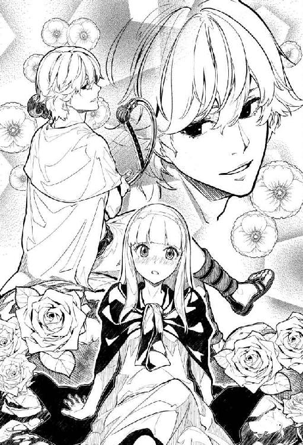

| Ｅｌｙｓｉｏｎ 二つの楽園を廻る物語 (上) (角川書店単行本) | |
| 十文字 青 | |
| (2015) | |


Elysion
二つの楽園を廻る物語（上）
［原作］Sound Horizon
［著］十文字青
［装画］左
角川ｅ文庫
本作品の全部または一部を無断で複製、転載、配信、送信したり、ホームページ上に転載することを禁止します。また、本作品の内容を無断で改変、改ざん等を行うことも禁止します。
本作品購入時にご承諾いただいた規約により、有償・無償にかかわらず本作品を第三者に譲渡することはできません。
本作品を示すサムネイルなどのイメージ画像は、再ダウンロード時に予告なく変更される場合があります。
本作品は縦書きでレイアウトされています。
また、ご覧になるリーディングシステムにより、表示の差が認められることがあります。
枯れ枝のような指が硬い木肌を撫でた。
陽射しを遮る深く暗い緑の葉々が風に嬲られてざわめいている。
年老いた女は隻眼を細めて樹木の表皮に爪を立てた。
こうして刻んだ傷も、やがては剝がれ落ちる樹皮と共に跡形もなく消え去るのだ。
不意に不吉な鳴き声が響き渡る。
黒い翼を羽ばたかせて一羽の鴉が老女の肩に降り立った。
「オルドローズ。オルドローズ」
「何だい、ムニン......」
「オルドローズ」
「はっ......」
年老いた女は嗤う。
彼女がムニンと名付けたその鴉は、さながら人語を解するかのように振る舞うが、所詮は声真似を得意としているだけに過ぎない。
「オルドローズ。《深紅の魔女と謳われた》オルドローズ」
「よせ。......私のことをその名で呼ぶんじゃあないよ」
「《深紅の魔女と謳われた》オルドローズ」
「よせと言っているのに......」
しかし、その名をムニンに教えたのは彼女自身なのだろう。ムニンが彼女の古き異名を知る筈もないからだ。
深紅の魔女。
老いたりとはいえ、腰よりも長い彼女の髪は若かりし頃のまま、目にも鮮やかな色濃い紅色と、妖しいまでの光沢を保っている。
抉られた片目は罰の象徴だが、彼女はその罪を忘れてしまった。
永い、永い時が流れた。
彼女の肌は滑らかさと張りを失い、皺だらけに成り果てた。
「《記憶》」
オルドローズは肩の上の鴉に呼び掛ける。
「遠い昔の......忌まわしき、遥か昔に捨て去ったその名で、私を呼ぶのはおよし」
「オルドローズ。どうしてだい、オルドローズ」
「とにかく、よすんだ」
「アアハハハ。アアハハハ」
その嗤い声をムニンに教えたのもオルドローズなのか。確かに彼女の声に似てはいる。だが、ムニンの前でそのように嗤ったことなどあっただろうか。
「年のせいかねえ......」
オルドローズは枯れ枝の指を自らの胸元から腹部へと這わせた。彼女は黒い夜会服を身に纏っている。否、黒かったと言うべきだろう。年月を経て、漆黒だった夜会服は黒鳶色と化している。彼女の乳房は豊かだった。今は萎びて垂れ下がっている。触れると肋骨の形が判るほど彼女は瘦せているのに、下腹には乾し肉のような贅肉がわだかまっていて、焼いても燃え尽きそうにない。
オルドローズは魔女だった。今も魔女だ。常人が彼女と同じ齢を重ねたならば彼女のように生きてはいられまい。決してその身を汚すことなく、特別な鍛練を積み、手製の秘薬を摂取することで、彼女は魔女であり続けている。
しかし、魔女も年老いた。
「ムニン」
「何だい、オルドローズ。何だい」
「次に私のことを《深紅の魔女と謳われた》オルドローズなどと呼んでごらん。おまえをとっ捕まえて、羽を毟って、焼いて食ってしまうよ」
ムニンは黒い瞳でじっとオルドローズを見つめている。
瞬きをして、首を傾げた。
「......畜生に言っても無駄さねえ」
「畜生。オルドローズ。畜生。それはおまえのことかい？」
「あんたのことに決まっているじゃないか、ムニン。馬鹿だね。さて......」
オルドローズは肩に鴉を止めたまま歩き出す。彼女の背筋は伸びている。伸ばしているのだ。この辺境の古い森を毎日彷徨うのも老いへの抵抗だった。幾ら抗ったところで時は無情にも過ぎゆき、彼女の寿命は刻々と削られる。彼女は磨り減るようにして死へと向かう。
終わりへと。
ああ、だが、魔女の耳をくすぐるその声は、終局を微塵も予感させない、始まりの響きだ！
オルドローズは足を止めて声の源を探る。
ムニンが鴉らしく、カアア、と鳴いた。それに呼応するかのように、声が高まる。オルドローズは声のする方へと足を運ぶ。カア。カアア。カア。ムニンが何度も鳴く。声が応える。
「信じられないこともあるものだ......」
やがてオルドローズは一本の大樹の前に立ち尽くした。
大樹の根は絡まり合う蛇のごとく隆起して、地表をのたうちながら土の中へと潜り込んでいる。
その地上根と地上根との合間に、嵌め込むようにして赤子が寝かされていたのだ。
赤子は灰色の御包みしか身につけていない。小さな拳を握り締め、目をきつく瞑って泣き叫んでいる。
「誰がこんなことを......」
「オルドローズ。アアハハハ。あんたじゃないのかい。オルドローズ」
「......私、だって？」
魔女は息を吞んだ。
あんたじゃないのかい。それはたぶん、いつかオルドローズがムニンに向けて告げた言葉だ。ムニンはそれを口にしただけ。ただそれだけの筈だ。意味などない。
無論、この赤子を捨てたのはオルドローズではない。この森でも人の姿を見かけることはあるが、赤子は久しく目にしていない。
魔女は魔力を維持するために子を産まず、彼女には縁者もいない。
赤子をこの腕に抱くことがあるとは、ついぞ思いもしなかった。
「......抱く？ 私が、この赤子を？」
そう。
魔女は身を屈め、赤子に向かって手を伸ばそうとしている。
「やめときな。オルドローズ。およし。オルドローズ」
ムニンが羽ばたいて魔女の肩から飛び立った。鴉の言うことなど気にする必要はない。だが、今はその忠告に従うべきなのではないか。魔女は迷った。
（この赤子を抱き上げて、どうする心算なのだい、オルドローズ？）
自問する。答えは浮かばない。まさか拾って救うとでも？ この子はまだ乳吞み児に違いない。乳をどうする？ 彼女の魔力を以てすれば、子連れの獣を従わせることくらいはわけない。しかし、獣の乳で人の子は育つのか？ 幾千の草花を見分け、星の運行を知悉して、雲の流れや木々のざわめきから天候を読み、呪いで運命を歪める魔女が、その程度のことも判らないとは。
判らない。だが、無知こそが恐怖の根源であることを、魔女は知っている。
魔女は赤子のことなど何も、何一つ判らない。
故に、恐ろしい。
魔女たるオルドローズが、人間の無力な赤子に恐れおののいている！
この恐るべき赤子を世話し、育てるなど到底不可能だ。それなのに何故、彼女は赤子に手を差し伸べようとしているのか。
渾身の力を振り絞って泣き喚く赤子を抱き上げて、どうしようと？
「......どうせお前は、永くは生きられまいね......」
放っておいても、この赤子は死ぬ。
ならば抱き上げて、首を絞め、今すぐ楽にしてあげようか？
「ああ......！」
魔女は乾いた両手で顔を覆った。掌が濡れる。吸い込まれることはない涙が指の間から溢れる。
（私が泣くとは......！ このオルドローズが......！）
ただ赤子の細い首に手を掛けてそっと力を込めるところを思い描いただけなのだ。赤子は窒息して泣き声も奪われ、程なくたった一つのちっぽけな命を失うだろう。その様を想像しただけで魔女の胸は引き裂かれそうになった。
矢も楯も堪らず彼女は赤子を抱き寄せた。
「おお、なんと......なんと小さいのか......軽い......軽いねえ、お前は......」
赤子は泣き続けている。抱いてみたはいいものの、魔女はおろおろするばかりだ。抱き方もこれでいいのか悪いのか、そもそも正しい抱き方などというものがあるのかどうかさえ、魔女には判らない。
「よし、よし、おお、泣くのはおやめ、お願いだからさ、ねえ、お前、大丈夫だよ、もう大丈夫、悪いことは起こらない、本当さ、この魔女が言うんだから間違いないよ、だからね......」
魔女が揺すったり、顔を近づけたり、遠ざけたり、話し掛けたり、ち、ち、ち、と舌を鳴らしてみたりしている内に、赤子はどうにか落ち着きを取り戻したようだ。否、そうではなくて、泣き疲れたのだろう。
赤子の目は閉じかけている。
唇を動かしているが、もう声は出していない。
「眠いのかい、お前。そうかい、そうかい。眠るといいよ。その間に、ばぁばがお前に飲ませる乳を、何とか見つけておいてあげるからね。ああ、私がもっと若ければ......」
言いながらオルドローズは涙ぐんで、自分の目に溜まっている涙にひどく動揺した。
（若ければ......何だというのだい？ 乳を含ませるとでも？ この魔女が......ばぁばか。それはそうだ。母親にしては、私は老いすぎている。お祖母ちゃんがいいところさ......）
赤子を抱いてゆっくりと、慎重に歩きながら、魔女は物語を紡ぎ始めていた。彼女はこの赤子の祖母なのだ。母親は事情があって赤子を捨てざるをえなかった。だから、祖母の彼女が母代わりとなって赤子を育てる。そんなありふれた物語を、愚かな俗人どもと同じように魔女はいつかこの子に話して聞かせるのだろう。
赤子の瞳が鮮やかな緋色だということに、魔女は気付いていた。しかし、それが一体どうしたというのだろう？
（お前は、私の子だ......）
※
彼女は行ったことはないが、この《果ての森》を出て退屈な荒れ野を越えると、《王国》があるのだという。
その《王国》がどんな所なのか、彼女はよく知らない。何でも、大勢の人が住んでいるらしい。石の建物があるらしい。祖母に訊いても、その程度のことしか教えてくれないのだ。
（お祖母ちゃんは昔、《王国》に住んでいたのかしら？ そんな気がするけれど......）
彼女は見たこともない《王国》を想像する。一度でいいから行ってみたいと願っているが、祖母に自分の気持ちを話したことはない。
（たぶん、お祖母ちゃんは思い出したくないんだわ。それで、《王国》のことも話したがらないのよ。何か厭なことでもあったのかしら......）
彼女は毎日、《果ての森》を歩いて、薬草を摘んだり、花を愛でたり、栗鼠や鳥を探したりしながら、考え事をする。
もっと幼い頃は、森では祖母と手を繫いで片時も放さなかったものだ。森には危険な獣がいるし、足を踏み入れるべきではない場所もある。決して手を放してはいけないと祖母は彼女に何度も言い聞かせた。
今では彼女も森を熟知しているし、祖母に習った魔法で獣を追い払うくらいのことはできる。森で人の姿を見ても近づいてはいけない、すぐさま身を隠すこと。祖母が定めたその掟は、彼女の身体に染みついている。森は彼女に危害を加えない。暗くなる前に行って帰って来られる距離までの森は、彼女にとって庭のようなものだ。最近では一人きりで散策することの方が多い。
祖母は森の際にぽつんと立っている丸太小屋か、その小屋から眺め下ろせる《嘆きの川》の畔で、彼女の帰りを待っていることだろう。
彼女は毎日、一緒に森へ行こうと祖母を誘うのだが、大体断られてしまう。
（身体がよくないんだわ......）
彼女は足を止めて頭を振り、銀色の髪を揺らす。
確かに祖母はこの頃、顔色が優れず元気がない。でもきっと、悪い風に当てられたか何かしただけだろう。彼女も偶に熱が出たり咳が止まらなかったりすることがある。おそらく祖母も同じだ。暫く養生すればよくなるに違いない。
そう思いはしても、祖母の顔が浮かぶと落ち着かなくなった。薬湯を立てて祖母の手足を浸し、丹念に摩ってあげたい。そのための薬草で彼女の手提げ籠は一杯になっていた。何種類かの薬草はまだ少し足りないが、これ以上遠くに行くと日が落ちるまでに帰ることができなくなる。そろそろ引き返そう。
彼女は踵を返した。
「......いたぞ！」
と鋭い声が響いたのはその時だった。
彼女は反射的にしゃがみ込んだ。自分が何故そうしたのかは判らない。とにかくその行動が彼女を救った。
うずくまる彼女の頭上を何かが飛び過ぎていって、少し先の木にそれが当たった。ただぶつかっただけではない。それは木に突き刺さった。
細い棒に鳥の羽根のような物がついていた。何だろう？ とにかく危険な物だ。
同じ物がまた飛んできた。
彼女は悲鳴を押し殺して四つん這いで逃げながら、声の主がどこにいるか見当を付けようとした。彼女は攻撃されているのだ。人間に。彼女は祖母以外の人間も遠目に見たことがある。人間にも獣のように雄と雌がいて、人間の場合、雄は男、雌は女と呼ぶ。あの太い声は男だ。
男は一人ではない。何人かいるようだ。
彼女は大きな木の地上根に身を隠して息を潜めた。草を搔き分ける音が聞こえる。
「どこに行った！」
「捜せ！」
「魔女にしては、かなり若かったが......」
「構うものか！ 化物じみて白かった！ 子供だろうと、魔女の仲間だ！」
三人──否、四人はいるらしい。
魔女とは、祖母のことだろう。ムニンという声真似が得意な鴉が祖母をそう呼ぶことがある。
どうやらあの男達は、祖母を捜しているらしい。ただ捜しているのではない。彼らはいきなり彼女を攻撃してきた。祖母に酷いことをしようとしているのだ。
彼女はこの頃膨らみ始めた胸を強く押さえる。動悸が激しい。心臓が破裂してしまいそうだ。この高鳴りを男達が聞きつけるのではないかと思えて、気が気でない。
「出てこい！ おとなしく出てくれば、殺しはしない！」
一人の男がそう怒鳴った。本当だろうか？ とても信用できない。それに、殺しはしない、と男は言った。仮に男がその言葉を守ったとしても、殺されはしないだけで、何をされるか判ったものではないのだ。
（......お祖母ちゃんのところには、帰れない）
もし彼女が男達に追われるまま祖母の許に戻ったら、大変なことになる。男達の狙いは祖母だ。
（どうしよう......）
※
オルドローズは河原の岩に腰を下ろして霞む目で川の向こうを眺めていた。
気がつくと、だいぶ時間が過ぎている。そんなことがめっきり増えた。
立っていると膝や腰が軋むように痛むので、座っていたい。座っていても、いつの間にやら背が丸まっている。とりわけ歩くのは億劫だ。本当は日がな一日横になっていたいが、あの子を心配させたくない。
「......まだ早い」
呟いて、魔女は嗤う。まだ早い。何がまだ早いというのか？ 魔女はそれが何か知っている。オルドローズは魔女なのだ。その訪れも、常人よりは遥かに、明確に感じ取れる。その足音が魔女には聞こえる。
「でも、まだ早いんだよ......あの子を置いては、いけない......」
滔々と流れる灰色の川の対岸で蠢く者達の姿が、白く濁った魔女の目には殆ど見えない。
風の冷たさで、日が暮れかけていることを魔女は知った。
「......はて。あの子が帰って来てもいい頃だけど......」
森から戻れば、まず魔女の許へと駆けつけてくるのが常だ。孫に抱き締められるたびに、魔女の胸が喜びと嘆きで灼かれる。ただいま、お祖母ちゃん。耳許でそう囁く孫の声は、どこまでも愛おしく、残酷に魔女を痛めつける。
「オルドローズ。《深紅の魔女と謳われた》オルドローズ。オルドローズ」
ムニンの声を聞いて、魔女は暮れなずむ空を仰いだ。黒翼を羽ばたかせて鴉が降下してくる。肩に降り立ったこの鴉はあのムニンと同じムニンなのかどうか。体格や嘴の形からすると同じムニンとしか思えない。この鴉はどれだけの寿命を与えられているのだろう。
「......どうしたんだい、ムニン。その名で呼ぶなと、何度も言ってるのにね......」
「オルドローズ。また人間が森に入り込んだようだねえ」
また人間が森に入り込んだようだねえ。
それはいつかオルドローズがムニンの前で呟いた言葉だ。ムニンはただそれを覚えていて口に出しただけなのか。
「......帰りが遅い。遅すぎる」
オルドローズは立ち上がった。曲がっていた背筋を伸ばす。曇っていた視界が心なしか晴れたような気がする。
「じき、半亡者どもが川を渡り出す。......あの子がそれまでに戻って来なかったことは、一度としてないんだよ」
「行くのかい。オルドローズ」
「ああ、行くさ。あんたは巣に帰らなくていいのかい、ムニン」
「アアハハハ。余計なお世話だよ。アアハハハ」
「......そうかい。好きにするがいいさ。ああ、物真似鴉め。喋れるってわけでもないだろうに」
「急ぎな。オルドローズ。急ぐんだよ」
「まったく......」
オルドローズは敢えて大股で歩いた。砂と大小様々の石を踏み締め、あるいは踏み越えて河原を通り行くと、ちょっとした崖のようになっている。その先が《果ての森》だ。崖の上には丸太小屋が立っている。孫はこの崖を上り下りしてしまうが、魔女には無理だ。少し下流方向へと進むと、崖が低く、また緩くなっていて、斜面に石段が築かれている。丸太小屋は魔女が使い魔に建てさせた物だが、この石段は違う。魔女の前任者が造ったらしい。
オルドローズは石段を上がって森に入った。息が切れそうになっても、構わず進んだ。
日は間もなく落ちた。
オルドローズは新月花と姫蓬の魔法を使った。忽ち魔女の隻眼が輝き出した。これで猫のように夜目が利く。魔女は暗い森を苦もなく進むことができる。
あちこちの地べたを這いずる気配がする。死にたての半亡者達だ。半亡者達は《果ての森》に集まって来て川を渡る。《嘆きの川》を。川のあちら側は冥府だ。冥府で半亡者は亡者と成り果てる。神々がこの世界を見捨てて去る前に残した、それこそが生と死とを隔てる仕組みなのだ。
哀れな半亡者達を刺激してはならない。
しかし、オルドローズは急いでいた。息を荒らげて足を速めれば速めるほど半亡者達を引き寄せることになる。それがどうしたというのか。もし足首を摑まれでもしたら、魔女は半亡者の頭を蹴飛ばしてやるだろう。半亡者は既に死んでいるので苦痛を感じない。頭を蹴られたくらいでは手を放しはせず、魔女に縋り付いてくるかもしれないが、その時はその時だ。半亡者に手酷い打撃を加える禁じられた魔法すら、魔女たるオルドローズは身に付けている。
禁じられた魔法を行使すれば、大きな代償を支払うことになるだろう。魔女の肉体はその瞬間から朽ち始めるかもしれない。
それでもいい。
魔女は年老いている。走ることはできない。精一杯の早足で夜の森を突き進む。魔女は何度もつんのめって転びかけた。そのたびにムニンが魔女の肩に後足の鉤爪を食い込ませて羽ばたき、引っ張り上げた。たかが鴉にそんな芸当ができようとは。驚いている暇はない。
「......うわあ！」
人間の悲鳴を聞いた。男の声だ。そう遠くはない。魔女はすぐに男を見つけた。
男は半亡者に足を摑まれているようだ。尻餅をついて藻搔いている。
「や、やめろ！ 放せ！ だ、誰か、助けて......」
魔女は男に近づいてゆく。半亡者の無残な姿を見てはいけない。半亡者は生者に見詰められることを嫌う。男も魔女に気付いたらしい。
「お、お前は......魔女！」
「うら若い娘を見たね」
「......し、知らない！ 俺は、何も......た、助けてくれ！」
「髪は銀色で、肌の白い娘だ」
「見失ったんだ！ 手分けして捜してる途中に、夜になって......頼む、殺さないで......！」
「あの子の......娘の居場所を知らないのなら、貴様に用はない」
オルドローズは男の額を指差して恐ろしい呪いの言葉を唱えた。
男が自分の首に両手を絡めた。思い切り力を込めて絞めている。男が窒息して気を失えば、この魔法は解けてしまう。なぜ一思いに男を死に至らしめる魔法を使わなかったのか？ 男を哀れんだのではない。老いた魔女は咄嗟に消耗を恐れ、簡単な魔法を選んだのだ。気絶した男はどうせ半亡者に縊り殺されるだろう。余計な手間が省ける。弱気な自分をそう納得させるしかなかった。
魔女は男と半亡者を置き去りにして歩き出した。男が見えなくなってから振り向き、臍を嚙んだ。手分けして、と男は言った。男の仲間は何人いるのか。それだけは聞き出しておくべきだった。あの子にはこの世に一つしかない《守り手》の魔除けを持たせている。本来は《守り手》である魔女が肌身離さず携帯しているべき、前任者から受け継いだ魔除けだ。あの子だけは半亡者達に襲われることがない。男達の手に掛からなければ、あの子は森で夜を明かせるだろう。魔女が男達を見つけ出して全員始末してしまえば、あの子はおそらく大丈夫だ。人数さえ判っていれば。
魔女ともあろう者が耄碌した。重い後悔と自責を引き摺りながら魔女は歩いた。
いつしかムニンは魔女の肩から離れていた。時折、ムニンの声が闇を劈く。半亡者達は何故だか魔女に寄り付かない。
（どこだい......）
魔女は《果ての森》を歩いた。
（どこにいるんだい......）
半亡者達の気配は感じる。
ムニンがどこかで鳴いている。
それだけだ。男達は見付からない。
空が白み始めた。
汗に濡れていた魔女の身体はもうすっかり冷え切っている。腰は曲がり、膝は曲がらない。脚は単なる棒のようだ。
猫目の魔法の効力は疾うに切れている。
森は朝靄に煙っているが、そうでなくても魔女の隻眼は白濁していて、はっきりとは見えない。
「おお......おお......」
魔女は遂に崩れ落ちるように跪いた。
「ラフレンツェ......！ ラフレンツェや......！ ばぁばだよ！ ばぁばはここにいるよ......！ 隠れているなら出てきておくれ、ラフレンツェ......！ お願いだから......！」
泣けるものなら泣いていただろう。しかし、魔女の体内には一滴の涙を零すだけの水分すら残っていない。
魔女はひたすらあの子の名を呼び続ける。
声は嗄れた。
一つしかない目はとうとう光を喪った。
「......お祖母ちゃん......！」
その声が耳を打った時、魔女は夢に違いないと思った。次に空耳を疑い、ムニンの声真似ではないかと疑った。
「お祖母ちゃん......！」
「ああ......！」
違う。
夢でも、空耳でも、ムニンの声真似でもない。あの子だ。
紛れもなく、ラフレンツェの声だ。
魔女は首を廻らす。しかし、視界が曇ってよく見えない。
お祖母ちゃん、お祖母ちゃん、と何度も叫びながら、ラフレンツェが駆けてくる。
抱き付いてきた。
「お祖母ちゃん......！ 怖かった！ 男の人達に追い掛けられて、私、怖くて、隠れていたの！ あの人達、お祖母ちゃんを狙っているようだったから、森でやり過ごした方がいいんじゃないかと思って！ でも、お祖母ちゃんが私を捜しに来てくれているなんて......！」
「......心配していたよ、ラフレンツェ。よかった。本当に、よかった」
ラフレンツェの弾けるような、それでいてどこまでもやわらかな身体とぬくもりを感じると、オルドローズの胸は喜びと嘆きで灼かれたものだ。ラフレンツェの声はオルドローズを慰めながら傷つけた。ああ、愛しい、魔女に初めて愛おしさを教えてくれた娘。魔女は老境に入るまで知ることはなかった。愛とはこのようなものだったのだ！
だが、ラフレンツェは余りにも美しすぎた。銀色の髪に緋色の瞳、雪のように白い肌。背筋が凍るほど美しい娘に育った。この娘は日ごとに美しくなってゆく。まだ十二歳。どこまで美しくなるのだろう？ オルドローズもかつては己の美貌を誇っていた。しかし、魔女が最も美しかった頃でも今のラフレンツェに及んでいたかどうか。ラフレンツェは美しすぎる。オルドローズは嫉妬した。醜く愚かな感情だと思い、打ち消すことができなかった。魔女はラフレンツェを羨んだ。
その美しさを、若さを、可能性を、妬まずにはいられなかった。かといって、憎むことなどできよう筈もない。芽生えた愛は魔女の奥底まで根を張っていた。愛は咲き誇っていた。
ゆえに魔女は苦しんだ。自分はこの子を喪うのだ！ 必ず自分はこの子より先に死ぬ！
そして、魔女をより恐怖させたのは、自分自身がラフレンツェを喪うことよりも、ラフレンツェが拠り処としていて、おそらく愛してもいるだろう祖母を喪うことだった。ああ、なんて可哀相なのだろう、ラフレンツェ！ お前はいつか、しかも遠からず、独りになってしまうのだ！ この魔女はお前を置いて去らねばならないのだ！
ラフレンツェが愛しければ愛しいほど、オルドローズは苦痛を感じた。だが今は喜びしかなかった。愛しかなかった。
「ごめんなさい、お祖母ちゃん！ 私のせいで、こんなに......」
「馬鹿をお言いでないよ、ラフレンツェ。お前が謝ることなんてないんだ。お前は無事だった。それだけで充分だよ。ラフレンツェ、私はね、お前がいればそれでいい。他には何もいらないよ。だから、これでよかったんだ。本当に、よかったんだよ......」
※
その日から祖母は、殆ど丸太小屋の寝台に身を横たえて過ごすようになった。けれど、祖母はいつも笑みを浮かべていた。眠っている時でさえ口許が微笑んでいた。こんなにも穏やかで満ち足りている様子の祖母をラフレンツェは見たことがなかった。だから、ラフレンツェも幸せだった。
祖母の口数は前より遥かに増えた。祖母は横になったまま、様々なことをラフレンツェに教えた。一日に十も二十も新しいことを習うので、ラフレンツェは目が回りそうだった。森を歩く暇さえないほどだった。偶に散歩に出ても、すぐ小屋に戻って祖母と話した。そうするべきだとラフレンツェは感じていた。祖母もラフレンツェも判っていたのだ。
この幸せな時間は永くは続かないだろう。ゆえに、一瞬一瞬を大切にしなければならない。
二人は手を握り合って話をした。夜は一つ寝台で寝た。
ラフレンツェはたくさんの魔法を覚えた。祖母は覚えのいい最高の生徒だと言ってラフレンツェを褒めた。ラフレンツェは嬉しくて、水を飲むように祖母の知識と技術を次々と吸収した。
「......頃合いかねえ......」
ある日、祖母がそう言い出した。ラフレンツェはどきっとしたが、その時が来たのではないようだった。
「私は《王国》から追放され......この《果ての森》に流れ着き、前任者から《守り手》の役割を受け継いだ。それは、私が魔女だったから......そして、魔力を高め、保つために、身を汚していなかったからだが......条件は条件として、私は運命に導かれ、この森にやって来たんだろう......つまり、私が《守り手》になることは、あらかじめ決められていた......今にして思う......運命もまた、この世界の仕組みなんだろう......」
「私が、次の《守り手》になるのね」
ラフレンツェは薄々勘付いていたのだ。
「これも運命なんだわ」
「......お前に背負わせてしまうのが、いいことなのか、どうか......ばぁばには判らないんだよ」
「どうして？ お祖母ちゃんの跡を継ぐのよ。いいことに決まっているわ」
祖母は見えない目に涙を浮かべて大いに喜んだ。
こうしてラフレンツェは《儀式》を執り行うことになった。灰色の、生者は渡ることができないとされる《嘆きの川》を敢えて渡り、戻って来るのだ。実は川底に一本の《道》が造られていて、そこだけは浅くなっているから、歩いて渡ることができる。そうはいっても、《守り手》の証を身に付けていなければ、川の流れに攫われてしまうだろう。ラフレンツェはそれを祖母から譲り受けた。祖母が左手の薬指に嵌めていた指輪だった。ラフレンツェはその指輪を着けて、あとは何年も前から持たされている魔除けの首飾りを首に下げ、河原で裸になった。
祖母はビレイグという名の片目の大鹿を呼びだし、その背に乗って付いて来た。ビレイグはずっと昔に祖母が一度、使い魔にしたことがあるのだという。祖母はビレイグに報いるために叡智と力を与え、彼はそれによって鹿の王となった。ビレイグは王にしてもらった恩を返すべく、祖母をここまで運んで来てくれたのだ。
祖母の肩には黒い翼のムニンが止まっている。
ラフレンツェは祖母らに手を振って《嘆きの川》に入っていった。灰色の水は氷のように冷たく、流れは速かったが、彼女は恐れなかった。彼女は祖母を信じていた。祖母が彼女を送り出した以上、怖がる必要は微塵もないのだ。川は灰色に濁っているので見えないが、《道》は平らに削られた岩だった。水位は彼女の腰くらいだ。勿論、油断すれば押し流されてしまう。しかし、彼女は祖母の言い付けを守り、気を抜かずに一歩一歩着実に進んだ。
対岸が近づいて来た。彼女が亡者達の姿をはっきりと見たのはこれが初めてだった。
死して亡者と化したとはいえ、怪物に変貌してしまうわけではない。彼ら、彼女らは人間だった者達であり、ある意味、未だ人間なのだ。ただし、亡者は息をしない。その身には血が通っていない。成長することも、老いることもない。《嘆きの川》の向こう、冥府と呼ばれる場所を、亡者達は永遠に彷徨い続けるのだ。
ラフレンツェが目指す河岸に、亡者達は集結しつつある。しかし、亡者達が伸ばした手が彼女に触れることはない。指輪の魔力が亡者達から彼女を守るだろう。
彼女は臆することなく河岸へと向かった。亡者達が少しずつ退いてゆくのが判る。
（やっぱりだわ......！）
勇気付けられて、足を速めたくなった。逸る気持ちを抑え、同じ速度で《道》を進む。
とうとう河岸に至った。ラフレンツェは裸足で乾いた石を踏み、彼女を遠巻きにしている亡者達を見回した。
（対岸に着いても、決して勝ち誇ってはいけない......お祖母ちゃんが言っていた）
祖母の言葉を思い出して、ラフレンツェは顔を伏せた。回れ右をして、再び川に入る。帰り道こそ用心しなければならない。
（判っているわ、お祖母ちゃん。私は、大丈夫......）
ラフレンツェは川向こうで彼女を待っている祖母らを見ないようにした。祖母の顔が目に入ると、どうしても早く帰りたくなってしまう。一刻も早く祖母を抱き締めたくて堪らなくなる。
必死で我慢して、ラフレンツェは川をもう一度、渡り切った。
「ああ、ラフレンツェ......！」
「お祖母ちゃん......！」
ラフレンツェは濡れた裸のまま、ビレイグの首にしがみついている祖母に飛び付いた。祖母が彼女の額に接吻した。彼女は十三歳で《守り手》となった。
「ラフレンツェや......忘れてはいけないよ......」
その日から祖母は寝台の上で厳しい顔を覗かせるようになった。
「お前は冥府に巣くう亡者どもの手から......この世界を守るための、最後の黄泉の番人......純潔の結界を、破らせてはいけないよ......」
「ええ。心配しないで、お祖母ちゃん」
ラフレンツェは祖母の冷たい手をしっかりと握って微笑みかけた。
「私は《守り手》。以前の私とは違う。お祖母ちゃんが私を《守り手》にしてくれたのよ」
そう言うと、祖母は少しだけ困ったように、それでも笑い返した。どうして祖母がそんな表情をするのか。《守り手》となったラフレンツェにはその理由が判っていた。
祖母は昼間でも寝入ることが多くなった。一度眠ると暫くは目を覚まさない。祖母が寝ている間、ラフレンツェは外に出て河原で対岸を眺めた。
風に乗って、《守り手》になる前は聞こえなかった、不協和音のような亡者達の声がラフレンツェの耳に届く。
「──オノレラフレンツェ」
「──ニクキラフレンツェ」
ラフレンツェ。
ああ、亡者達は彼女の名を呼び、恨み嘆いているのだ！
何故ならば、ラフレンツェが《守り手》だから。《守り手》が運命に従って純潔の結界を守っているかぎり、この《嘆きの川》は生者と死者を隔て続ける。命が尽き半亡者として川を渡り亡者と化した死者達は、叶うことならば再度この川を渡ってこちら側に戻って来たいと願っている。それを阻んでいるのが《守り手》だ。ラフレンツェなのだ。
否、《守り手》であるラフレンツェを怨嗟しているのは死者達だけではない。生者の全てではないが、一部の者達は生きたまま《嘆きの川》の向こうに行きたがっている。亡くした家族や友人との再会を望む者が大半のようだが、冥府の最果てに神々が御座す不死の楽土があるという迷妄に取り憑かれている者もいるらしい。
かつて祖母を狙って森に入り込んだ男達はその手合いだったのだ。
森は広大なので、《嘆きの川》まで辿り着くことができる者は極めて少ない。だが、皆無ではない。いずれ《守り手》を殺すか純潔の結界を壊すかして、《嘆きの川》を渡ろうと企てる者がまた現れることだろう。
（生者にも死者にも憎まれる存在、それが《守り手》なんだわ......）
しかし、運命が魔女オルドローズを、そして彼女を導いて、《守り手》に選んだ。
世界の仕組みを維持するために、《守り手》は是非とも必要だ。誰かが必ずこの役割を担わなければならない。
魔女オルドローズ、ラフレンツェの祖母は、その重責を果たした。今度は彼女の番だ。
ムニンが小屋の屋根の上に止まっている。あの鴉は祖母の肩にしか乗ろうとしない。寂しく感じることもあるが、ムニンは祖母が好きなのだろう。ラフレンツェと同じだ。そう思うと、胸の奥がほんのりとあたたかくなる。
「亡者達よ......」
ラフレンツェはいつしか対岸の亡者達に語りかけるようになった。話すことが何もなくなると、小さな唇で祖母から教わった歌を奏でた。
（お前達は私が恨めしいのかもしれない......でも、私はお前達を憎んだりはしない。お前達の荒立つ心を、鎮められるものなら鎮めたい......）
彼女は祖母の側に居続け、祖母が眠ると川の畔で歌い続けた。
ある晩、祖母が奇妙にはっきりした声で言った。
「ラフレンツェや」
「......なあに、お祖母ちゃん」
「どうやら、お別れの時が来たようだよ」
「そんな......」
ラフレンツェは祖母に取り縋ろうとして思い止まった。ただただ祖母の手を握り締めた。
「......さよならをしなければならないのね」
「どうか、お前の手でこのばぁばを川に流しておくれ。半亡者となった姿など晒したくはない」
「それはとてもつらいことだわ」
「でも、お前は私の願いを叶えてくれる筈さ。そうだろう、ラフレンツェ」
ラフレンツェは頷いて祖母を抱え上げた。祖母はとても軽かった。小屋を出ると、夜なのにムニンが、カアア、カア、カアア、とどこかで鳴いていた。
「ああ、ムニン......お前は友達だった......私にとって、唯一の......」
祖母がラフレンツェの腕の中で呟いた。ラフレンツェは何か言おうとしたが、口を開くと泣いてしまいそうだった。祖母を川辺まで運んだ。どうしてか、今夜は亡者達の声が聞こえなかった。
「さようなら、お祖母ちゃん」
「......さようなら、ラフレンツェ」
「大好きよ」
「......私もさ。愛しているよ、ラフレンツェ」
「私の方が、もっと愛しているわ」
「......これじゃあ、きりがないねえ」
「そうね」
ラフレンツェは冷たい水に入って祖母を川に浮かべた。
「......ありがとう」
祖母は最期にそう言った。
ラフレンツェが手を放すと、祖母はあっという間に流され、沈んでしまった。
魔女オルドローズは死んだ。
ラフレンツェは祖母を喪った。
翌朝、軒先に黒い物が落ちていて、よく見ると鴉だった。もう蟲が集っていた。
ムニンも祖母の後を追ったのだ。
本当に独りきりになってしまったことを、ラフレンツェは悟った。
※
（どうしてお祖母ちゃんは、私を置いて先に逝ってしまったんだろう......？）
愚問だということはラフレンツェもよく判っている。
人には運命があるのだ。生きるべくして人は生き、死ぬべくして死ぬ。祖母は何もラフレンツェを独りにしたかったわけではない。自分の運命に従っただけだ。そうせざるをえなかったのだ。
（でも、酷いわ。だって、お祖母ちゃんがいなくなれば、私がこうやって独りぼっちになることは、判りきっていたんだもの......）
森を歩く気にはなれなかった。河原にいれば、亡者達の呪詛を聞き続けなければならない。ラフレンツェは小屋から殆ど出なくなった。
（お祖母ちゃんに、会いたい......）
彼女は《守り手》の証である指輪を左手の薬指に嵌めている。《道》の場所も知っている。
いっそ、《嘆きの川》を渡って、祖母を捜しに行けばよいのではないか？
（......駄目だわ。そんなことしては。生者は川を渡ってはいけないし、本来、渡ることはできない。あれは《守り手》になる時、たった一度だけ許される儀式なんだし......禁忌を破れば、その報いを受ける。そういうものなんだから......）
食べ物は、片目の大鹿ビレイグの配下や、その他の獣たちが、小屋の前に置いていってくれる。ラフレンツェが暮らしに困らないように、祖母は死ぬ前にそうした手配を済ませていた。
水は小屋の近くにある井戸から汲んで甕に溜めておく。ラフレンツェ一人ならそうたくさんの水を使うわけではないから、数日おきに井戸と小屋の間を何度か往復すればいい。
（運命......）
ラフレンツェは祖母の寝台に横たわって考え事に耽る。
（お祖母ちゃんが冥府に渡ったのも運命なら、私がここで《守り手》として一生を終えるのも運命なんだわ。運命は定められている......誰が定めたのかしら？ もし......万が一......）
例えば仮に、ラフレンツェが禁忌を破って《嘆きの川》を渡ったとしたら、それもまた運命なのだろうか。
大きな過ちを幾度も犯したとしたら、それも運命なのか。
（何か、おかしな......）
神々はこの世界を見捨てて去ったのだと祖母から教えられた。しかし、神々は人を哀れんで、運命や生死の仕組みを残していったのだと。それがあるから、人は辛うじて獣達とは異なる命を繫いでゆける。従うべき運命や生死の仕組みを喪えば、人は畜生に成り下がるだろう。
『悲しんではいけないよ、ラフレンツェや......』
最期が近くなると、祖母は自分がいなくなった後のことも時に語った。
『人は誰しも死ぬ......だけどね、死んで冥府の亡者になったからといって、人生が無に帰すわけじゃない......人は死んでも生き続ける......このばぁばは、死んでもお前の中に生きている......』
（......でも、私は悲しいわ、お祖母ちゃん）
『それは勿論、何かを喪えば寂しいだろう......けれどね、ラフレンツェ。寂しさは時が癒やしてくれる......時間が解決してくれる問題は、思いの外たくさんあるものさ......』
（この寂しさも、時が経てば消えてしまうのかしら？ それはそれで、お祖母ちゃんのことを忘れてしまうみたいで......私、何だか厭だわ......）
ラフレンツェが語らう相手は想い出の中の祖母しかいない。
その記憶も日ごとに薄れてゆく。
気が付くと、禁忌を破って祖母を捜そうなどという気持ちを抱くこともなくなっていた。
ラフレンツェは森をうろつくことこそなかったが、時には川の畔に腰を下ろして対岸を眺めるようになった。
風が亡者達の声を運んでくる。
「──オノレラフレンツェ」
「──ニクキラフレンツェ」
（可哀相な亡者達......）
ラフレンツェは嗚咽も洩らさず静かに涙を流した。しかし、亡者達を慰めるために歌う気にはどうしてもなれなかった。
（あの子達に、私の歌は届かない......）
亡者達はラフレンツェを恨み続ける。ラフレンツェは亡者達を哀れみ続ける。
互いの思いが交わることはない。
祖母が言ったように寂しさが癒えることはなかった。ただ、寂しさの姿はラフレンツェの中で次第に変化していった。
もう身を切るように寂しくはない。寂しさは刃の形をしてラフレンツェを切り刻みはしない。
寂しさはただそこにある。彼女の身近に。今となっては、亡者達の怨嗟と寂しさだけが影のように彼女に寄り添っている。
（これが《守り手》の運命......）
受け容れるしかないのだろうか？
彼女も寂しさと共に年を重ねた。想い出の祖母に話し掛けることは最早ない。祖母が彼女に幾つもの噓を吐いたことも自然と判っていた。
祖母は、祖母ではないだろう。
おそらく彼女は森に捨てられていたのだ。祖母は彼女を拾い、育てた。彼女も獣や蟲達の営みを通して生き物が子をなす筋道くらいは知っている。祖母は彼女の母に成り代わるには年老いすぎていた。だから、祖母だということにしたのだ。
（私の母は誰なのだろう？）
確実なことは一つだけ。
母は彼女を捨てた。
彼女は母にとって不必要だったのだ。邪魔だったのかもしれない。生まれるべきではない子だったのだろう。それで、彼女は《果ての森》に遺棄された。
（それが私の運命......）
自分のような者は《守り手》に相応しいのかもしれない。ラフレンツェはそうも思った。
この《嘆きの川》の畔で、独り純潔の結界を後生大事に守り続ける。生まれながらにして不要な存在だった彼女のような人間には、これ以上ないほどお似合いの役目なのではないか？
もしかすると、いつかラフレンツェも森で泣き叫ぶ捨て子を見つけるのかもしれない。彼女はその子を抱き上げるだろう。祖母から受け継いだ知識や魔法を駆使して、どうにかその子を育てようとするだろう。彼女はその子の母か祖母の振りをするだろう。その子はやがて次の《守り手》となるだろう。彼女は死んで川に流される。冥府で亡者となるだろう。
（定められた、運命......）
そんな運命を編んだ者には文句の一つくらいは言ってやりたい。
しかし、その運命に抗うことは結局できないだろうという気もする。
ラフレンツェは森を歩くようになった。一つには若い彼女の身体がひたすらじっとしていることを許さなかったのだ。
人間に出くわすのは怖いから、何か動く物の気配を感じると、彼女はすぐに身を隠した。
一方で、彼女は求めていた。
ふと耳を澄ます。獣の鳴き声以外に聞こえる音はないだろうか？
彼女のように捨てられた赤子が、どこかで泣き喚いているかもしれない......。
それが唯一の希望ですらあるように感じていることを、彼女は認め難くも認めざるをえなかった。この孤独から逃れるには、彼女と同じくらい絶望的に孤独な小さな命を手に入れるしかない。そうしてその命を、無慈悲にも残酷な《守り手》の運命に譲り渡すのだ。
（連鎖......運命とは、果てのない繰り返しなのかしら......？）
だとしたら、繰り返すことに何の意味があるというのだろう。
いっそ、課せられた役目など、忌まわしい運命など、放り投げてしまえばいい。神々が残した仕組みなど壊れてしまえばいいのだ。
それが恐ろしい思い付きだということはラフレンツェも自覚していた。彼女はそんなことはしないだろう。しかし、祖母も同じような考えに囚われたことがあるのではないか。一度ならず二度、三度、ひょっとするとそれ以上、何回も何回も、運命から逸脱してしまいたいと願い、目論んだことさえあるのではないだろうか。
その果てに、祖母はラフレンツェと廻り逢った。
死の間際、祖母は幸福そうだった。
（私が生まれたことにも、意味があった。お祖母ちゃんを見送ってあげられた......）
ラフレンツェも誰かに見送られて命を終えるのだろうか？ 彼女が《守り手》として孤独に耐え続ければ、いつか運命が報いてくれるだろうか？ 祖母は運命に報いられた。そう言うことができるのだろうか？ 果たして祖母は本当に幸せだったのか？ 所詮、死ぬ時は独りなのだ。祖母も川に沈んで死ぬ瞬間はたった独りだった。最後の最後に祖母は孤独だった！ 祖母は意識が闇に落ちる寸前に、無残な人生だったと儚んだかもしれない。
（私は......私達は、何故生きるの......？ 生きなければならないの......？）
ある日の夕暮れに川の畔で亡者達の声を聞くともなく聞きながら、ラフレンツェは問い掛けた。答えられる者がいるのならば、どうか答えて欲しい。
（生きる意味なんて、何もないんじゃないかしら？ それなら、こんな世界、壊れてしまったって構わない......）
辛すぎる。
彼女は泣いた。こうして独り、終わりが見えない時を過ごすのが逆らえない運命なのだとしたら、そこには苦しみしかない。
その音が耳に滑り込んで来なければ、彼女は《嘆きの川》に身を投げて、全てを終わらせていたかもしれない。
最初は何の音色なのか判らなかった。少なくとも、彼女が一度も聞いたことのない種類の音だ。それだけは間違いない。
この澄んだ音は──高さの違う透き通った音が幾つも重なっている音は、どこから流れて来るのだろう？
亡者達の声が聞こえないことに彼女は気付いた。亡者達もこの音色に耳を傾けているのかもしれない。
彼女はかつて祖母がよく腰掛けていた岩から立ち上がった。この音色の源を突き止めなければならない。この音色は何だろう？ こんな音色を発することができる物とは何なのか？
彼女は日暮れの河原を歩いた。
足を進めるごとに音色は大きくなり、彼女の胸を騒がせた。黄昏は河原の岩を生き物のように見せて彼女を惑わせる。彼女は自分が何を求めているのか朧気に知って、危険だと思った。
──人間。
こんな音色を奏でられるとしたら、それは獣ではない。人間以外の生き物ではありえない。
人間は危険だ。生きた人間達は《果ての森》の魔女を狙っている。魔女は既に亡いが、魔女の跡継ぎはここにいるのだ。ラフレンツェこそがそれだ。彼女は魔法を使える。魔力を持っているし、魔女だと言うこともできるかもしれない。人間達にしてみれば、魔女がオルドローズだろうとラフレンツェだろうと一緒だろう。
逃げた方がいい。今すぐ背を向けて丸太小屋に逃げ込むべきだ。そう思うのに、できなかった。彼女は音色に誘われるまま歩き続けた。
そして、見つけてしまった。
ラフレンツェは出逢ってしまった。
※
その男は岩に腰を下ろして脚を組んでいた。何かを抱えている。弧を描く頑丈そうな物に何本もの紐が張ってあるそれが何なのか、ラフレンツェには判らない。ただ、男が指で紐を弾くと澄んだ音が鳴る。音色の発生源はそれなのだ。
男は目を瞑っている。
ラフレンツェよりは年長のようだ。座っているのではっきりとは言えないが、背も彼女よりずっと高いだろう。
男は大抵髭を蓄えているものだと彼女は思っていた。その男は違った。
男はごつごつしていて恐ろしげだと思っていた。その男はそんなことはなかった。
男は祖母や彼女を付け狙って殺そうとしているのだと彼女は考えていた。その男は彼女には見向きもせずに音色を奏で続けている。
彼女に気付いていないのだろうか？
でも、こんなに近くにいるのだ。もし今、男が駆け出したら、彼女は逃げ切れずに捕まってしまうだろう。
（......もっと、離れないと）
せめて離れるべきだ。
彼女は後退りした。石に躓いてしまった。彼女が尻餅をつくと、男が手を止めた。音色が途切れた。男が目を開けて彼女の方に顔を向けた。
「大丈夫かい」
それが彼の声だと認識するまでには幾許かの時間が必要だった。ラフレンツェが今まで聞いたことのある声と言えば、祖母とムニンの声真似、あとは亡者達の怨嗟、それから、いつかの男達の殺気立った怒鳴り声くらいなのだ。
彼の声は当然、そのどれとも違っていた。
そんな声があるだなんて、彼女は知らなかった。
祖母の声にも彼女に対する思い遣りが滲んでいたが、彼の声にはそれ以上の気遣い、優しさというものが溢れているように感じられた。何より、美しかった！ 彼女を魅了したあの音色に匹敵するほど彼の声は澄み切っていて、さりとて高くはなく、低くても素晴らしく綺麗だった！

「怪我は？ 痛いところはない？」
暫くして、彼にそう尋ねられてから、ラフレンツェは首を横に振った。
「......貴方は、誰？」
「僕かい」
彼は何故だか痛みでも感じたように目を細めた。
「僕は、オ──......いや、オルフェだ。僕のことは、オルフェと呼んでくれ。もし君がよければ、だけれど」
「オルフェ」
「ああ。君は？」
「私は......」
ラフレンツェはつい名乗ってしまいそうになった。慌てて立ち上がり、走った。オルフェは追い掛けて来なかった。ややあって振り返ると、彼はただ彼女の方を見ていた。
（私が狙いではないのかしら......？）
そう判断するのは早計だ。彼女は急いで丸太小屋に帰ると、窓を閉め切って戸に閂を掛け、侵入者を防ぐ呪いをした。
その夜、彼女は寝付けなかった。寝台で横になって目を瞑ると、あの音色が聞こえてくるような気がした。
無論、幻聴に違いない。ところが、耳を澄ましてみると、微かにではあるものの、本当に聞こえるのだ！
オルフェはどうやら一晩中、どこかで音色を発し続けていたようだ。朝方に漸く音色が止んで、ラフレンツェは少しだけ眠った。目覚めた途端、彼女は音色を求めて耳をそばだてた。
（......聞こえない。オルフェはどこかへ行ってしまった。きっと、《王国》に帰ったんだわ。この森には、偶々迷い込んだか何かしたに違いない......）
ラフレンツェを殺しに来た男達とは違う。それはもう疑っていなかった。殺す心算なら幾らでもできた筈なのだ。オルフェはそうしなかった。
（でも......私が《守り手》だと知らなかったから......それで、躊躇っただけかもしれない......）
引き続き警戒しなければならないと、ラフレンツェの理性が命じていた。それなのに、いつの間にか日が落ちるのを待ち望んでいる。夕方になれば、またあの音色が聞こえ始めるのではないか。そう思えてならないのだ。
（あの音が、余りにも美しすぎたから......）
それだけだ。
あの音色をもう一度聞きたい。彼女はそう願っているのに過ぎない。
願いは叶わないだろうと諦めてもいた。諦めた方がいい。そうすれば叶わなかった時、落胆せずに済む。
けれども、二度とあの音色を耳にすることはないと思うと、彼女の胸は潰れそうになった。
それだけに、空が緋に染まり始めて、あの音色が聞こえ出すと、彼女は跳び上がりたくなったし、転げ回っても足りないような気分だった。彼女はすぐさま窓を開け放ち、音色に聞き惚れた。飽くことなく、音色を聴き愛でた。音色は夜を徹して響き続け、やはり明け方に止んだ。
あくる日も、またあくる日も、そのまたあくる日も、音色は黄昏時から早朝までラフレンツェを楽しませた。
来る日も、来る日も、彼女は音色に聴き入って恍惚とした。
それは単に音をでたらめに鳴らしているのではなく、歌のようなものだということが段々と判ってきた。
オルフェは声を出して歌うのではなく、あの不思議な物を歌わせているのだ。
それが歌だと思うと、言葉がなくても感情や情景が伝わってきた。彼女は《果ての森》と《嘆きの川》、対岸の冥府を僅かに知るばかりなのに、歌が見たこともない場所を思い浮かべさせた。このくすぐったいような、喉が詰まるような感覚は何だろう？ 悲しみと喜びが入り交じったようなこの気持ちは、彼女の中から湧いて来たのだろうか？ それとも、外から......？
毎日、一日も欠かさず聴いていて、よくも飽きないものだと自分自身に呆れもした。どうして聴き飽きることがないのだろう？
オルフェはどこで音色を奏でているのか。窓から外を見ても、彼の姿はない。そう遠くではない筈なので、彼は当然、丸太小屋の存在に気付いているだろう。彼女が丸太小屋の窓辺で耳を澄ましていることも、あるいは知っているかもしれない。
彼は彼女に聴かせるために音色を奏でているのだろうか？ そうではないとしたら、亡者達に聴かせているのだろうか？
彼は誰か大切な人を喪ったのかもしれない。冥府で亡者となったその誰かのために、彼は音色を奏でているのかもしれない。
（......でも、私に聴かせようとしているのかもしれないんだわ）
何故そんなふうに思うのか？
我がことながら、ラフレンツェには見当も付かない。
音色を聴いている間、彼女はうっとりして、身も心も彼の音に任せた。夜明けが近くなると、彼女の胸が騒ぎ出す。ああ、間もなく彼は音色を奏でるのをやめてしまう！
そして実際に音色が終わると、彼女は項垂れて脱力した。立っていられなくなって座り込むこともあった。時には悲しくて涙さえ流した。
冬はなかなか夜が明けないので、彼女の好きな季節になった。
夏は夜が短い。あたたかな風を彼女は強く憎んだ。
春は夏が来そうで憂鬱になり、夜が一日一日長くなる秋は胸が躍った。
時が過ぎれば過ぎるほど、彼女は恐れるようになった。
彼は明日も音色を奏でるだろうか？
（それとも......）
もしかすると、今日が最後かもしれない。
それならそれで仕方ない、と思おうとした。彼が去るのならば、やむをえない。彼女に彼を止める術はない。
本当に？
（......なくは、ない）
彼に会えばいいのだ。会いに行って、話をすればいい。
（何を話すというの......？）
オルフェに会う。
一旦その考えが頭に浮かんでしまうと、こびり付いたように離れなくなった。
ラフレンツェは目が覚めて夜が来るまでの間を小屋の外で過ごすことが多くなった。
（......彼に会いたいわけじゃない）
繰り返し自分にそう言い聞かせた。
彼が音色を奏で始めるのは日が落ちてからだ。それまで彼がどこで何をしているのか、彼女には判らない。小屋の付近にいないことだけは確かだ。森の外から通っているとは思えないので、たぶん森の中にいるのだろう。
（もしも偶然、行き逢ったら......）
そんなことが起こってしまったとしても、それはあくまで偶然だ。彼女は彼を捜し歩いているわけではない。
それなのに毎日、彼女は思うのだ。
（今日もいなかった......）
日が暮れるのを待っていると、今日こそ彼は来ないのではないかと不安に襲われた。やがて音色が聞こえ始めると安堵して、ふと訝しくなる。
彼はそこにいるのだろうか？
考えてみれば、彼女が彼の姿を目にしたのは一度きりだ。それ以後は音色でしか彼の存在を感じたことはない。
この音色は彼が奏でているのだろうか？ 何か魔物の類いが彼の振りをして彼女を誑かしているのではないか？ この音色は幻なのかもしれない。孤独が彼女の精神を変調させて、聞こえもしない音を彼女は聞いている。その可能性はないのか？
そもそも、彼女は彼と会ったのか？ あの出会いも夢か幻だったのではないか？
彼女はずっと独りだった。今も独りで、これからも独りでいる。オルフェという男などいない。どこにもいはしない──。
※
その日は冷たい雨が降っていたので、ラフレンツェは丸太小屋の中で過ごした。あの音色は雨が降ろうと雷が轟こうと日が暮れれば鳴り出す。それもおかしなことだと彼女は考え始めていた。彼女はもう正気ではないのかもしれない。彼女は自分のことを十七歳の娘だと思っている。それも事実ではないのかもしれない。祖母の記憶も偽りなのかもしれない。
祖母もムニンもいなかった。彼女は最初からずっと独りでこの森にいるのだ。《守り手》の魔女オルドローズなど存在しない。いるのはただ魔女ラフレンツェだけ。余りにも永い間、《守り手》として独りで純潔の結界を守り続けていたせいで、彼女はおかしくなってしまったのだ。孤独に耐え切れず、知らず知らずの内に色々な想い出を捏造して信じ込んでいる。
哀れな女。
きっと真実の彼女は祖母よりもずっと年老いているのだろう。
（獣も、年をとれば毛が白くなる......）
彼女の銀色の毛髪は、実は白髪なのではないか。彼女の正体は真っ白な髪の毛の老婆なのだ。
その冷たい雨が降る日に、彼女はとうとう真相に気付いてしまった。自分自身を騙していた噓の数々が曝かれて、幻は色褪せるどころか消え失せてしまう。──だから、なのではないか。
暗くなっても音色が聞こえなかった。普段なら雨音が巧みに織り交ぜられた音色が別の表情を見せ、それもまた彼女の胸を打つ。彼女は開け放った窓から身を乗り出して、濡れるのも構わず耳をそばだてた。幾ら耳に意識を集中させても、雨音しか聞こえない。
（幻が、終わった......）
彼女はどれくらい呆然と雨をその身に浴びていたのだろう。
戸を叩く音がした。
丸太小屋の戸を何者かが叩いているのだ。
小屋を訪れる客などいる筈もない。まず警戒すべきだということは彼女も理解していた。それなのに彼女はびしょ濡れのまま窓から離れて戸の方へと向かった。戸を開けるべきではない。当たり前だ。仮に誰かが戸を叩いているとしたら──それが人間だとしたら、《守り手》の魔女を狙う者に違いない。彼女は殺されるだろう。わざわざ敵を招き入れる愚か者がどこにいるだろう？
どうやらここにいるらしい。彼女こそがその愚か者だ。
あるいは、彼女は終わらせてしまいたかったのかもしれない。
噓は彼女を欺いてくれなくなり、幻は果て、夢は潰えた。これ以上、孤独だけを友として生き続けたくはない。彼女は戸を開けた。
ずぶ濡れのオルフェがそこに立っていた。
「やあ」
と彼は言ってから、彼女の顎らへんに視線を彷徨わせて少し黙っていた。それから困ったように黒い目を細めた。
「まだ名前を聞いていなかったね。夜ごとに竪琴を弾きながら、君に似合いそうな名を幾つも考えたけれど、どれも君ほど素敵じゃなかったんだ」
「......竪琴」
「ああ。この楽器のことだよ」
彼は小脇に抱えている楽器をちょっと持ち上げてみせた。
「君は何だかとても寂しそうだったから、少しでも慰めになればと思って竪琴を弾くことにした。眠る間際に胸苦しくなってしまうことはない？ 僕は独りで寝る時、いつもそうなる。堪らなくなると竪琴を弾くんだ。君はよく眠れたかい？」
「あなたが竪琴を弾いている間、私は一睡もできなかったわ」
「邪魔をしてしまったんだね」
「そうじゃない」
ラフレンツェはゆっくりと首を横に振った。
「......そうじゃないの」
「そうか」
彼は前髪や額を手で拭った。
「邪魔をしたんじゃなかったのなら、よかった」
「私の名前は、ラフレンツェ」
「ラフレンツェ」
「お祖母ちゃんが付けてくれたの」
「やっぱり、僕が考えたどの名前よりも君にぴったりだ。ラフレンツェ。僕は君に逢いたかったんだ。けれど僕には逢いに来る勇気がなかった。君がここにいることは知っていたのに」
「ああ......」
ラフレンツェはオルフェと再会したことで、漸く本当の自分に出逢ったような気がした。
（同じだわ）
彼女も彼に逢いたかった。逢いたくてしょうがなかった。しかし怖じ気付いて、逢いに行くことができなかった。彼がそこにいることは知っていたのに。
逢おうと思えばいつでも逢える二人が、お互いに二の足を踏んで逢わずにいた。
もう躊躇わない。
「入って、オルフェ。雨宿りをする場所が貴方には必要だわ」
「君もどうしてか雨に濡れているね。すぐに乾かした方がいい。風邪を引いてしまうよ」
「大丈夫よ。だって、私は《果ての森》の魔女だもの」
「たとえ君が魔女だとしても、濡れたままでいるのはよくない」
オルフェはラフレンツェが魔女を名乗っても驚かず、怯む様子もなかった。
（......この人は、違う）
いつか彼女に襲い掛かり、祖母の命を狙っていた男達とは違うのだ。
彼女は炉の火を大きくしてオルフェを当たらせた。彼女自身は乾いている衣服に着替えることにした。
衣服を替えようとすると、彼は彼女に背を向けた。
「見たりしないから、心配しないで」
最初は意味が判らなかったが、濡れた服を脱ごうとした途端、彼の存在がやたらと気になり出した。ただ脱衣して裸になるだけなのに、彼女は何故こんなにもぐずぐずしているのだろう。どうも彼女は恥じらっているらしい。服を脱ぐだけなのに、どうして？
さっさと脱いでしまえばいい。そう思うのに、緊張して覚束ない手付きになった。それでも何とか裸になると、羞恥で頭が燃えて身体中が火照った。呼吸が乱れて、それが余計に恥ずかしかった。彼に気付かれたらどうしよう？ 変に思われて──嫌われてしまうかもしれない。
彼女は急いで乾いた服を着て、彼の隣に座った。
じっと火を見詰めている彼の横顔に目が吸い寄せられて、いつまでもいつまでも凝視し続けた。
彼が彼女の方に顔を向けた。
「どうかした？ 僕の顔に何か付いている？」
彼女は慌てて下を向いた。
「......いいえ。何も付いていないわ。貴方の目、黒いのね」
「君の瞳は緋色だ」
「お祖母ちゃんの目は紫色だったの」
「とても綺麗だね」
「何が？」
「僕が今、見ているもの以外のことを話す理由があると思うかい？」
「......お祖母ちゃんは、私を褒めてくれたわ」
「自慢の孫だったんだ」
「そうだといいけれど」
「逝ってしまったんだね」
「ええ。もう随分前よ」
「それ以来、君は独りだったの？」
「貴方が来るまでは」
「ねえ、ラフレンツェ」
「なあに？」
「僕はここにいるよ」
「どうしてそんなことを言うの？」
「君はまるで、僕がここにいることを疑っているかのようだから」
「......そうかもしれないわ。私は独りだったから」
「竪琴を弾いてもいいかい？」
「勿論よ。聴きたいわ」
「君が眠るまで弾くよ」
「きっと眠れないと思う」
「それでも、君が寝てしまうまで、僕は弾き続けるよ」
オルフェは本当にそうした。気が付くとラフレンツェは寝入っていた。床で目を覚ました彼女には毛織物が掛けられていた。明るかった。雨は上がっていた。小屋には彼女しかいなかった。
彼女は跳ね起きて小屋を飛び出した。二度と彼とは逢えない。そんな予感を、小屋のすぐ外で切り株に腰掛けて微笑む彼が打ち砕いてくれた。
「おはよう、ラフレンツェ。よく眠れたかい？」
※
オルフェの竪琴は魔法のようだ。獣も亡者も、勿論ラフレンツェも、彼が竪琴を爪弾き始めると、耳を澄まさずにはいられない。その音色に引き込まれてどこかに運ばれ、ずっとそこに留まっていたいような気持ちにさせられる。
彼は雨降り以外の日は丸太小屋の外で寝た。
「小屋で眠ればいいのに」
彼女がそう言うと、彼は戸惑ったような微笑みを浮かべて説明した。
「僕は森で生まれ育ったわけじゃないからね。世俗に塗れて、君のように純粋無垢じゃない。家族でなければ、男と女が一つ部屋で寝たりしないというのが常識なんだ。この《果ての森》にいても、僕はそうした世の習いに縛られている」
「難しいのね。森の外は、色々と。貴方は《王国》から来たの？」
「もっと遠くだよ。この森のように美しい所じゃない。それに、君のように美しい人もいない」
オルフェの言葉はいつもラフレンツェを浮き立たせた。
「私、死ぬまでずっと独りきりかもしれないと思っていたのよ」
「それはとても寂しいことだね」
「もし、貴方が......」
（オルフェがずっと傍にいてくれたら......）
そう願っていることは彼女自身にも明白だった。けれど、どうしても口には出せなかった。
彼は時折、ふらりと行方をくらます。そうすると二、三日、帰って来ない。その間、彼女は絶望に打ちひしがれるのと、きっと戻って来る筈だと自分を励ますのとを繰り返す。彼が小屋の戸を叩くと、彼女は飛んで行って戸を開けた。そこには微笑む彼がいる。
「ただいま、ラフレンツェ」
「お帰りなさい、オルフェ！」
彼女は堪らなくなって彼に縋り付いてしまう。彼は彼女を抱き締めてはくれない。
（どうしてかしら......）
祖母はよく彼女を抱いてくれたものだ。彼女も自然とそうした。相手を大好きだと思うとそうせずにはいられなくなる。
（オルフェは私のことが好きじゃないのかしら......）
訊けばいい。彼に直接、尋ねればいいのだ。でも、出来ない。答えを知るのが恐ろしい。
河原でオルフェが竪琴を弾くと、対岸に亡者達が集まって来る。彼ら、彼女らは、ラフレンツェを怨嗟するのも已めて、竪琴の音色に聴き入る。
天気がよければ亡者達の顔まで見えることがある。オルフェは竪琴を爪弾きながら川の向こうに目を凝らしている。
その横顔は苦痛か何かで微かに歪んでいて、ラフレンツェの胸がきりきりと痛む。そう言えば彼の黒い瞳は最初に逢った時から悲しそうだった。彼は彼女と一緒にいてもどこか寂しそうだ。
「......違う。あれも、違う......」
竪琴を歌わせながら、彼が時々低く呟く声を彼女は耳にした。
（何が違うのだろう？ 一体、何が......）
尋ねればいい。彼は彼女の隣にいる。訊けばいいのだ。
（オルフェ、貴方は何を捜しているの......？）
だが、そう問い掛けた瞬間、彼がふいと姿を消してしまうのではないか。彼女にはそんなふうに思えてならないのだ。
彼を喪いたくない。
彼は彼女の傍にいてくれる。偶にいなくなっても帰って来てくれる。それなのに、寂しそうだ。どうやら、何かを捜しているらしい。彼女は不安だった。いつか彼はいなくなってしまうかもしれない。もし、捜しているものを彼が見つけたら──。
雨が降ればいいと彼女は願うようになった。凍り付くほど冷たい雨が降り続けばいい。そうすれば一日中、彼といられる。雨が降れば、彼が出て行くこともない。
「ああ、今日も雨は止まないようだね......」
オルフェはそう言うと窓辺で竪琴を搔き鳴らし始めた。
ラフレンツェの望み通り、一昨日から厚く空を覆い尽くして雨を降らせている雲は薄らぐ気配もない。彼女は喜ぶべきなのだろう。しかし、ちっとも嬉しくなかった。彼がどうにも鬱いでいる様子だからだ。
この雨を降らせているのは彼女ではない。天候を操作する魔法も祖母から習ったが、禁じられた魔法なので妄りに使ってはならないときつく言い含められた。禁じられた魔法はその絶大な効力と引き替えに、大きな代償を支払う羽目になる。雨は勝手に降っているのだ。それなのに、彼女が彼を不幸にしているように思えて心苦しい。
一方で、雨降りに倦んでいるらしい彼が憎らしくもあった。
（そんなに外へ出たいの？ オルフェは私と一緒にいるのが厭なのかしら......）
美しい竪琴の音色ですら、彼女の胸を蝕む黒ずんだ感情を和らげてはくれない。
（私は、醜い......）
不意に彼女は寝台に腰を下ろして両手で顔を覆った。心が腐ってゆく。その腐臭を彼女は嗅いだような気がした。
「どうしたんだい、ラフレンツェ？」
彼が演奏を止めて近付いてきた。彼女は首を横に振った。
「......なんでもないわ」
「そうは見えないよ」
彼は彼女の隣に座った。彼の手が彼女の肩に触れた。その瞬間、彼女は身を震わせた。彼は手を引っ込めた。
「......ごめん」
「何故謝るの？」
「君に触れてしまったから」
「それはいけないことなの？」
「君が望まないことは一つもしたくない」
「私がそれを望まないと言ったことは一度もないわ」
「その通りだ。僕は訊くべきだったね」
「何を？」
「今、尋ねるよ」
彼は彼女を抱き寄せた。そして、彼女の顔を覆い隠している彼女の両手をそっとどけた。彼の黒い瞳がただ彼女だけを映していた。彼の顔が接近して来た。彼女はどうしてか目を瞑った。彼女は吐息を洩らしてしまった。その吐息を吸い込むように彼女の唇を柔らかなものが塞いだ。それはとても優しく動いた。彼女の唇をそっとなぞってゆっくりと包んだ。彼女は目を薄く開けた。彼は目を閉じていた。彼がその唇を彼女の唇に当てて何をしているのか、彼女には判らなかった。祖母は時に彼女の額や瞼に唇を押し当てた。少しこそばゆいその感触が彼女は好きだった。それと彼の行為とは明らかに違っていた。どう違うのか、彼女にはうまく説明できない。とにかく彼女は求めていた。もっとして欲しい。
彼は彼女の頰と顎に唇を移動させて、それから静かに尋ねた。
「僕は君にこうしてもよかったかい？」
彼女は答える代わりに彼の唇に自分の唇を押し付けた。彼の唇を自分の口の中に入れて吸った。動悸が激しくなって全身が熱くなった。身体のどこか奥の方から何か熱いものが滲み出してくるかのようだった。やがて彼の舌が彼女の中に入ってきた。彼女はそれを迎え入れた。彼の舌が口腔の中を動き回ると、彼女は時折小さな声を洩らした。唇と唇が、舌と舌が絡み合った。彼は何をしているのだろう？ 彼女は何をしているのだろう？ これは何なのだろう？ 疑問は浮かんですぐに消えた。どうでもいいことだった。彼は寝台に彼女を押し倒した。彼女は逆らわなかった。
※
『ラフレンツェや......忘れてはいけないよ......』
祖母の声が聞こえて、彼女は目を覚ました。
彼女はもう独りではなかった。彼の肌と彼女の肌が触れ合っている。温かかった。彼の寝息に耳を傾けていると、彼女も再び微睡み始めた。薄れる意識の中で祖母が言った。
『お前は冥府に巣くう亡者どもの手から......この世界を守るための、最後の黄泉の番人......純潔の結界を、破らせてはいけないよ......』
（......でも、私、後悔してはいないわ......お祖母ちゃん......）
悔いたところで遅いのだ。
そうはいっても恐ろしかった。彼女は取り返しの付かないことをしでかしたのかもしれない。確かめたくはなかったが、確かめずにはいられなかった。彼女は河原に出て《嘆きの川》を観察した。見たところ、以前と何かが変わったようには思えない。
彼が彼女に寄り添って肩を抱いた。
「どうかしたのかい、ラフレンツェ」
「......どうもしないわ。大丈夫みたい」
彼は、何が、とは問わなかった。《守り手》のことや仕組みのことを彼には話していない。彼はどこまで知っているのだろうか。あの男達は《守り手》のお陰で世界の仕組みが守られていることを知っていた筈だ。だから祖母を狙っていたのだろう。彼も知っているのかもしれない。たとえそうだとしても、純潔の結界のことまでは知らないかもしれない。彼は《王国》よりもっと遠い場所から来たのだと語っていた。何も知らないのかもしれない。
彼に訊けばいいのかもしれないが、それよりも彼女は彼の胸にしなだれかかることを選んだ。彼の唇がまた欲しかった。風が亡者達の声を運んで来る。しかし、今の彼女には亡者達が何を言っているのか判らない。亡者達の声など聞きたくもない。
「小屋に戻りましょう、オルフェ」
「そうだね。君が望むのなら、そうしよう」
最早一瞬たりとも彼から離れたくはない。それが彼女の望みだった。蕾のように頑なだった彼女の身体は彼のぬくもりで次第に解きほぐされ、段々と花を咲かせた。彼はその花を丹念に愛でた。彼女が疲れ果てて寝入ってしまうまで彼は止めなかった。彼女がそれを欲した。
目覚めると彼が寝床にいないことがある。竪琴の音色が聞こえる。小屋を出ると、彼は河原で竪琴を弾いている。彼は彼女に気付かない。一心に竪琴を奏でているようでいて、対岸を凝視している。彼女がすぐ後ろまで近付いても彼は川向こうを見続けている。
「......違う。あれも、違う......」
彼女は彼に声を掛けることが出来ない。彼が振り向くまで彼女は待っている。振り返って彼女を見ると、彼は決まって微笑む。その黒い瞳は相も変わらず悲しそうだ。
「やあ、ラフレンツェ。もう起きていたんだね」
「ええ、オルフェ。貴方の竪琴に誘われて目が覚めたのよ」
いつになったら彼は捜すのを止めるのだろう？ 捜すことを忘れさせるには一体どうすればいいのだろう？ 彼の秘密はどこに隠してあるのだろう？
その秘密を探り当てようとするかのように、彼女は彼の身体の隅々まで口付けをした。彼女の指と唇が触れていない場所は彼の身体に一つもないだろう。彼も彼女に応えた。それでも彼女は足りなかった。もっと欲しかった。
（私のことだけ考えて欲しい......）
（私のことだけ見て欲しい......）
（私の声だけ聞いていて欲しい......）
彼女はいっそ彼を閉じ込めてしまいたかった。もし彼女が正直にそう言ったら、彼はどう返事をするだろうか。君が望むのなら、そうすればいいよ。いつものようにそう答えるだろうか。彼は彼女だけのものになってくれるだろうか。
（私は貴方に全てを捧げたのよ）
彼女は彼にそう言いたかった。
（だから、貴方の全てが私は欲しい）
これは不当な願いだろうか？ 不当ではないとしたら、彼女は何故、彼にそう求めることができないのだろう？
（......もし、貴方が何かを捜しているのなら）
河原で独り竪琴を奏でる彼を遠くから見守りながら、こうも思った。
（それが何か、私に教えて欲しい。私も手伝うわ。貴方が捜しているものを、私が見付ける。貴方のためなら、私、何だってするわ。どんなことでも......）
ある日、彼女は気付いた。
亡者達の姿が前よりも大きく、はっきりと見える。
川幅が狭まっているのだ。《嘆きの川》の水位が下がり始めていた。
※
オルフェは毎日、水際に大きめの石を置いて目印にした。目印の位置は日を追って移動した。ラフレンツェは少し離れた所から膝を抱えてその作業を見守っていた。彼が目印の石を慎重に動かし終えると、彼女は立ち上がった。
「小屋に戻りましょう、オルフェ」
「ああ、ラフレンツェ。君が望むのなら、そうしよう」
彼女は彼の手を引き、あるいは腕に腕を巻き付けて短い家路を急いだ。川を見たくはなかった。しかし、見ずにはいられなかった。小屋に帰ると彼女は彼に抱かれた。彼女がそれを望んだ。彼は拒まなかった。彼が上の空というのではなかったが、彼女は不足を感じた。もっともっと欲しかった。彼は機嫌がよかった。彼女の身体を撫でながら彼は訊いた。
「もし川が干上がったらどうなるんだろう？」
「......判らないわ」
「亡者達がこちら側に押し寄せて来るだろうね」
「たぶん、そうなると思う」
「それは何を意味するんだろう？ 人が死んだらどうなるか、君は知っているかい？」
「人は魂と肉体とで出来ているの。死とは肉体から魂が離れることなのよ。魂を喪った人は半亡者と化す。半亡者は《嘆きの川》を渡って亡者に成り果てるの」
「惨いことだね」
「そう感じるかもしれないけれど、死は救いでもあるわ。魂がいつまでも肉体に縛られ続けるとしたら、人はずっと苦しむことになるのよ」
「肉体から離れた魂はどこへ行くんだろう」
「川の向こうの、さらに向こうに、魂が安らぐ場所があるというけれど......そこに行った者は誰もいない筈だわ」
「魂は、滅びてしまうわけではないんだね」
「死によって、解き放たれるのよ。......そう言われている」
「川がなくなったら、人は永遠に生き続ける？」
「いいえ。だって、形ある肉体は朽ちてしまうもの」
「それでも魂は肉体に縛られるのかな」
「獣と同じよ。人も殖えるものでしょう？」
「そうか」
彼は唐突に肩を震わせて、くっくっ、と笑い出した。
「それが伝説の正体だったんだ」
「......伝説？」
「心配することはないよ、ラフレンツェ」
彼は彼女に祝福のような永い口付けをした。
「全部うまくいく。君は何も悪くない」
※
ラフレンツェは嘔吐した。悪い風に当たったのかもしれない。食欲がなくなった。オルフェには黙っていた。気遣わせたくなかった。
目印の石は移動し続けた。
もういつ亡者達が川を渡り始めるか判らない。
生きた人間達も少しずつ川の近くに集まってきた。人々はラフレンツェには目もくれなかった。彼女は既に《守り手》ではないのだ。
オルフェは明るい内は河原を歩き回るようになった。ラフレンツェが止めても彼は聞き入れなかった。
「お願いだよ、ラフレンツェ。僕にはこうしないといけない理由がある。こればかりはやらないと駄目なんだ。どうか僕を止めないでくれ」
彼女は窓から細くなった《嘆きの川》を見下ろして泣き暮らした。日が落ちて暫くすると彼は小屋に帰って来た。彼を快く迎える気にはなれなかった。かといって、悄然と肩を落としている彼を突き放すこともできなかった。彼の傍にいると、彼に触れずにはいられなくなる。彼女は彼を抱き寄せた。彼は噎び泣いた。二人は愛撫し合って渇きを癒やしたが、眠り込んで朝になれば彼はまた出て行ってしまうのだ。
川は間もなく跡形だけ残してなくなるだろう。亡者達は一歩、また一歩と足を進めて、今か今かとその時を待ち構えている。河原には大勢の生者達が焚き火を囲んで泊まり込んでいた。
初めに境界を越えたのは生者だった。
一人の男が何か喚きながら川に足を踏み入れた。灰色の川はもう大人なら跳び越えられそうな幅だったが、随分浅くなっているように見えたし、容易に渡ることができるに違いないと男は考えたのだろう。しかし、それは瘦せても枯れても──否、涸れかけていても、《嘆きの川》だった。男は灰色の水に足をとられた。男の身体はずぶずぶと沈んだ。咄嗟に男に続こうとした生者達が悲鳴を上げて後退りした。
男は胸まで沈んでなお苦しそうに藻搔いていたが、それでも少しずつ進み始めた。生者達はこれに勇気付けられた。何人もが川に入っていった。最初の男を追い越した者の顔を遠目に見て、ラフレンツェは言葉にならない叫び声を迸らせた。
それはオルフェだった。
誰よりも早く川を渡りおおせたのは、ラフレンツェが愛してやまないただ一人の男だった。
ああ、皮肉にも、その時に漸く彼女は自分が彼に恋をしたこと、彼を愛したこと、それゆえに彼を欲したのだということを悟ったのだった。
あれは恋で、これこそが愛で、彼女は彼に裏切られたのだ。
彼女は居ても立ってもいられなくなり、小屋を出て河原へと下りた。亡者達の間を駆け抜ける彼の姿を遠くに見た。彼は誰かの名を呼んでいるようだった。
生者達が次々と川を渡ってゆく。亡者達は生者達を気にしていない。ひたすら自分達を冥府に繫ぎ止めていた《嘆きの川》が消失するのを待っている。生者はそんな亡者を一人一人振り向かせ、顔を確かめては突き倒した。皆、死した縁者を捜しているのだろう。彼の姿は見当たらない。彼もまた捜し求めているのだ。
亡者となった祖母もどこかにいるのだろうか。きっといるだろう。
だが、逢いたい、とは彼女は思わなかった。亡者には魂がない。祖母の姿をした亡者には祖母の魂が宿っていないのだ。亡者の身体もやがては潰えてしまう。
もはや祖母はいないのだ。
祖母だけではない。
ラフレンツェは河原の岩に座っていた。夜半にとうとう川が涸れると、亡者達がこちら側に押し寄せて来た。彼女はじっとしていた。亡者達はあれほど彼女を恨んでいたのに、今となっては見向きもしない。それが不思議であり、少しだけ寂しくもあった。
何より虚しかった。
日が昇り始めた頃、オルフェが戻ってきた。衣服は引き裂かれ、泥に塗れて、酷い有様だった。彼は無言で彼女の隣に腰掛けた。永い間、二人は黙りこくっていた。河原だったこの場所には亡者達の黒っぽい残骸が散らばっている。生きている者は彼女と彼だけだった。彼が亡者達の残骸にちらちらと目を遣っていることに彼女は気付いていた。彼はまだ捜しているのだった。太陽が空の一番高い所に昇ると、彼は言った。
「帰って来たよ」
「ええ」
「僕は母に逢いたかったんだ。僕を置いて死んでしまった母に」
「見つかった？」
「いや。いなかった」
彼が噓を吐いていることくらい彼女にも判っていた。彼は彼女を裏切った。もしくは裏切り続けていた。初めから欺いていたのだ。
（もういいでしょう？ 貴方はここに用などない筈だわ）
彼女は別れを告げるべきなのだろう。だが、そうしようと思うだけで、彼女は生きながら亡者になるような心地を味わわされた。
明日から彼はいない。どこにもいない。彼のあたたかな肌が彼女に触れることはない。彼女は独りになる。それでも彼女は思い出すだろう。彼の微笑んだ顔や、彼が奏でる竪琴の音色や、彼の口付け、彼の指の感触、彼に抱かれてちょっとだけ窮屈で、しかし満たされた感覚を。何度も、何度となく反芻することになるだろう。そのたびに彼女の魂は切り刻まれるだろう。
耐えられない。とてもではないが、生きてゆける気がしない。
「君が許してくれるのなら」
彼の手が彼女の手を握った。
「僕はここにいるよ、ラフレンツェ。どうか許して欲しい」
答えることは出来なかった。彼の手を振り解くことも出来なかった。彼は彼女の手を放そうとしなかった。
「君が気付いているかどうかは判らないけれど......君のお腹の中には赤子がいるね。二人で育てよう。僕らの子だ」
※
ラフレンツェは気付いていなかった。だから仰天したし、何かの間違いではないかと思った。オルフェはまた彼女を騙そうとしているのではないか。そんなふうに怪しみもした。しかし時間が経つごとに、それは噓ではない、事実だと、彼女も納得するしかなくなった。彼女が身籠もっているとしたら相手は彼以外ではありえない。彼女は母親に、彼は父親になるのだ。
純潔の結界は破られ、《嘆きの川》は涸れ谷と成り果てて、神々が残した仕組みは崩れ去った。
最早《果ての森》は果てではない。森には《王国》の木樵や狩人達が入り込んで来るようになり、あっという間に小さな集落まで出来始めていた。
ラフレンツェとオルフェは丸太小屋で暮らし続けた。オルフェは水汲みから狩りから何からしないことは一つもないほどで、時には集落に出向いて食糧だの何だのを調達して来た。彼が竪琴を弾けば、十日分かそこらの食べ物が易々と手に入るようだった。
ラフレンツェは大いなる過ちを犯して世界を壊してしまった。その筈だった。だが、世は特に乱れてはいないらしい。オルフェが持ち帰る土産話からも人々が混乱している様子は微塵も感じ取れなかった。
ただ、もう人は死んでも半亡者と化すことはない。勿論、亡者にもならない。
魂が離れた肉体は時が止まったように動かなくなる。最初、人々は処置に困ったようだが、そのままにしておくと腐ってしまうので、土中に埋めたり燃やしたりしているようだ。
死は形を変えた。
人はその形に慣れようとしている。
かつて冥府だった土地を探索する者も少なくないようだ。何かを見付けたという話は聞かない。
ラフレンツェの腹は大きくなる。
赤子は時に、否、屢々、彼女の腹の中で暴れる。内側から彼女の腹を蹴りさえする。
乳房が張って、痛んだ。
別の人間が彼女の中で生きて、育っている。
オルフェはよく彼女の腹を摩りながら耳を当てた。赤子に声を掛けもした。
「やあ、僕らの赤ちゃん。調子はどうだい。今日は機嫌がよさそうだね。早く君の顔を見たいよ。君に逢いたい。僕らはその日をとても楽しみにしているんだ。そうだろう、ラフレンツェ？」
「そうね」
ラフレンツェは口許だけ微笑ませて答えた。
「早く逢いたいわ」
自分の中に赤子がいる。日一日と大きくなっている。
薄気味が悪かった。けれど、早く逢いたいという気持ちが全くないわけでもない。オルフェがいない折に腹を蹴られると、つい笑みを零してしまうこともあった。そんな時、彼女は腹を撫でて赤子に語り掛けた。
「まあ、元気ね。元気なのはいいことね。お母さんも嬉しいわ」
母。
彼女は母になる。
オルフェを許すことは出来ずにいた。しかし、彼女を母にするのは彼なのだ。彼がいなければ、彼との出逢いがなければ、この赤子が彼女の腹に宿ることはなかった。
裏切りと新たな命が彼からの贈り物だった。裏切りだけ消してしまえればいいのにと、彼女は煩悶した。
彼女は彼を愛したかった。生まれてくる子供を、彼と一緒に心の底から祝福して、心ゆくまで愛したかった。
彼女は裏切りを忘れようとした。忘れることさえ出来れば、彼の裏切りをなかったことに出来れば、全て丸く収まる。彼は優しかった。細やかだった。彼女に寄り添い、彼女を気遣い、彼女を世話し、おそらく彼女を愛していた。裏切りは過去だった。彼女は現在と未来を生きねばならない。仕組みが壊れて別の条理に支配された世界を我が子と共に生きてゆくのだ。過去に囚われるのは愚かなことではないか？
彼にはきっと愛した人がいるのだろう。彼はその人を喪ったのだろう。彼はその人を見付けるために《嘆きの川》を渡ろうとして彼女の純潔を奪ったのかもしれない。魂が離れた亡者に逢って何になるだろう？ それでも生者達は死者との再会を望んだ。悲しい欲望だった。彼も悲しい人だった。だから彼は寂しそうで、彼の黒い瞳には憂いが浮かんでいたのだ。今は違う。彼の眼差しは輝いている。希望に満ちている。彼は悲しさから解き放たれた。彼女と出逢い、子をなして、彼は漸く過去と決別しようとしている。
彼女が彼に希望を与えたのだ。彼女は彼を愛したい。否、愛している。それでは、彼に希望を与えることが出来た、それを彼女は喜ぶべきではないだろうか？
裏切りなど、過去のことなど、忘れてしまおう。
この子を愛そう。
彼を愛そう。
彼女は母になる。
彼の妻になる。
夫と我が子を心のままに愛そう。
オルフェが集落から産婆の経験がある女性を丸太小屋に連れてきた。
一昼夜の痛みに耐えて、ラフレンツェは出産した。
赤子の泣き声が響き渡った瞬間、彼女は湧き上がる歓喜と安堵の中で決意を新たにした。
（過去なんて、どうでもいい......私は、オルフェと、この子と一緒に、生きてゆく......！）
「とても元気な、可愛らしい女の子ですよ」
産婆が彼女に赤子を抱かせようとした。オルフェがその前に赤子を引ったくった。
「ああ！ やっぱりだ！ 女の子だった！」
産婆は呆気にとられていた。
我が子を抱こうと差し出したラフレンツェの手は、宙を摑むでもなくそこに留まっていた。
「エリス！」
彼は赤子に頰摺りをした。
「もう決めてあったんだ！ きみの名はエリスだよ！ ああ、エリス！ やっと僕のところに来てくれた！ 戻って来てくれたんだね、エリス！」
※
肉体を離れた魂はどこへ行くのだろう？
冥府の向こうに魂の安らぐ場所があるのだと祖母は言っていた。
世界の仕組みが壊れて、その場所──楽園も、崩れてしまったのかもしれない。
そうしたら、魂はどこへ行くのだろう？
「エリス」
ラフレンツェは赤子に乳を含ませる。飲ませなければ赤子は泣き叫ぶ。乳房が張って硬くなってしまう。赤子に乳首を吸わせていると切迫感が和らぐ。まるで彼女は赤子に乳を飲ませるためだけの動物になったかのようだ。
「エリス。貴女はいい子ね、エリス」
赤子の柔らかい頭を撫でる。指に少し力を込めただけで握り潰してしまえそうだ。赤子が甲高い声で夜泣きしたりすると、彼女は本当にそうしたくなる。
エリスは彼女の子供だ。それは間違いない。
愛おしくないわけではない。我が子なのだ。それは当然、可愛い。
「僕にも抱かせて、ラフレンツェ」
オルフェはすぐに彼女の手からエリスを奪い取る。
「ああ、エリス。眠いのかい、エリス。お腹が一杯になったのかな？ エリス。君はなんて可愛いんだろう。エリス。エリス......」
彼がエリスを抱き締めて揺すったり額や耳に口付けしたりする様を、彼女は黙って見詰めている。エリスがまた泣き出せば、彼は彼女に娘を渡すだろう。彼女は娘に乳を飲ませるだろう。
エリスが泣きもせずに起きていると、オルフェは竪琴を弾く。
「覚えさせたいんだ。僕の音色を。僕の言葉なんかより、音色の方が本物だからね。さあ、エリス。お聴き。君のためなら、僕はいつまでだって弾き続けるよ」
ラフレンツェは知っている。オルフェはもう彼女を見ていない。彼女はエリスの母親でしかない。彼女は彼の妻ではない。彼は彼女の夫ではない。
娘が生まれて三月が過ぎた頃、彼女の乳房が張らなくなった。いくら娘が乳首に吸い付いても、あまり乳が出ない。娘はむずかった。
「もっとしっかり食べないと駄目だよ、ラフレンツェ」
オルフェは精の付く物を集めて来て彼女に食べさせようとした。彼女の食が進まないと、彼が匙を運んで無理やり彼女の口に食べ物を押し込んだ。そこまでされると、彼女も拒めるものではなかった。それに、彼女自身、乳の出が悪いことについて思い悩んでいた。乳を充分に与えられなければ、娘は泣き喚き続ける。泣き疲れて寝入ったと思えばまた泣き出す。彼女は碌に眠ることも出来なかった。娘も空腹で寝られなくて辛いだろう。
彼女は懸命に食べたが、大体は嘔吐してしまった。吐かなければ腹を下した。
「大丈夫かい、ラフレンツェ？ ああ、大変だ......どうしよう......どうしたら......」
彼は彼女を心配しているのではなく、娘のことが気がかりなのだろう。彼女にはそうとしか思えなかった。
「集落には乳吞み児を抱えた女性もいる。エリスを連れて行くのはどうかな」
「......エリスに、私以外のお乳を飲ませるの？」
「あくまで一時的な措置だよ。君の身体がよくなって乳が出るようになったら、そんなことをする必要はない」
「厭だわ。私、エリスは自分で育てたい。だって、私の娘だもの」
「気持ちは判る。でもね、ラフレンツェ......」
「何が判るというの。判る筈がないわ。私がお腹を痛めて産んだのよ。毎日、私がお乳を飲ませて育てたのよ」
「僕のエリスが死んでしまったらどうするんだ！」
オルフェに怒鳴り付けられたのは初めてだった。ラフレンツェは身を竦ませて、エリスは火が付いたように泣き始めた。
「ああ、ごめん、エリス、すまない、僕は、そんな心算じゃ......」
おろおろするオルフェを眺めている内に、ラフレンツェも泣きたくなった。しかし、涙は滲みもしない。彼女は娘をきつく抱き締めた。
「エリスは渡さないわ。誰にも渡さない」
「......判った。判ったよ、ラフレンツェ。僕が悪かった。無神経だったよ。謝るから、どうか許してくれ」
（僕のエリス）
ラフレンツェは乾ききった怒りを胸の底に押し込めようとしたが、うまくいかなかった。
（......それが貴方の本音なのね。でも、エリスは私の娘なのよ。母親がいないと、赤ん坊は育てられない。私がいないと、この子は......）
それ以来、ラフレンツェは片時も娘を手放さなくなった。オルフェが抱かせてくれとせがんでも首を縦には振らなかった。
エリスは泣いてばかりいる。乳房は張らない。乳は出ない。
エリスが泣き続けると、ラフレンツェは頭がおかしくなりそうになった。抱き竦めたまま、娘の顔を自分の胸に押し付ける。そうすると、泣き声が外へは殆ど伝わらずにラフレンツェの中で響く。まるで自分自身が泣いているような気がしてくる。でも、ラフレンツェは涙を流さない。オルフェが何度も彼女から娘を取り上げようとした。彼女は激しく抵抗した。
「私、知っているのよ！ 貴方のエリスは、私のエリスとは別人だわ！」
「......何を言っているんだ。エリスはエリスじゃないか」
「貴方の捜していたエリスはもう死んだ！ どこにもいない！」
「違う！ エリスはいなくなってなんかない！ ここにいるんだ！ 生きている！」
オルフェは片手で自分の口を押さえて目を伏せた。そうして小屋から出て行った。
ラフレンツェは寝台に身を横たえた。彼女の腕の中でエリスはいつの間にか泣き止み、うとうとしているようだ。彼女も眠気を催した。眠れる時に眠っておかねばならない。
「エリス、私......貴女を、愛しているのよ......」
彼女は目を閉じた。
ふと、ぬくもりが失せた。
目覚めると、小屋の中は真っ暗だった。
血の気が失せた。
「......エリス？」
いない。
エリスがいない。
彼女は跳び起きた。小屋を出ると、月明かりにオルフェの後ろ姿が照らされていた。
「オルフェ！」
呼び掛けても、彼は振り返らない。それどころか、足を速めた。森だ。森へ分け入ってゆこうとしている。
彼女は駆けた。彼は一人ではない。何かを抱きかかえている。考えるまでもない。エリスだ。
最愛の娘を集落に連れて行って、乳吞み児を抱えた母親に乳を与えて欲しいと頼む心算なのだろうか？ それならそれで、振り向くことくらいはしてくれてもいい。せめて彼女の声に応えてくれてもいい筈だ。弁解くらいはしてくれてもいい。すまないと。こうする他ないのだと。そう言ってくれればいい。彼女だって判っていないわけではないのだから。本当に切羽詰まったら、それ以外に手はない。そうなれば、彼女は実の母親なのだ。悔しかろうと、苦しかろうと、そうせざるをえなければそうする。
彼は彼女を信じていないのだ。
否、それだけではあるまい。
「エリスなのね！ 貴方はエリスが欲しいだけだったのね！」
彼は答えない。
娘を抱いているとはいえ男の足に、女が追い縋るのは難しい。
彼は遠ざかる。
少しずつ遠ざかってゆく。
（呪わしい。オルフェ、貴方が呪わしい！）
ラフレンツェは魔女オルドローズから魔法を受け継いだ。禁じられた魔法には幾多の呪いも含まれている。
未だかつて誰も目にしたことのない、深く、遠く、世界の仕組みが壊れた今、どう働くのか、彼女にも見当が付かない、恐ろしき呪いも。
「私は、貴方を愛していたのに......！」
それ故に、何もかも捨てたのに。
純潔の結界を破らせて、世界の仕組みが壊れることも顧みなかったのに。
全てを彼に捧げたのに。
彼だけなのに。彼女には彼しかいなかったのに。
娘は二人の愛の証だった筈なのに。
「答えてよ、オルフェ！ 何か言って！ 一言でいいから！ お願いだから......！」
彼女はそう叫ぶと、足を止めた。
（だけれど、噓はもう、いらない）
彼は彼女を欺き、裏切っていた。彼は欲しいものを手に入れるために彼女を利用した。今の今まで、徹底的に。そうして彼は世界の仕組みさえも破壊した。
ただエリスのためだけに。
見上げたものだ。
なんという愛だろう。
そして、その愛はラフレンツェに向けられたものではないのだ。
（同情は、いらない）
惨めでもいい、愚か者めと誰に嘲られても構わない、それでも彼女は彼を愛した。
彼の愛は偽物だったかもしれない。だが、彼女の愛は違う。
（貴方の幸福を祈るわ。貴方と、エリスの）
もし彼女がそう告げたら、彼は迷うかもしれない。彼は引き返して来るかもしれない。何か言い訳をするかもしれない。謝罪するかもしれない。彼女の許に留まろうとするかもしれない。愛するエリスのために、彼は愛してもいない女と共に暮らすことになる。彼はその女に向かって微笑みかけるだろう。歌うだろう。きっと偽りの美辞麗句を並べ立てさえするだろう。いつか彼は再び彼女を裏切るだろう。それでも彼女は上手く騙されてやれるだろうか？
無理だ。
（オルフェ、貴方は行くのよ。エリスと二人で。私を置いて行って。それでいいの。貴方はどうかそれを選んで）
ラフレンツェは祖母を裏切り、世界を壊した。オルフェに裏切られて、愛を、全てを喪った。
もうたくさんだ。
これ以上、彼に裏切られたくはない。終わりにして欲しい。せめて彼に終わらせて欲しい。とどめを刺して欲しい。彼に一片の慈悲があるのなら、そうして欲しい。この苦しみを長引かせることなく、彼の手で一思いに片を付けて欲しい。
彼の背中が小さくなってゆく。
彼女は微笑んだ。
「さようなら、オルフェ。愛していたわ」
これでいいのだ。
彼女は胸に手を当てた。
乳房が僅かに張っていた。
「......これでいいの。ごめんなさい、エリス」
涙が溢れた。
ぼやけた視界の中で彼が足を緩めたように見えた。──いけない。
立ち止まっては、いけない。
だけれど。
嗚呼......もう直ぐ彼は......彼は振り返ってしまうだろう──。
ラフレンツェは両眼から滂沱と涙を流しながら、唇を動かした。
「貴方は、馬鹿よ」
禁じられた呪いの言葉は短くとも永遠に響き渡る。
A.E.0
斯くして楽園の扉は開かれた。
白い丘を渡って鳴る風が少年の外套を吹き飛ばしかけた。
外套といっても、あり合わせの襤褸を重ねて身に纏い、腰に荒縄を巻いて留め、何とか外套に見せ掛けているだけの代物に過ぎない。それでも少年にとっては大事な防寒着だ。喪えば忽ちの内に凍え死んでしまうだろう。
見渡す限り連なる白い丘と黒く口を開けている谷を、少年は延々と越えてきたのだった。
少年の瘦せた右の足首には木の足枷が嵌められたままだ。
その両手首には手枷の跡が痣のごとく消えずに刻まれている。
来た道は雪に点々と残っているが、少年は振り返らない。
「眠れ......我が子......」
凍て付きかけた唇が開いて歌声を紡ぐ。
「この胸に......抱かれ......あたたかな......ぬくもりを......それだけが......真実......」
少年に歌って聞かせた声は遥か遠い。
「我が胸の中......我が愛......誰も......お前を......傷付けはしない......」
あれは母なのだろうか。
「だから......眠れ......我が子......」
はっきりと覚えてはいないのだ。
少年にも母がいた。余りにも遠き日の想い出だ。顔もよく判らない。仮に今、母の声を聞いたとしても、聞き分ける自信はない。
「我が子よ......眠れ......」
（......いや）
少年は口を閉ざして雪を踏む両脚に力を込める。
（眠っちゃ駄目だ）
少年は最初から独りだったのではない。仲間がいた。何人もで逃げ出したのだ。主人の許から。
主人を思い出すと、革鞭を振るう音が聞こえてくる。少年も仲間も鞭打たれない日はなかった。
『お前らを買うのに何ペニー払ったと思っているんだ』
それが主人の決まり文句だった。
『形は人間でも、馬や牛の方がよっぽど役に立つ。全く奴隷ってやつは......』
主人は何故、同じことばかり言うのだろうと少年は考えていた。
『しっかり働かないと売り飛ばすぞ。死ぬまで俺のような優しい主人の下で働いていたいのなら、もっと気張って仕事に精を出せ』
以前は他の主人の処にいたという年長の奴隷が教えてくれた。
『確かにここはそう悪くもない。奴隷は鞭打たれるだけで、殺されはしないからな』
その奴隷が病気か何かになって弱ると、主人は鞭打って奴隷小屋から追い立てた。奴隷は泣いて哀れみを乞うた。
『どうか。どうか。そのうち治ります。良くなったら、また働きますんで』
『黙れ』
と主人は奴隷に鞭をくれた。
『俺はな。そのうち治る奴隷なんかいらない。今、働ける奴隷だけが必要なんだ。それに──』
病んだ奴隷がいると、他の奴隷にまで感染るかもしれない、と主人は言った。確かに、お優しい主人だった。今日ほどではないが、寒い日だった。病持ちの奴隷は夜半まで奴隷小屋の戸を叩いていたが、朝になって外に出ると冷たくなっていた。主人があの奴隷を殺したわけではない。ただ見殺しにしただけだ。
働けなくなった奴隷は皆、同じ目に遭う。
ある奴隷が奴隷達に説いて回って、逃げ出す算段をした。少年は杜撰な計画だと思った。主人は領地の警備と、それから奴隷を監視するために傭兵を雇っている。いつも面白半分に剣を振り回して奴隷を脅しているような物騒な連中だ。彼らの目を盗んで逃亡するには慎重に慎重を期さないといけない。少なくとも、こんなにべらべらと誰にでも計画とやらを打ち明けているようでは成功は覚束ないだろう。
きっと失敗する。
少年は殆ど確信していた。
計画が始まっても、自分は動かない。じっとしている。知らんぷりを決め込もう。
その心算でいたのに、いざそれが起こると少年は走り出していた。計画を主導した奴隷は一番初めに傭兵に見付かって斬り殺された。奴隷達は散り散りになって逃げた。どうしてよりにもよって冬の雪が降り頻る日に脱走したのだろう。傭兵の警戒も緩むだろうし、匂いが消えて犬も追えないからだと他の奴隷が言っていたような気がする。だが、傭兵はすぐに逃亡に気付いたし、犬も追い掛けてきた。逃げるにも過酷だった。やっぱり失敗だと思いながら少年は駆けた。初めの内は何人かと一緒だった。段々と人数が減って来た。最後には独りになった。
行く先に心当たりはない。
そもそも、少年は生まれ育った村の場所を知らない。連れ去られて十把一絡げで売り払われ、転売されて、あの主人の処に落ち着いた。ここはどこなのか。土地の呼び名すら知らない。
（......逃げなきゃよかった）
少年は若い。たとえ病気になっても働ける。いつかは死ぬだろうが、その時まではまだ間があった筈だ。
（......これじゃ、あそこの方がましだ）
少年の汗を吸った襤褸が冷やされて凍り、その上に雪がこびり付いて積もっている。
雪。
雪。
雪。
真っ白だ。
どこもかしこも。
何もかも。
雪に足をとられて少年は雪の上に倒れ込んだ。身体の芯まで寒いが、どうしてか冷たさは感じない。もう雪は冷たくない。
（......喉が渇いたな）
少年は舌を伸ばして雪を舐めた。微かに苦かった。
（......眠い）
少年はいつしか目を瞑っていた。眠りを妨げるものは何もなかった。ない筈だった。
どこか真っ暗な場所で仲間達がひそひそと語り合っている。
『俺らは家畜じゃねえ』
『そうだ。人間だ』
『もとから奴隷だったわけじゃねえんだ』
『俺なんか、ノルマンの奴らに村を襲われるまでは結構いい暮らしをしてたんだ......』
『女房は俺の前で姦られて、殺された』
『俺は、娘まで』
『なんで俺らがこんな境遇に甘んじてなきゃならんのだ』
『逃げよう』
『ああ、逃げよう』
『俺達は家畜じゃない』
『無理やり奴隷にされただけだ』
『奴隷じゃない』
『逃げるんだ』
『逃げるぞ』
『逃げよう』
『そうだ』
『逃げて──』
（......どこに行けば？）
黒い闇が白い闇に取って代わった。
少年は目を開けたのだった。
立ち上がろうとしたら身体がいやに重かった。雪が降り積もり、埋もれかけている。億劫だし、このままでいい。また眠ろう。そう思うのだが、少年は身を揺すって雪を落とし、永い時間を掛けて起き上がった。
（......僕は、家畜じゃない）
『主人がある日、俺達に言った』
奴隷の声が少年の頭の中で響いた。計画を立てて皆を糾合したが、誰よりも早く傭兵に見付かって殺された奴隷の声だった。
『お前達は奴隷として神がおつくりになったんだと。主人が信じている神のことなど、俺は知らない。だが、その神が俺の前に出て来たら、唾を引っ掛けてこう言ってやる。糞食らえだと。俺は奴隷じゃなかった。糞ったれどもが俺を奴隷にしたんだ。俺は奴隷じゃない』
（......僕は、奴隷じゃない）
『飼い慣らされるな。鞭打たれてへらへら笑うな。謝るな。家畜だって鞭を有り難がっているわけじゃない。逆らえないから、従うしかないから我慢しているだけだ。俺達は家畜か？ そうじゃない。俺達は生まれながらの奴隷か？ 違う。俺達は奴隷じゃない』
あの奴隷は傭兵達が駆けつけて来ると大声を出して、こっちだ、馬鹿どもめ、この鈍間、こっちだ、こっちだぞ、と叫んだ。
奴隷達はその奴隷から離れ、散らばって逃げたのだ。少年もそうした。あの奴隷を何人もの傭兵が囲んで斬り殺す様を、少年は振り返って見た。
あの奴隷は我が身を犠牲にした。仲間達を逃がすために。仲間達はあの奴隷を見捨てて逃げた。少年も同じだ。
（......僕は、まだ、死ねない）
歩こう。
歩くのだ。
歩いているかぎりは生きていられる。
少年は雪に足跡を付け続けた。
幾つ目かの丘には木立があって風雪を防いでくれた。どの木の枝にも白い氷が葉のように生い茂っている。木々の合間に道が出来ていて、そこは雪が浅く、少し歩きやすい。
（まだ、生きられる）
その道は森へと繫がっていた。
森の中は耳が痛いほど静かだった。
少年は最早何も考えない。
森を歩く。
どこまでも歩いてゆく。
向かう先に光が柱のように降りている。そこまで行けば、顔も覚えていない母や、それからあの奴隷に逢えるのではないか。そんな気がしていた。
そこに辿り着くことが出来れば、もう無理をして歩かなくてもいい。そう思えた。
事実、その通りだった。
そこは少し開けていたが、泉が湧いているわけでも広場になっているわけでもない。そこには建物が佇んでいた。木造の家屋らしい建物だ。全体が黒ずんでいる。新しくはなさそうだ。人が住んでいるようには見えないが、傾いてはいないし、屋根も潰れていない。
少年は暫くその廃屋を眺めていた。
近付いて戸を開けた。思いの外、容易く開けることが出来た。
中は暗かった。やはり誰もいないようだ。戸を閉めると、木の匂いと黴臭さが漂って来た。
やがて少年の目が暗さに慣れた。室内は荒れ果てているというよりも、人が住まなくなって永い間、放置されているという印象を受けた。
外と比べれば寒さは厳しくない。少年は窓の木戸を少し開けて光を入れた。そうすると室内の様子がもっとよく見えるようになった。
寝台がある。棚がある。机が一台。椅子は倒れている。寝台には藁が敷き詰めてあるが、藁の上には埃が厚く積もっていた。藁自体もおそらく腐っているだろう。棚には雑多な物が並んでいる。机の上にも。それらが何なのかは、一つ一つ検討してみないと少年には判りそうにない。少年が主人の許で使っていた農具のような物も壁に掛かっていた。猟具もあるようだ。
壁の一面に漆喰が塗られていた。
「これは......」
少年はその壁の前に膝をついた。
壁には絵が描かれていた。
絵。
少年もいつか絵を見たことがある。それがいつでどこかは思い出せない。とにかく絵を見たことはある。
壁には一人の女が描かれていた。
女。
大人の女ではない。もっと若い。幼い、と言ってもいいかもしれない。少年よりも年下だろう。
（彼女は......ここにいたんだろうか？）
何故だか少年はそう思った。
すぐに頭を振った。
（いるわけがない。こんな子が......）
彼女の肌は白かった。
漆喰を塗った壁の上に描かれているから、というわけではない筈だ。その絵は様々な色を用いて描かれている。
白い。白すぎる。病的に白い、と表現しても大袈裟ではないだろう。
そして、本当にそこにあって少年を見ているかのような瞳が、赤い。
緋色だ。
彼女はここにいたのだろうか、と少年は再び思った。ここにいたというよりも、彼女はここにいるのではないかと思わされる。
少年は立ち上がって手を伸ばした。
銀色に煌めく彼女の髪に、少年の指先が触れた。手触りがちゃんとあった。少年は慌てて手を引っ込め、彼女から目を背けた。部屋の片隅に鏡が立て掛けてあることに気付いた。合金を磨いたものらしく、曇ってはいたが、鏡の中で黒い目をした少年が少年を見返している。
（誰なんだろう？ この子は、一体......）
少年は窓の木戸をさらに開けて室内を明るくした。これでさっきよりもよく見える。よく見えてしまうことが恐ろしくもあった。彼女は絵だ。しかし、絵ではないと少年は感じていた。彼女はここにいるのだ。よくよく見て、やはり単なる絵に過ぎないということが判明したら、少年はいたく失望するだろう。
恐ろしくて堪らないが、彼女をもっと見たかった。
その欲求には抗しきれず、少年は彼女の前に跪いた。
緋色の瞳が少年を見詰めている。
彼女は仄かに笑っているようだ。
「君は、誰......？」
問い掛ければ、答えてくれそうな気がした。
勿論、返事はない。
待てど暮らせど返事が聞こえて来ないという予想通りの結果に、少年は打ちのめされた。
彼女に触れるのは躊躇われた。銀色の髪を触った時、彼は手触りを感じた。だが、勘違いかもしれない。確認したくはなかった。彼女がここにいないとは認めたくない。
少年は彼女には触れず、絵の端にある記号のような物を指でなぞった。それはたぶん文字なのだろう。それは少年にも判った。ただし、読むことは出来ない。
しかし、少年はいつか知ることになるだろう。
【Ｏ】
幼い筆跡でそう署名され、妙に歪な題名が次のように書かれていることを。
【最愛の娘エリスの８つの誕生日に......】
だが、今はまだ知る由もない。
少年はいつまでも飽くことなく彼女と見詰め合っていた。
（仮に、ここにはいないとしても、どこかに......）
少女の足取りは頼りない。俯いて肩が落ち、前屈みになっている。膝を殆ど曲げずに足を前に出す。乾いた地面を左右の足で交互に突くようにして、少女は歩く。
時折、胸を押さえて立ち止まってしまう。
少女は黒髪を揺らして暫く浅い息をしている。
顔を上げて前を向く。
行く手に谷がある。
それは谷と呼ばれているが、黄土色の土が剝き出しになっている山だ。裸の山と裸の山の間が細長く切れ込んでいる。
（あそこに、行けば......）
きっと助かる筈だ。
少女は振り返ろうとして已めた。置いて来た物がたくさんある。捨てて来た物もある。生きるためにはそうするしかなかった。
少女は独りだ。唯一の肉親は少女を裏切った。信じていたのに、彼は少女を出しにした。生きるために、兄もそうするしかなかったのだろうか？
水筒を手に取る。中身は空だ。判っていても口を付けてしまう。逆さにしたところで一滴も出て来ないのに。
（やっぱりあの川で、水を汲めばよかった......）
駄目だ。昨日、傍を通り掛かったあの川の水は澄んでいた。あんなに澄み切った川の周りに人が誰もいないなんておかしい。飲むことの出来ない水なのだ。
少女はだから、極力あの川に近付かなかった。手が届くほど近寄ってしまったら、水を掬わずにいられないことが少女には判っていた。口に入れなくても、触れただけで手が腐ってしまう水さえあるのだ。
雨水を口にしてはいけない。獣は飲んで大丈夫でも、人間には害を及ぼす水もある。少しだけなら飲んでも平気だが、あまり飲むと身体を壊してしまう水もある。沸かせば飲める水もある。沸かしたところで飲んだ途端に命を奪われてしまう水もある。見分けるのはとても難しい。
生きている人間が持っている水が一番安全だ。持ち水以外は基本的に危険だと思わなければならない。兄が少女にそう教えてくれた。優しい兄だった。少女を守ってくれた。自分が渇いていても妹に僅かな水を飲ませてくれた。お前が必要だと言ってくれた。お前が全てだとすら。
あの日は灰のような雪が降っていて、たくさんの天幕が黒く、重く、湿っていた。お前は外で待てと兄は少女に言った。話はいつも兄が付けてくれる。どうにかして水と食べ物を手に入れてくれる。その筈だった。
今さら兄の言い付けなど守ることはない。だいたい、どんな水だろうと、渇き死ぬよりはましだ。飲めば死ぬかもしれない。だけれど、死なないかもしれないのなら、いっそ飲んだ方がいい。
（あの川で......）
水を汲んで飲むべきだった。少女は後悔を振り切ることが出来ず、唇を嚙む。
強く、きつく嚙むと、微かに血が滲み出た。少女はそれを舐めた。気持ちが少し落ち着いた。
谷めがけて再び歩き始めた。あの谷には救いがあると言う人もいれば、あの谷に入ったら二度と帰れないと言う人もいる。しかし、帰れないとしても、それが何だと言うのだろう？
少女には帰る場所などない。町や村と呼ばれる場所を少女は独りで幾つも廻った。大勢が集まっていれば町と、規模が小さければ村と称される。どの町も村も結局は一緒だった。何かを得るためには何かを捨てるか、何かを引き渡さなければならない。そして、少女のように立場の弱い者は常に吹っ掛けられる。一口分の安全な水を手に入れるために──ああ、思い出したくもない。ここはいい村だ、他と比べたら随分ましだ、誰も彼も良心的だとのたまう男達の下卑た顔付き！ その手の男に限って、あの谷に入ったら二度と帰れないと断言するのだ。
（......信じない）
二月の汚れた雪が舞い散る中、少女はあの日、外で待っていたのだ。兄は一向に出て来なかった。代わりに別の男達が現れた。彼女は天幕の中に引き摺り込まれた。信じてたまるものか。
持たざる少女にも、自分が信じるものを選ぶことは出来る。
いよいよ谷に入ると、途端に暗くなった。両側が切り立った崖のようになっている。見上げると空がやけに細長くて心細い。
谷間は人が二、三人並んで通れるくらいの幅しかない。なおかつ曲がりくねっていて見通しが利かない。
袋小路かもしれないのだ。そうしたら、少女は一歩も動けなくなってしまうだろう。
かといって、歩みを止めるわけにはいかない。後戻りは出来ない。しても意味がない。進む以外にない。
少女は信じるものを選ぶことは出来る。だが、道を選ぶことは出来ないのだ。最早この道しか少女には残されていない。
行ける処まで行こう。
どうしようもなく苦しくなると、少女は唇を嚙んで血を舐めた。
歩くごとに足が、身体全体が重くなる。これ以上重くなることはないだろうと思っても、際限なく重みが増してゆく。
少女は今や歩くためだけの機械だ。その機械はあちこち故障している。部品は摩耗しきって、燃料が尽きかけ、間もなく動きを止めるだろう。その寸前だった。
行く手に壁が現れた。谷間を塞いでいる。コンクリートか何かの高い壁だ。
そこが行き止まりだとは思わなかった。
壁の前に人が立っていたからだ。
その人は丈の長い藍色の上着を身に着けている。頭巾付きの上着だ。その頭巾を目深に被っているので、顔は判らない。ただ、体格からすると男の人だろう。左腕に白い腕章を付けている。
見知らぬ土地で見知らぬ男と出くわしたら、逃げるか隠れるかするべきだ。少女も当然そうしてきた。今はそんなことは考えもしなかった。
少女は歩き続けた。
男の人は壁の前で少女を待っている。
そこまで行かなければならないと少女は強く思った。裏腹に彼女の肉体は衰弱して、かぼそい悲鳴を上げていた。
彼女はとうとう足を縺れさせて前のめりに倒れてしまった。
動けない。動かない。気が遠くなる。
足音が聞こえた。男が歩み寄って来る。引き起こされた。
「《箱庭》にようこそ。客人よ」
まるで風の唸りのような声だった。
少女は二度、三度と瞬きをして男を見た。
奇妙な顔だった。男だとは思う。女ではないと言い切れる。だが、老婆と老爺の区別が付きづらいように、その顔からは男性の特徴も女性の特徴も削ぎ落とされているかのようだ。老いているわけではない。若々しくもない。老人でもなく、若者でもないということしか少女には判らない。
異様な男だった。
目付きも変だ。
男は少女を見ているようでも、見ていないようでもある。眼窩に眼球ではなく硝子玉でも嵌め込んでいるかのようだ。それでいて、それは瞳の様相を呈している。
「ここに用かね」
男にそう尋ねられて、少女は頷いた。
「......あの、私......私は......」
「用がある、と君が言うのなら、我がなすべきことは一つだ」
「助けて......くれるんですか？」
「君はそれを求めて、この《箱庭》までやって来たのだろう？」
「......《箱庭》」
少女は聳え立つコンクリートの壁に目を遣る。
男の目は少女に据えられたまま動かない。瞼が震えることさえない。
「そう。谷という呼び名は適当ではない。我々は《箱庭》と呼んでいる。我々は君を招き入れてもいい。そうしなくても構わない。君はどちらを選ぶね？」
「......私を、助けて」
「よかろう」
男は間髪を容れずに答えて、唇の両端を僅かに持ち上げた。笑ったのかもしれない。少女はその時やっと安堵した。
「ええと......私は、私の、名前は......」
「無意味だ」
「......え？」
「ここでは、そんなものは必要ない」
少女の胸に冷たい何かがじわじわと広がった。ここに来たのは間違いだったのかもしれない。あの谷に入ったら二度と帰れない、という言葉が思い出された。しかし、帰れないのが事実だとしても、何か問題があるだろうか？
帰る場所など初めからないのだ。
名前が不必要だと言うのなら、それでいい。
水が欲しい。食べる物があればなおいい。灰のような雪や黒い雨、厭な臭いのする風を凌げる場所があれば言うことはない。
少女は目を細めて口角を上げた。精一杯の微笑みだった。
※
「我々を楽園へ導ける箱舟は」
殷々と──だが、静かに、その声は響き渡る。
「哀れなる魂を大地から解き放つ」
どこから流れて来るのだろう？ その声は？
「救いを求める者にArkを与えよう」
どこからでも。
声はあらゆる場所から聞こえて来る。
もしかすると、彼の頭の中で響いているのかもしれない。その声は彼に直接、語り掛けているのかもしれない。
誰が語り掛けているのだろう？
考えながら、彼は歩く。ここは決して狭くはない。それとも狭いのだろうか？ いくら歩いても広さが把握できない。
天井はそう高くはない。跳び上がれば手が届きそうだが、絶対に届かない。だから、低くはないのだ。
天井には一定の間隔を置いて四角い穴が空いている。その穴から光が射し込んで床に四角く当たっている。
壁はない。少なくとも、彼が歩いてゆける範囲には見当たらない。代わりに鉄格子が埋め込まれている。格子の目は粗い。鉄の棒と鉄の棒の間には手を差し入れることが出来る。もっとも、肘までは入らない。通り抜けることは無論出来ないから、その意味では壁と同じだ。ただし、向こうが見える。
鉄格子の向こうには人がいる。
彼と似たような恰好をしているが、彼とは異なる人々が。
近くにはいない。どれだけ近くても、鉄格子の向こうにある鉄格子の先だ。明かりは天井から射し込む四角い光だけだし、顔まではまず見えない。そうはいっても、大声を出して呼び掛ければ聞こえるだろう。
本当に聞こえるだろうか？
「我々を楽園へ導ける箱舟は、
哀れなる魂を大地から解き放つ、
救いを求める者にArkを与えよう」
彼の声は響き続けるこの声に搔き消されてしまうのではないか？
それとも、この声は彼だけにしか聞こえないのか？
やはり彼の頭の中で響いている声なのだろうか？
誰かが彼に語り掛けている？ 誰が？
いずれにせよ、彼は仲間に声を掛けたことはない。偶にあの声以外の声が聞こえることもあるが、すぐに已んでしまう。聞き違いかもしれない。あるいは、それは彼自身の声かもしれない。
「我々を楽園へ導ける箱舟は、
哀れなる魂を大地から解き放つ、
救いを求める者にArkを与えよう」
彼は声を聞きながら歩く。鉄格子と鉄格子の間に道が出来ている。その道を、床に落ちている四角い光を眺めながら歩いてゆく。道は真っ直ぐではない。進んでゆけばやがて直角に曲がる。また曲がる。さらに曲がる。いつかは行き止まりになる。そうすると彼は引き返す。
「我々を楽園へ導ける箱舟は、
哀れなる魂を大地から解き放つ、
救いを求める者にArkを与えよう」
声を聞きながら。
時々、彼は鉄格子を触る。鉄の棒から鉄の棒へと指を滑らせながら歩く。
「我々を楽園へ導ける箱舟は、
哀れなる魂を大地から解き放つ、
救いを求める者にArkを与えよう」
声を聞きながら。
我々を 楽園へ 導ける 箱舟は
哀れなる 魂を 大地から 解き放つ
救いを 求める 者に
Ark を 与えよう
その声は立体だ。ただの声ではない。形がある。色がある、匂いがある。感触がある。
やはりこれは自分の声なのかもしれないと、不意に彼は思う。この言葉は自分のものなのかもしれない。
我々＝僕のこと？
楽園＝あの楽園
導ける＝導かれる
箱舟＝僕のこと？ 僕らの？
哀れな＝本当に、そうだ
魂＝それこそが実体だろう
大地＝恐ろしく、壊れてしまった
解き放つ＝それは必要なことだ、解放
救い＝肯定
求める＝求めている
者＝僕？ 僕ら？
Ark
Ark
Ark
Ark
Ark
「我々を楽園へ導ける箱舟は、
哀れなる魂を大地から解き放つ、
救いを求める者にArkを与えよう」
気が付くと彼は蹲って祈っている。
「我々を楽園へ導ける箱舟は、
哀れなる魂を大地から解き放つ、
救いを求める者にArkを与えよう」
声を破って、別の音が彼の耳を劈いた。さして大きくはないが、不快な音だった。ただ、それが変化をもたらす音だということを彼は理解していた。例えばその音がした後、パンや干し葡萄、具入りのスープ、水といった物が現れる。それらはトレイに載せられて床に置いてある。彼はそれを見付けて糧とするだろう。
彼は立ち上がって糧を探しに行こうとした。
「我々を楽園へ導ける箱舟は、
哀れなる魂を大地から解き放つ、
救いを求める者にArkを与えよう」
向こうから誰か歩いて来る。
鉄格子越しにではなく人を見るのは久しぶりだった。
（......久しぶり）
いつ以来だろう？
「我々を楽園へ導ける箱舟は、
哀れなる魂を大地から解き放つ、
救いを求める者にArkを与えよう」
考えようとすると、声が彼を現実へと引き戻した。
現実。
彼女は現実だ。
顎の辺りで切り揃えられた黒髪を微かに揺らしながら、彼女は心許なげに歩いている。彼や他の者達と似たような服を着ているが、女性を目にするのは久しぶりのような気がした。
（......久しぶり）
「我々を楽園へ導ける箱舟は、
哀れなる魂を大地から解き放つ、
救いを求める者にArkを与えよう」
彼は頭を振った。
彼女が彼に気付いたようだ。彼女は足を止めた。茶色い瞳が彷徨うように動いている。怯えているらしい。
「我々を楽園へ導ける箱舟は、
哀れなる魂を大地から解き放つ、
救いを求める者にArkを与えよう」
（Ark）
そうなのか？
（あの子が？）
「我々を楽園へ導ける箱舟は、
哀れなる魂を大地から解き放つ、
救いを求める者にArkを与えよう」
声は、そうだ、と言っているように彼には思えた。それとも、彼が言っているのか？
彼女は戸惑い、怖がっている様子だ。救いを求めているのだろう。
「Arkを与えよう」
と声が言っている。それとも、彼が？
彼は両手を彼女に向かって差し伸ばした。こちらから近付くことはしなかった。救いを求めている彼女を恐れさせたくはない。彼女を安心させてやらなければいけない。ここは《箱庭》であり箱舟なのだ。救いを求める者にArkを与えよう。
やがて彼女が一歩踏み出した。一歩目から二歩目までは短かった。二歩目から三歩目まではもっと短かった。
「我々を楽園へ導ける箱舟は、
哀れなる魂を大地から解き放つ、
救いを求める者にArkを与えよう」
彼は手を伸ばし続けた。もう彼女が手を伸ばせば彼女の手に触れることが出来るだろう。彼女はそこで立ち止まって永い間、逡巡していた。
「我々を楽園へ導ける箱舟は、
哀れなる魂を大地から解き放つ、
救いを求める者にArkを与えよう」
彼女が手を伸ばして来た。
彼は彼女の手を握った。少しかさついていて冷たい手だった。
救いを求める者にArkを与えよう。
彼女の手は次第にあたたかくなってゆく。彼の体温が彼女をあたためている。
「僕は、フラーテル」
彼が名乗ると、彼女は、フラーテル、と繰り返してから言った。
「私は、ソロル」
「ソロル。君はどこから来たの？」
「私は......」
ソロルの手が、腕が、肩が、震え出す。
「......私は......判らない。どこ......から、来た......の？ 私......」
「いいんだ」
「我々を楽園へ導ける箱舟は、
哀れなる魂を大地から解き放つ、
救いを求める者にArkを与えよう」
「君だけじゃない。僕も同じだから」
「......おな、じ？」
「どこから来たのか、僕も判らない」
フラーテルがそう言うと、ソロルは涙ぐんだ。彼女はもっと近付いて来たがっているようだ。彼は恐る恐る彼女を引き寄せた。
彼女は彼の胸に頰を押し付けた。
「......お兄様」
救いを求める貴女にArkを与えよう。
それこそが彼女のお兄様。
ならば、与えよう。
フラーテルはソロルを抱き締めて、頷いた。
※
「『妹』が『兄』に接触......」
薄暗い部屋で監視卿が呟いた。
彼は椅子に深く腰掛けて両肘を肘掛けに載せ、腹の上で両手を組み合わせている。右手の中指が屢々左手の薬指を探って虚しく擦った。
色を殆ど判別することが出来ない彼の義眼はブラウン管の監視鏡を凝視している。彼の世界はおぞましい災いが訪れる前から白黒だ。
「我々を楽園へ導ける箱舟は、
哀れなる魂を大地から解き放つ、
救いを求める者にArkを与えよう」
この部屋にもあの音声は流されている。
監視卿は前屈みになって手を伸ばし、制御卓を操作して音声変換器の音量を下げた。
その間も彼は監視鏡から目を離さない。
「救いを求めるお前達に、Arkを与えよう......」
※
兄から離れたくない。一瞬たりとも。
鉄格子の向こうに人の姿を見かけることはある。でも、手が届くような距離にいるわけではないし、顔もよく見えない。こちらに注意を向けている様子もない。
（私には、お兄様しかいない......）
兄はソロルと手を繫いで歩く。背は彼女の方が低い。兄は彼女に歩幅を合わせてくれる。
「あの人達は何をしているの？」
彼女が鉄格子の向こうにいる人を指差して訊くと、兄は首を横に振った。
「判らない」
「お兄様はいつからここにいるの？」
「どうかな。ずっと前からだよ。はっきりとは判らないけど」
「私がここに来る前から、お兄様はここにいたのね」
「そうだと思う」
「どうして......」
（何故、お兄様は私を迎えに来てくれなかったの？）
ソロルは尋ねようとして、思い止まった。
兄がソロルの手をきつく握り締めてくれた。
「ソロルはどこで何をしていたんだろう」
「私？ 私は......」
「ごめん。覚えていないんだったね」
「いいの。謝らないで。あまり覚えてはいないけど......」
ソロルは息苦しくなって歯を食いしばった。
「酷い......酷い場所だった......ような気がする。そこは、とても、酷い場所で......少なくとも、いい場所じゃなかった」
「僕もだよ」
「お兄様も？」
「酷い場所にいたような気がする」
「それで、私達、離ればなれになってしまったのかしら」
「......そうかもしれないね」
「ここの方がいいわ」
「うん」
「だって、酷い場所で、酷いことばかり......」
思い出したくはない。
それに手を触れてはいけない。
判っているのに、手を伸ばしてしまう。つい思い出そうとしてしまうのだ。
『......は......だ......べたら......良心......』
『あの......に......ったら......と......れない』
顔。
あれは顔だろうか？ 兄ではない。他の誰かの顔。影になって見えない。黒い顔。
『......だろう？ それなら......』
『他に......がない......ら、そう......って......にでも......』
『......めろよ、ほら......くな......らえ』
『この......め......ね......じんまえ......が......れ......』
「ソロル？」
名を呼ばれている。
誰だろう？
あの黒い顔？
「......いや！」
突き飛ばして逃げようとしたら、手首を摑まれた。彼女は暴れた。振り解こうとした。
「僕だよ！」
「誰!? やめて！」
「ソロル！ 僕だ！ フラーテルだ！」
「......フラーテル......」
彼女は瞬きをする。呼吸がうまく出来ない。身体中が痛い。特に手首が。彼に摑まれているからだ。しかし、その痛みだけは不思議と心地よかった。渾身の力で締め付けて、彼女を放すまいとしている。ああ、彼だ。
「お兄様」
「そうだよ、ソロル。僕だよ。大丈夫かい？」
「だいじょ......ぶ......大丈夫......」
ソロルは顎を引くようにして首を縦に振った。
「ええ。大丈夫よ。大丈夫......」
「そうは見えないよ」
「......少し、吐き気がするの。気持ち悪くて......」
「大変だ」
兄はソロルを抱きかかえるようにして鉄格子の傍に座らせた。
「どうしよう。水でもあればいいんだけど......あの音がしないと、水は......」
「いらない」
「でも」
「水なんか、いらないわ。お兄様がいてくれれば、私はそれで。......お願い、お兄様」
「何だい、ソロル？ 何でもするよ。僕に出来ることなら」
「私を独りにしないで」
「僕はここにいるよ」
「そうじゃないの」
「どうすればいい？」
「もっと近くにいて欲しい」
「僕はソロルの隣にいるよ」
「私から離れないで」
「僕は離れたりしない」
兄は慎重にソロルの肩を抱いた。そうではないのだ。ソロルはもっと強く抱き寄せて欲しい。さっきのようにきつく摑んで放さないで欲しいのだ。
この気持ちを言葉にしてそのまま伝えれば、兄はきっとその通りにしてくれるだろう。
こわごわと。
しかし、それは彼女の求めているものとは違うのだ。
何か隙間のようなものがある。それを彼女は埋めてしまいたいのだ。何かが入り込む余地をなくしてしまいたい。それが存在するかぎり、彼女と兄は遠く離れているのと変わらないのだ。どうすれば判ってもらえるだろう？
※
「我々を楽園へ導ける箱舟は、
哀れなる魂を大地から解き放つ、
救いを求める者にArkを与えよう」
フラーテルには声が聞こえている。聞こえ続けている。やはりこの声は頭の中で鳴っているのだろうか？
そうとしか思えない。
何故なら、ソロルには聞こえていない様子だからだ。彼女は後からやって来た。
（......後から？ あれはいつだったっけ......？）
判らない。
彼女は彼の腕を枕にして寝息を立てている。彼女が来たのはいつだったか？ つい最近？ 遥か昔だろうか？ 二人はずっと一緒にいる？ 初めから？ そうではない。それだけは違うと言い切れる。彼女は後からやって来たのだ。妹。妹だと彼女は言う。彼を兄だと。兄？ ということは、一緒にいたのだろうか？ いつ？ かつて？ 判らない。
「我々を楽園へ導ける箱舟は、
哀れなる魂を大地から解き放つ、
救いを求める者にArkを与えよう」
とにかく、彼女は後からやって来た。この声が聞こえていれば、必ず話題に上る筈だ。彼女には聞こえていない。そう考えるのが自然だろう。
（......僕は、おかしいのか？）
彼女の髪を撫でながら、彼は思う。
（僕だけが、おかしいのか？）
「我々を楽園へ導ける箱舟は、
哀れなる魂を大地から解き放つ、
救いを求める者にArkを与えよう」
しかし、Arkを与えないといけない。
ソロルはフラーテルに救いを求めている。Arkを与えねばならない。
Arkを。
（ただ、傍にいるだけでいいのか......？）
ソロルはフラーテルにそれ以上のことを望んでいるように見える。それ以上とは？
片時も離れないこと。
彼は彼女を抱き寄せる。こうして抱き締めると、逆に抱き締められているような心地がするのは何故だろう？ 胸が締め付けられて苦しくなる。
「我々を楽園へ導ける箱舟は、
哀れなる魂を大地から解き放つ、
救いを求める者にArkを与えよう」
唐突に彼は気付いた。
（......僕も、救いを求めている）
Arkを欲しているのだ。
彼にとってのArkとは？
（ソロルは、後からやって来た......）
彼に与えられた、とも解釈しうる。
（僕のArkは......）
不意に彼は頰に水滴を感じた。
見ると、四角い光が等間隔に落ちている床に黒い点が散らばっている。
「雨だ......」
彼は彼女を揺さぶる。
「起きて、ソロル」
「......なあに？」
「雨だよ」
「あめ」
「そうだよ。雨が降る」
「......雨が」
ソロルはうっすらと目を開けて、自分の頰を触った。
「雨だわ」
二人は起き上がった。雨は直ぐに勢いを増した。もう起き抜けのソロルが目を開けていられないほどの雨だ。
「ふふ」
降り頻る雨の中でソロルは微かに笑った。
「はは」
フラーテルも笑った。
「我々を楽園へ導ける箱舟は、
哀れなる魂を大地から解き放つ、
救いを求める者にArkを与えよう」
あの声がくぐもって聞こえる。
時折ここで降る雨は辺りが湯気で曇るほどあたたかい。あたたかな雨は恵みだ。
「ねえ、お兄様」
「何だい、ソロル」
「洗いっこしない？」
「洗いっこ？」
「いいでしょ？」
ソロルがそれを欲するのならフラーテルが拒む筈もない。頷くと、彼女は彼の髪の毛を一本一本解すように指で弄ったり、顔の輪郭を確かめるようになぞったりした。
「お兄様も、して」
「うん」
彼も彼女の髪や顔に指で触れた。
彼女の唇の上を彼の指先が通り過ぎようとした。
すかさず彼女は彼の指を口に含んだ。
「あ......」
動揺する彼をからかうように彼女は彼の指に舌を這わせた。
「だ、駄目だよ、ソロル」
彼女は半開きのとろんとした目付きで彼を見詰めたまま、首を横に振った。彼女の両手は彼の襟足から首筋へと動き、背中をまさぐった。
彼は必死で耐えなければならなかった。何に耐えているのか、彼自身にも判然としない。とにかく我慢しなければ酷いことが起きそうな気がした。
彼女は漸く彼の指を口から離してくれたが、彼に撓垂れ掛かってきて、今度は彼の顎に口付けをした。彼女の吐息はあたたかな雨よりも熱かった。彼女の両手は彼の背中や脇腹を盛んに撫でていた。彼の両手は宙を彷徨って震えている。
「......何を。何するんだ、ソロル」
「判らないわ。どうしたらいいのか、私にも判らない。教えて、お兄様」
「僕だって、判らないよ」
「私はお兄様を触りたい。お兄様は私に触れたくないの？」
「......判らない」
したいとか、したくないとか、そういう問題ではない。それは善くないことなのだ。彼にはそう思えた。
「我々を楽園へ導ける箱舟は、
哀れなる魂を大地から解き放つ、
救いを求める者にArkを与えよう」
（......たとえ、善くないことでも？）
それが彼女のArkならば、与えるべきなのだろうか。
「お願い。触って」
彼女が彼の手を摑む。自分の胸の処に持ってゆく。彼は抗うことが出来ない。
それはふっくらとしていたが、何か硬い芯のようなものが感じられた。
彼女が苦しそうに顔を歪めた。
彼は手を引こうとした。彼女が許さなかった。
「い、痛いなら......」
「違うの」
「でも」
「大丈夫。......もっとして」
彼が途方に暮れていると、彼女が身体全体を押し付けて来た。彼女は身をくねらせる。彼女が何をしようとしているのか、彼にはやはり判らない。逃げ出したかった。同時にこのままでいたい。もっとしたい。でも、何をすればいいのか。
「お兄様」
ソロルはフラーテルの耳朶を嚙むようにして囁いた。彼は何か声を発してしまった。腰の辺りが自分自身ではない別の生き物になったかのように勝手に動いた。彼女の両脚が彼の右脚に絡み付いて締め付けた。彼の一部が強張って彼女に突き刺さるようにして触れている。彼は辱めを受けているような心地がした。
「ソロル、こんなことは......！」
「助けて」
ソロルはフラーテルの頰に閉じた瞼を擦り付けた。唇と唇が微かに触れ合った。
「私を助けて、お兄様」
「我々を楽園へ導ける箱舟は、
哀れなる魂を大地から解き放つ、
救いを求める者にArkを与えよう」
彼は彼女の唇を自分の唇で塞いだ。互いの唇は柔らかすぎた。歯に歯が当たった。どちらからともなく口を開けた。彼と彼女の口は縫い合わせたかのように離れなかった。そのまま二人はぎこちなく呼吸をした。喘いで舌を動かすと唾液がぬるぬると搔き混ぜられた。特に考えなくても彼と彼女の一際熱い部分同士が引き合った。いよいよ呼吸が切羽詰まって二人は漸く口を離した。途端に吸い付いた。どこでもよかった。肌ならどこでもいい。貪るようにしゃぶり合った。熱い部分同士は融け合っているかのように重なり合っていた。いらないものを剝ぎ取った。その時間も惜しいくらいだった。救いを求める者にはArkを与えよう。疑う余地はない。これがArkだ。
いつしか雨は止んでいた。
二人は冷たく濡れた床の上で抱き合い続けていた。肌は冷えてもその部分から熱が引くことはなく、繫がり合っている。どちらが上になっても下になっても横向きになっても窮屈だが、離れる気にはなれなかった。
「ねえ、お兄様」
「何？」
「思い出したことがあるの」
「どんなこと？」
「私、逃げて来たんだわ」
ソロルは辛そうだった。フラーテルはわざと少しだけ動いた。するとソロルはくすぐったがるように笑った。
「......私は楽園を求めて、逃げて来たの。きっと、どこかにあるに違いないと思って。でも、信じていたわけじゃないような気がする。あればいいと、願っていただけで」
「楽園......」
フラーテルは耳を澄ました。
「我々を楽園へ導ける箱舟は、
哀れなる魂を大地から解き放つ、
救いを求める者にArkを与えよう」
あの声が遠い。微かにしか聞こえない。
「そして、お兄様と再会した」
今度はソロルが動いた。
「ずっと逢いたかったの、お兄様......」
「ああ......」
フラーテルは呻いてソロルに呼吸を合わせた。
※
「〈症例番号12〉......」
監視卿が右手の中指で左手の薬指を摩りながら色のない義眼で監視鏡を凝視している。
「被験体１０７６は、やはり調整の効きが今一つのようだな。被験体１０９６の方は上手く進行しているようだが」
監視鏡の脇を一瞥すると、小さなランプが消えた。監視卿の独言も自動的に録音される仕掛けになっている。
全ては監視され、管理下にある。
『──箱庭を騙る檻の中で、禁断の海馬に手を加えて、驕れる無能な創造神にでも、成った心算なの......』
女の声が監視卿の脳裏を過った。
監視卿は軽く頭を揺すって前屈みになった。手を伸ばして制御卓を操作し、音声変換器の音量を上げた。
「我々を楽園へ導ける箱舟は、
哀れなる魂を大地から解き放つ、
救いを求める者にArkを与えよう」
（我々を楽園へ導ける箱舟は、
哀れなる魂を大地から解き放つ、
救いを求める者にArkを与えよう）
我々を楽園へ導ける箱舟は、
哀れなる魂を大地から解き放つ、
救いを求める者にArkを与えよう。
「いずれにせよ、見守ることだけだ。私に出来るのは......」
※
ソロルはフラーテルの身体に音を立てて唇を這わせる。
彼は偶に小さな声を上げる。
「痛いの、お兄様？」
「......痛くないよ、ソロル」
「ここは？」
「......痛くない」
「ここはどう？」
「......そこも、痛くはない」
「よかった」
彼女は彼の上に身体を重ねる。
「私はこうして、一つ一つ、お兄様の傷口を塞いでいるの」
「傷口を」
「そうよ。私には判るの。見えるんだもの。血が滲んでいる、お兄様の傷口が。痛そうだし、放ってはおけないわ。だから、こうして......」
「......ああ、駄目だ、ソロル。やめて、そこは......」
「どうして？」
「......そこはもう、大丈夫だから」
「じゃあ、ここは？」
「だ、大丈夫。そこも。本当に......」
「それじゃあ、私の傷口を塞いで？」
「ソロルの、傷口を」
「そうよ。見えるでしょう？ 塞いで。お兄様の、唇で」
「......判ったよ、ソロル」
※
「我々を楽園へ導ける箱舟は、
哀れなる魂を大地から解き放つ、
救いを求める者にArkを与えよう」
傷。
この身には幾つの傷が刻まれているのだろう？
ソロルは傷口が見えると言う。何度も何度も同じ処を唇で癒やそうとする。執拗に。
彼女も傷を負っている。その傷口をフラーテルに塞いで欲しいと彼女は求める。
救いを求める者にはArkを与えなければならない。
（......傷口）
しかし、彼には見えないのだ。
彼女は確かに傷を負っているのだろう。それは容易に推測が付く。でも、その傷がどのようなものなのか。そこまでは彼には判らない。勿論、見えもしない。
彼女の身体に、古い傷跡や痣のようなものがないわけではないのだ。ある。だが、彼が幾ら丹念に手で触れてあたためようと、口付けをしようと、それらが消えることはない。薄らぎもしない。また、彼女の言う傷跡は、どうやらそれらとは違うようなのだ。
救いを求める者にはArkを与えよう。
（だけど、僕に出来るのか......？）
ソロルはいつものようにフラーテルの腕を枕にして寝息を立てている。
「我々を楽園へ導ける箱舟は、
哀れなる魂を大地から解き放つ、
救いを求める者にArkを与えよう」
彼は殆ど眠ることが出来ない。
「我々を楽園へ導ける箱舟は、
哀れなる魂を大地から解き放つ、
救いを求める者にArkを与えよう」
この声のせいだ。
彼女が求め、彼が応えている間は遠くに聞こえる。だが、それが終わると、声は大きく響き始める。彼の頭の中で？ そうとしか考えられないではないか。きっと彼女には聞こえていないのだ。聞こえていたらこんなふうに眠ることは出来ないだろう。
（ソロルと僕は、違う......）
何かが違っている。
「我々を楽園へ導ける箱舟は、
哀れなる魂を大地から解き放つ、
救いを求める者にArkを与えよう」
この違和感は何だろう？
彼女が眠っている。その眠りを妨げまいと彼は思う。彼女に安らかな眠りを。それが彼の願いだ。ふとした時にこうも思う。ずっと眠っていて欲しい。起きたらまたあれが始まる。彼女が彼の傷を塞ごうとする。
（ソロルには、傷がある......僕には、ないのか......？）
「我々を楽園へ導ける箱舟は、
哀れなる魂を大地から解き放つ、
救いを求める者にArkを与えよう」
思い出そうとする。彼は傷を探す。
痛み。
苦しみ。
そうしたものを記憶の巣から攫い上げようとする。
しかし、その巣には蓋がされている。蓋を開けなければ中に入ることは出来ない。重い、非常に重量のある蓋だ。持ち上げられるだろうか？
彼は蓋に手を掛ける。それを開けてはならない、と誰かが言う。誰か？ それは彼の姿をしている。彼自身が彼を制止している。
「我々を楽園へ導ける箱舟は、
哀れなる魂を大地から解き放つ、
救いを求める者にArkを与えよう」
（......僕は）
忘れたくて、ここに来たのではなかったか。
（この《箱庭》に......）
楽園へ導ける箱舟だと信じて。
哀れなる魂＝僕？
大地＝壊れた世界？
解き放つ＝ここ？
救い＝救われたい
求める者＝僕？ 僕ら？
Ark＝それは？
「我々を楽園へ導ける箱舟は、
哀れなる魂を大地から解き放つ、
救いを求める者にArkを与えよう」
（......蓋を開けちゃ、いけない......）
※
「我々を楽園へ導ける箱舟は、
哀れなる魂を大地から解き放つ、
救いを求める者にArkを与えよう」
時折、微かに聞こえるこの声は何だろう？ 誰の声だろう？
普段は聞こえない。例えば眠りから覚める。起き掛けで意識がぼんやりしている。誰かがどこかで囁いている。ソロル自身の声では勿論ない。フラーテルでもない。誰だろう？ 声の主を探す。見当たらない。訝しく思いながら兄にしがみ付いている内に聞こえなくなってしまう。
我々＝私達？
楽園＝どこかに？
箱舟＝ここ？
哀れなる魂＝誰？ 私？ お兄様？
大地＝壊れた世界
解き放つ＝解き放たれたい
救いを求める者＝私？ お兄様？
Ark＝それは？
救いを求める者にArkを与える。
ソロルはそれを与えなければならない？
フラーテルに？ 兄に？
（そうするべきだわ）
至極自然なことだと彼女には思える。
『君はそれを求めて、この《箱庭》までやって来たのだろう？』
いつか奇妙な目をした男にそう言われたような気がする。あれはいつだろう？
それ＝Ark＝救い？
「お兄様」
「うん」
「私、お兄様を助けたいの」
「僕を？」
「そうよ」
「僕はソロルに助けられているよ」
「もっと助けたい」
「ああ、いけない、ソロル、そんなこと、いけないよ」
「いけなくなんかないわ。いけないことなんて、一つもないのよ」
ソロルはフラーテルを含んだ。二人の間に禁忌などない。境目が存在しないからだ。何をしても許される。許されなければならない。そのことを兄に理解して欲しい。彼女は兄と繫がっていたいが、態々繫がらなくても二人は繫がり合っているのだ。その繫がりが絶たれることはない。それを兄にも判ってもらいたい。
兄は奥歯を嚙み締めて堪えている。堪えることはないのに。堪えて欲しくない。彼女は激しくする。兄は呻く。彼女は喉の奥で兄を受け止める。そうして兄を自分の中に取り込んでしまう。もともとこれは彼女のものだ。兄の全てが。
そして当然、彼女の全ては兄のものでもある。
肉体も精神も傷跡も魂も全部。
兄が両手で顔を覆って肩を、胸を上下させている。
彼女は兄の身体をよじ登るようにしてその喉頸に唇を寄せる。
「どうしたの、お兄様」
「何でもないよ、ソロル」
「どうして顔を見せてくれないの」
彼女がそう言うと兄は両手をどけた。
「問題はないよ、ソロル」
「私はお兄様を助けることが出来ているかしら？」
「ソロル以外に僕を助けるものなんて何もない」
（だけど、お兄様は苦しそうだわ......）
その苦しみも本来は彼女のものでなくてはならない。彼女は兄の苦しみを感じなければいけない筈だ。特に感じようとしなくても感じるようでなければおかしい。
おかしいのだ。
何かがおかしい。
「ねえ、ソロル」
「なあに、お兄様」
「君には......」
「何？」
「いや」
兄は口を噤んでしまう。
何かがおかしい。
どうしておかしいのだろう？
「我々を楽園へ導ける箱舟は、
哀れなる魂を大地から解き放つ、
救いを求める者にArkを与えよう」
あの声が聞こえる。
（私のArkは......）
※
蓋を開けることにした。
「我々を楽園へ導ける箱舟は、
哀れなる魂を大地から解き放つ、
救いを求める者にArkを与えよう」
ソロルは眠っている。
もう何度、彼女の寝顔を目にしただろう。何十回？ 何百回？ 何千回？ それ以上？
フラーテルは蓋を開けることにした。記憶の巣に手を伸ばすにはそうするしかない。そこに鍵がある。そう思えてならないのだ。
寝ているソロルを床にそっと下ろした。彼女が目を覚ましてしまうのではないかとひやひやした。フラーテルは彼女から離れた。彼女の姿が目に入らない処まで行ってから蹲った。
蓋の在り処はおおよそ判っている。彼は目を瞑り、そこまで降りて行って、硬くて重い蓋を持ち上げればいい。
「我々を楽園へ導ける箱舟は、
哀れなる魂を大地から解き放つ、
救いを求める者にArkを与えよう」
声が彼の邪魔をする。声が気になると、蓋を見失ってしまいそうになるのだ。彼は声を追い払おうとするが、上手くはいかない。
まるで、蓋を開けてはいけない、と声が彼に言っているかのようだ。
（......僕自身じゃないのか？ 蓋を開けさせまいとしているのは......）
やはりそこに鍵があるのだ。彼は確信した。
「我々を楽園へ導ける箱舟は、
哀れなる魂を大地から解き放つ、
救いを求める者にArkを与えよう」
（妨げても、無駄だ......）
彼は降りる。降りて行く。そこはさながら泥水の沼だ。底などないのではないかと怖くなる。この恐怖も罠に違いないと彼は思った。敵は是が非でも蓋を開けて欲しくないのだ。──敵。何が彼の敵なのだろう？
遂に彼の手が蓋に掛かった。一息に持ち上げて蓋を脇に除けた。彼はそこに飛び込んだ。
（雨......）
暗い空から生ぬるい雨が降ってくる。遠くに人影があった。誰だろう？ 追い掛けようとしたら夢のように消えた。全部が。何もない。ここには、何も。何一つ残っていない。
空洞だった。
（......記憶が、ない？ 何も......？）
彼は慌ててその空洞から這い出した。
「我々を楽園へ導ける箱舟は、
哀れなる魂を大地から解き放つ、
救いを求める者にArkを与えよう」
楽園＝空洞？
箱舟＝空洞？
魂＝空洞？
解き放つ＝空洞？
救い＝空洞？
Ark＝空洞？
空洞？
何もない？
空虚？
（......それが、僕？）
兄？
自分が？
フラーテル？
この自分が？
妹？
ソロルが？
何もないのに？ 覚えていないのに？ 記憶の巣は空っぽなのに？ 空っぽ？
最初からないのではないか？ 初めから無なのでは？
（......妹）
本当にいるのか？ いたのか？ 思い浮かべようとする。妹の顔を。駄目だ。何も浮かばない。ソロルの顔さえ浮かばなかった。ソロル。ソロルが妹なのか？ 彼女は後からやって来た。妹なのかもしれない。少なくとも彼女はそう言う。そう信じているようだ。
「我々を楽園へ導ける箱舟は、
哀れなる魂を大地から解き放つ、
救いを求める者にArkを与えよう」
──救い。
救い。
救いを。
Ark.
「......妹」
ソロルが？ そうなのかもしれない。それでもいい。彼女がそれを望むのなら。
それが彼女のArkなら。
フラーテルは救いを求める彼女にArkを与えるだろう。
「妹、なら......」
彼は両腕で自分の身体を抱く。
震えが止まらない。
「間違っている。こんなの......」
※
何かがおかしい。
「我々を楽園へ導ける箱舟は、
哀れなる魂を大地から解き放つ、
救いを求める者にArkを与えよう」
声を聞いて、ソロルは目を覚ました。
独りだった。
冷たい床の上に、彼女はたった独りで寝ていた。
「......お兄様？」
彼女は起き上がった。身体が、胸の奥底まで冷え切っている。兄は、フラーテルはどこへ行ったのか？ 兄が彼女を独りにした？ 彼女はいつから独りなのだろう？ どれくらいの間？ 彼女は辺りを見回した。兄がいない。
どこにもいない。
おかしい。
兄はいる筈だ。すぐ傍にいないとおかしい。兄は彼女から離れない筈だ。眠る時はずっと抱いていてくれる。おかしい。兄がいないなんて。
「我々を楽園へ導ける箱舟は、
哀れなる魂を大地から解き放つ、
救いを求める者にArkを与えよう」
あの声が聞こえる。
おかしい。
彼女は頭を抱えて唸る。
「我々を楽園へ導ける箱舟は、
哀れなる魂を大地から解き放つ、
救いを求める者にArkを与えよう」
うるさい。うるさい。うるさい。
頭が痛い。割れるように痛い。今にも砕け散ってしまいそうなほど痛い。
「助けて、お兄様」
ソロルが救いを求めれば、フラーテルは即座に抱き締めてくれる。そうでなければおかしい。
「我々を楽園へ導ける箱舟は、
哀れなる魂を大地から解き放つ、
救いを求める者にArkを与えよう」
彼女は悲鳴を上げる。ああ、この声。誰の声だろう？ そんなに大声を出さないで欲しい。頭が痛いから。兄はどこに？
突然、恐ろしい思い付きが稲妻のように彼女を貫いた。
（お兄様なんて、いなかった......？）
おかしい。兄が彼女を独りにするわけがないのだ。そんなことは一度もなかった。起こりえないことが起こっている。起こりえないことは起こらないのだ。つまり、そんなことは起こっていない。彼女はいつから独りなのだろう？ ひょっとして、初めから独りだったのではないか？ もし兄がいれば、彼女を独りにするわけがない。だから、兄はいない。そう考えるべきではないのか。
兄はいない。どこにもいない。最初からいなかった。
「我々を楽園へ導ける箱舟は、
哀れなる魂を大地から解き放つ、
救いを求める者にArkを与えよう」
ソロルは歩き出す。足が自分の物ではないかのようだ。足だけではない。全身だ。頭の中身まで彼女ではない、別の誰かの物のように思える。
「我々を楽園へ導ける箱舟は、
哀れなる魂を大地から解き放つ、
救いを求める者にArkを与えよう」
真っ直ぐ歩くことが出来ない。座り込んでしまいそうになる。彼女は鉄格子に寄り掛かった。
「我々を楽園へ導ける箱舟は、
哀れなる魂を大地から解き放つ、
救いを求める者にArkを与えよう」
鉄格子を手摺りにして何とか進む。
頭が痛い。痛みを感じるということは、やはりこの頭は彼女の物なのだろうか？
「お兄様......」
「我々を楽園へ導ける箱舟は、
哀れなる魂を大地から解き放つ、
救いを求める者にArkを与えよう」
彼女の声とあの声が重なる。
「お兄様我々をお兄様楽園へお兄様導けるお兄様箱舟はお兄様、
お兄様哀れなるお兄様魂をお兄様大地からお兄様解き放つお兄様、
お兄様救いをお兄様求めるお兄様者にお兄様Arkをお兄様与えようお兄様......」
足を前に進めるごとに次の一歩が遠くなる。
遠い、遠い、遥か遠い場所で、ソロルは蹲る者の姿を見付けた。
「いた。お兄様」
彼女は泣き崩れそうになった。いないと思いかけていた。兄などいなかったと。そんなわけがない。いるに決まっている。
実際、兄はいた。
途端にあの声は聞こえなくなった。頭も痛まない。彼女の身体は彼女の物になった。否、彼女はもともと彼女だ。
もう何もおかしくない。
彼女は兄に近付いてゆく。兄の背中が震えている。彼女に気付く様子はない。彼女は兄のすぐ後ろにいる。それなのに兄は身体中を細かく震わせ続けている。
彼女は兄を背後から抱き締めた。瞬間、兄は全身を硬直させた。
「どうしたの、お兄様？」
「......ソロル」
「泣いているの？ 悲しいの、お兄様？ 何か怖い夢でも見たの？ 厭なことでも思い出した？ 何があったの？ 教えて、お兄様」
「思い出してはいないよ。僕には、思い出せることなんて、ありはしない......」
「でも、私がいるわ。たとえ何も思い出せなくたって、お兄様には私がいる」
彼女は兄の背に耳を寄せて心臓の鼓動を聴こうとする。両手で冷たい兄を摩ってあたためる。
「そうだね」
兄の右手が彼女の右手の上に覆い被さる。
「僕にはソロルがいる。ソロルしかいない」
「そうよ。私にはお兄様しかいない」
彼女は兄の耳朶を軽く嚙む。兄はびくっとする。彼女は少しだけ笑う。昂ぶっているのが判る。彼女だけではない。確かめるまでもなく兄も同じだ。二人は離れない。二人は一緒だ。彼女は独りではない。兄も独りではない。彼女は兄の左耳をねぶる。兄の息が荒い。彼女の呼吸も浅く、熱い。彼女は兄のその部分に手を伸ばそうとする。
兄が首を振った。
「駄目だ」
兄は体を入れ替えるようにして彼女を抱き竦める。
二人は膝立ちになって正面から抱き合っていた。何かおかしな感じだと彼女は思う。それでも彼女は兄を感じる。
「ソロル」
「なあに、お兄様？」
「ああ、ソロル」
「泣いているの、お兄様？」
兄は頭を揺するように振った。兄の両腕に力が籠もる。彼女は息苦しくてうっとりした。兄は彼女を求めている。彼女も兄を求めている。
「僕は君を、愛している」
「私もよ。お兄様。愛してる。お兄様だけを」
「でも！ だからこそ！」
兄に突き放された。
彼女は尻餅をついた。
今、何があったのだろう？
これは何だろう？
兄の顔が醜く歪んでいる。兄の目からも鼻からも口からも液体が流れ出している。
「駄目なんだ！ こんなことをしちゃいけない！」
「......何故？」
彼女はそれを他人の声のように聞いた。
「我々を楽園へ導ける箱舟は、
哀れなる魂を大地から解き放つ、
救いを求める者にArkを与えよう」
あの声がする。
「どうして？ そんなことを言うの？ お兄様？」
「我々を楽園へ導ける箱舟は、
哀れなる魂を大地から解き放つ、
救いを求める者にArkを与えよう」
「違う！」
「我々を楽園へ導ける箱舟は、
哀れなる魂を大地から解き放つ、
救いを求める者にArkを与えよう」
「僕はきみの兄じゃない！」
「我々を楽園へ導ける箱舟は、
哀れなる魂を大地から解き放つ、
救いを求める者にArkを与えよう」
「お兄様が私のお兄様じゃなかったら、誰が」
「我々を楽園へ導ける箱舟は、
哀れなる魂を大地から解き放つ、
救いを求める者にArkを与えよう」
「誰が私のお兄様なの？」
「我々を楽園へ導ける箱舟は、
哀れなる魂を大地から解き放つ、
救いを求める者にArkを与えよう」
「判らない！ 判らないよ、だけど、僕は違う！」
「お兄様がいなくなったら、私......」
「僕がいる！ 君には僕がいるじゃないか！」
「でも」
「我々を楽園へ導ける箱舟は、
哀れなる魂を大地から解き放つ、
救いを求める者にArkを与えよう」
「お兄様は、お兄様じゃないんでしょ......？」
「我々を楽園へ導ける箱舟は、
哀れなる魂を大地から解き放つ、
救いを求める者にArkを与えよう」
「判らない」
「我々を楽園へ導ける箱舟は、
哀れなる魂を大地から解き放つ、
救いを求める者にArkを与えよう」
「判らないわ、だって」
「我々を楽園へ導ける箱舟は、
哀れなる魂を大地から解き放つ、
救いを求める者にArkを与えよう」
「お兄様じゃなかったら、あなたは誰なの......？」
「僕は」
「誰？」
「我々を楽園へ導ける箱舟は、
哀れなる魂を大地から解き放つ、
救いを求める者にArkを与えよう」
「僕は」
「我々を楽園へ導ける箱舟は、
哀れなる魂を大地から解き放つ、
救いを求める者にArkを与えよう」
「誰なんだ？」
「我々を楽園へ導ける箱舟は、
哀れなる魂を大地から解き放つ、
救いを求める者にArkを与えよう」
「何者なんだ、僕は......？」
「お兄様がお兄様じゃなかったら、私は」
「我々を楽園へ導ける箱舟は、
哀れなる魂を大地から解き放つ、
救いを求める者にArkを与えよう」
「私は誰なの？」
「それは......」
「誰？」
「我々を楽園へ導ける箱舟は、
哀れなる魂を大地から解き放つ、
救いを求める者にArkを与えよう」
「我々を楽園へ導ける箱舟は、
哀れなる魂を大地から解き放つ、
救いを求める者にArkを与えよう」
「我々を楽園へ導ける箱舟は、
哀れなる魂を大地から解き放つ、
救いを求める者にArkを与えよう」
「我々を楽園へ導ける箱舟は、
哀れなる魂を大地から解き放つ、
救いを求める者にArkを与えよう」
「我々を楽園へ導ける箱舟は、
哀れなる魂を大地から解き放つ、
救いを求める者にArkを与えよう」
「我々を楽園へ導ける箱舟は、
哀れなる魂を大地から解き放つ、
救いを求める者にArkを与えよう」
「──誰なの？」
何も。何もない。思い出せない。何も。蓋がある。記憶の巣。この蓋を開ければそこから掬い上げることが出来る筈だ。彼女はそうする。蓋を開けようとする。開かない。どうしても開かない。どうして開かないのか？ 壊さないと。壊してしまうしかない。この硬い蓋を。壊せ。蓋を壊そう。この蓋を壊すには、どうすれば？
ぶつければいい。硬い物には硬い物をぶつけて壊すのだ。彼女はそうする。丁度、硬い物が近くにあった。
思い切り叩き付けた。
世界が揺れた。
振りかぶって何度も繰り返し叩き付けた。
頭だ。
この頭の中に蓋がある。
まずは頭を壊さないといけない。彼女は頭を鉄格子に叩き付けた。
「何を......！」
羽交い締めにされた。
誰に？
「我々を楽園へ導ける箱舟は、
哀れなる魂を大地から解き放つ、
救いを求める者にArkを与えよう」
誰が？
「ソロル！ よすんだ！」
「我々を楽園へ導ける箱舟は、
哀れなる魂を大地から解き放つ、
救いを求める者にArkを与えよう」
「血が！ ああ、血が！」
「我々を楽園へ導ける箱舟は、
哀れなる魂を大地から解き放つ、
救いを求める者にArkを与えよう」
壊さないと。蓋を。破壊して開けるのだ。
「我々を楽園へ導ける箱舟は、
哀れなる魂を大地から解き放つ、
救いを求める者にArkを与えよう」
Arkを。
「我々を楽園へ導ける箱舟は、
哀れなる魂を大地から解き放つ、
救いを求める者にArkを与えよう」
Arkを。
Arkを。
Arkを。
「こんな！ こんなことをしたって！」
「我々を楽園へ導ける箱舟は、
哀れなる魂を大地から解き放つ、
救いを求める者にArkを与えよう」
「お願いだから！」
おかしい。
「我々を楽園へ導ける箱舟は、
哀れなる魂を大地から解き放つ、
救いを求める者にArkを与えよう」
違う。
「我々を楽園へ導ける箱舟は、
哀れなる魂を大地から解き放つ、
救いを求める者にArkを与えよう」
おかしい。何かが。
「我々を楽園へ導ける箱舟は、
哀れなる魂を大地から解き放つ、
救いを求める者にArkを与えよう」
何もかもが。
全てが。
我々を楽園へ導ける箱舟は、
彼女は彼女を縛る全てを振り解いて逃げた。
哀れなる魂を大地から解き放つ、
前が見えない。
救いを求める者にArkを与えよう。
叫びながら駆けた。
何かに衝突しても構わず走った。
我々を楽園へ導ける箱舟は、
足が縺れて倒れると這った。
哀れなる魂を大地から解き放つ、
転がって起き上がった。
救いを求める者にArkを与えよう。
我々を楽園へ導ける箱舟は、
何も見えない。
ここはどこだろう？
哀れなる魂を大地から解き放つ、
救いを求める者にArkを与えよう。
逃げないと。
ああ、追い掛けてくる。
我々を楽園へ導ける箱舟は、
哀れなる魂を大地から解き放つ、
捕まってしまう。
逃げないと。
救いを求める者にArkを与えよう。
我々を楽園へ導ける箱舟は、
どこまで逃げればいいのだろう？
判らない。
我々を楽園へ導ける箱舟は、
どこに逃げればいい？
哀れなる魂を大地から解き放つ、
哀れなる魂を大地から解き放つ、
身体が痛い。
どこもかしこも。
哀れなる魂を大地から解き放つ、
救いを求める者に
傷。
傷。
この傷だらけの身体に、ぬくもりを。
「──どうしたんだい、『妹』」
声。
誰の声？ 誰かの声？ 誰の？ 誰が？ 誰と？ 誰に？ 誰の声だろう？
目を開ける。よく見えない。曇っている。
「......判らないわ。ソロル。それは、誰......？」
「貴女のことだよ」
「......私が、ソロル？」
「ああ。そうだ、ソロル。貴女は壊れた世界に耐え切れず、楽園を求めて、この《箱庭》にやって来た」
「楽園......」
瞬きを繰り返す。痺れる手を動かして、ゆっくりと目を擦る。徐々に見えるようになって来た。
誰かに見下ろされている。その人は丈の長い藍色の上着を着ている。頭巾付きの上着だ。頭巾は被っていない。白髪交じりで張りのない褐色の髪が露わになっている。男のようでも女のようでもあるが、体格からすると男性なのだろう。男は左腕に白い腕章を付けている。冷たい瞳だ。触ったらきっと硬いだろう。
どこかで逢ったことがある。
そんな気がした。
「......貴方は、誰？」
「『監視卿』だ。単なる記号だよ。意味はない」
「意味が、ない......」
「その通りだ、『妹』。記号が異なり、役割が違っても、本質は変わらない。我々は同志だ」
「......同志」
「貴女と同じだ。私もまた楽園を求めている。そのために為すべきことを為す。我々は箱舟教団の一部なのだ」
「......私も、一部」
「『妹』」
監視卿が片膝をついて腰を屈めた。妹はその時、自分が床に身を横たえていることを知った。
「我々を楽園へ導ける箱舟は、哀れなる魂を大地から解き放つ」
差し出された監視卿の手に何かが握られている。
「救いを求める貴女にArkを与えよう」
「Ark」
「そうだ、『妹』。これこそが貴女のArkだよ」
彼女は周囲に視線を廻らせた。ここはどこだろう？ 朝なのか？ 夜なのか？ 夜に違いないと彼女は思った。日が昇っていたらもっと明るい筈だ。夜だから落ちてくる光の源は星か月だろう。星にしては明るすぎる。四角い月の光とは奇妙だ。あの四角い穴は窓なのかもしれない。小さな窓から月明かりが射し込んでいる。降り注ぐ月光を受けて、それが銀色に煌めいた。
「為すべきことは判るね？」
監視卿がそれを彼女に手渡した。
「ええ」
彼女は頷いた。
「楽園に還るのね」
「そう」
監視卿は口許を緩めた。
「貴女はもう楽園にいたのだね。そこに還るといい。Arkはそのための鍵だ」
※
「我々を楽園へ導ける箱舟は、
哀れなる魂を大地から解き放つ、
救いを求める者にArkを与えよう」
もうこの声は聞きたくない。
彼は血に濡れた両手で耳を塞いでいる。無駄なことだ。こんなことをしたところで、この声は遮れない。それでも、そうせずにはいられないのだ。彼は血みどろだ。手だけではない。全身だ。彼は彼女の血を浴びたのだ。彼女が血を流した。
「我々を楽園へ導ける箱舟は、
哀れなる魂を大地から解き放つ、
救いを求める者にArkを与えよう」
彼女は絶叫しながら鉄格子に頭を打ち付けた。彼のせいだ。彼が彼女を追い込んだ。彼は蓋を開けるべきではなかった。蓋を開けて記憶の巣に入り込む必要などなかったのだ。そこに何もなかったとして、それが一体どうしたというのか。彼には彼女の傷が見えない。だから何だ？ 彼女は痛みを抱えている。それは事実だ。彼の記憶の巣は空洞だった。だからといって彼にも痛みがないわけではない。ある。空虚な痛み。孤独の痛み。彼女もそうではなかったのか？ きっと彼女は独りだった。彼も独りだった。どこに行っても、どこにいても、独りだった。これ以上の痛みがあるだろうか？ それで彼も彼女も楽園を求めた。ここに来た。二人は確かに似ていたのだ。同じだった。彼女はそれを傷口と表現した。彼女は彼の傷口を塞ごうとした。彼は彼女に痛みを見た。彼は彼女を救いたかった。少し違っていただけだ。殆ど同じだった。同じだったのだ。二人は互いの中に同じ物を見ていた。
たとえ記憶の巣が空っぽでも、想い出はある。
彼女との想い出が。
一緒にいた。
いつも二人だった。
他に何が必要だろう？
その想い出だけあれば、あとは何もいらないのではないか？
「我々を楽園へ導ける箱舟は、
哀れなる魂を大地から解き放つ、
救いを求める者にArkを与えよう」
彼女は酷い怪我をしているのに、大声で何か叫びながら駆けていった。逃げるように。彼から逃げたのだろうか？ だとしたら彼は彼女にとって不要なのか？ そう考えると胸が重く詰まって身体が動かなくなる。
「我々を楽園へ導ける箱舟は、
哀れなる魂を大地から解き放つ、
救いを求める者にArkを与えよう」
「うるさい」
「我々を楽園へ導ける箱舟は、
哀れなる魂を大地から解き放つ、
救いを求める者にArkを与えよう」
「やめろ」
「我々を楽園へ導ける箱舟は、
哀れなる魂を大地から解き放つ、
救いを求める者にArkを与えよう」
「黙れ」
「我々を楽園へ導ける箱舟は、
哀れなる魂を大地から解き放つ、
救いを求める者にArkを与えよう」
「......黙っていてくれ」
「我々を楽園へ導ける箱舟は、
哀れなる魂を大地から解き放つ、
救いを求める者にArkを与えよう」
「ああ......！」
縋る物が欲しかった。彼は何かを握り締めた。硬くて冷たい物だ。
「我々を楽園へ導ける箱舟は、
哀れなる魂を大地から解き放つ、
救いを求める者にArkを与えよう」
「消えろ」
額を硬い物に打ち当てる。
「我々を楽園へ導ける箱舟は、
哀れなる魂を大地から解き放つ、
救いを求める者にArkを与えよう」
「消えろ」
「我々を楽園へ導ける箱舟は、
哀れなる魂を大地から解き放つ、
救いを求める者にArkを与えよう」
「消えろ。消えろ。消えろ。消えろ。消えろ。消えろ。消えろ。消えろ。消えろ。消えろ。消えろ。消えろ。消えろ。消えろ。消えろ。消えろ。消えろ。消えろ。消えろ。消えろ。消えてくれ」
「我々を楽園へ導ける箱舟は、
哀れなる魂を大地から解き放つ、
救いを求める者にArkを与えよう」
何回やっても声は消えない。彼の中で響き続ける。はたと気付いた。
（......これか？）
彼は床に膝をついて鉄格子に額をぶつけていた。額を触ってみる。切れていた。皮膚や脂肪の向こうにある硬い感触は骨だろうか。どろどろと濡れている。血が出ている。大量の血が流れ出して目にも流れ込んでいる。
彼女と同じだ。彼女も彼と同じことをしていた。
「我々を楽園へ導ける箱舟は、
哀れなる魂を大地から解き放つ、
救いを求める者にArkを与えよう」
彼女もこの声を聞いていた。この声を止めようとしたのだ。
おかしい。
何かが。
全てが。
彼や彼女がおかしいのではない。ここだ。
この場所が、この声が、おかしい。
だから、彼女は逃げ出したのではないか？
この声は異様なのだ。彼と彼女は何か異様で異常な物の中にいるのだ。閉じ込められている。彼と彼女は正常なのだ。そう思うと声があまり気にならなくなった。気にしてなどいられない。彼と彼女は逃げるべきなのだ。ここから出ないといけない。
彼は鉄格子を頼りに立ち上がった。足許がふらつく。頭が痛い。額の傷が。たいしたことはないと自分に言い聞かせる。彼女を捜さないといけない。
振り返ると、彼女が立っていた。
「ソロル」
「お兄様」
「......ソロル」
彼は溜息を吐いて、頷いた。また血が目に入った。手で血を拭った。言いたいことはある。言わなければならないことがある。だが、すぐには言葉にならなかった。ちゃんと説明しないといけない。彼と彼女は理解し合わなければならない。何から始めるべきだろう？
「僕は、君の兄じゃない」
そうだ。
まずはそこからはっきりさせないといけない。
「ねぇ」
ソロルは微かに笑った。彼の目にはそう見えた。
「何故変わってしまったの？ あんなにも愛し合っていたのに......」
「愛していたからだよ」
彼は頭を振った。激しい痛みが走り、眩暈がした。
「僕は君を愛している。だから、変わろうとした。変わらないといけなかった。あのままじゃいけなかったんだ。君だって判っている筈だよ」
「判らないわ」
どうして彼女は笑っているのだろう？
彼には判らない。
「お兄様。もう私の知っているお兄様じゃなくなってしまったのね」
違う。
彼女はただ笑っているのではなかった。
その両眼には涙が溜まっている。
彼女は涙を微笑みに変えて詰め寄って来た。
彼は彼女を抱き止めた。
腹に何かが差し込まれた。
「......そうじゃないんだ」
それは氷の塊のようだった。程なく熱を放ち始めた。途方もない熱だった。熱は彼の体内で暴れ出した。
「初めて、君に兄と呼ばれた時から、僕は......」
「いいの」
「よくない」
「もういいの」
彼女が彼に差し込んだ物を動かす。上下左右に。前後に。
込み上げて来る。
彼はそれを吐き出した。濁った熱い液体を。
「さぁ」
彼女は低く声を立てて笑う。
「楽園へ還りましょう、お兄様」
彼は立っていられなくなる。ずり落ちると、それが彼の中から抜けた。彼は崩れ落ちて、それを見た。彼の血に濡れ、銀色に煌めいている。
それが彼女のArkなのか。
（......ただの、ナイフじゃないか）
彼は咳き込む。そのたびに彼の口から血が噴き出す。彼は腹を押さえる。あたたかい。
「私達の楽園へ」
彼女が笑っている。
笑い続けている。
彼は床に倒れ込む。
「我々を楽園へ導ける箱舟は、
哀れなる魂を大地から解き放つ、
救いを求める者にArkを与えよう」
我々＝誰？
楽園＝ここ？
箱舟＝それは？
哀れなる魂＝彼女？
大地＝壊れた世界？
解き放つ＝今？
救い＝終わり？
Ark＝ナイフ？
彼は震えている。
寒い。寒くて堪らない。
彼女が笑っている。
足音が聞こえる。男達が近付いて来る。彼らは丈の長い上着を身に纏い、白い腕章を付けている。誰だろう？
彼らが彼女を捕まえようとする。彼女は笑いながらナイフを振り回す。一人の男が彼女の背後に回り込む。彼女を羽交い締めにする。別の男が彼女の手からナイフを奪う。彼女のArkを。
（......救いなんか、ない。Arkなんて......）
それでも、彼女には彼がいた。
二人には記憶があった。二人が一緒にいた。想い出があった。
（......それで、よかったじゃないか......）
彼女が連れてゆかれる。
彼は目を瞑る。
「我々を楽園へ導ける箱舟は、
哀れなる魂を大地から解き放つ、
救いを求める者にArkを与えよう」
間もなくこの声も聞こえなくなるだろう。
（......それが、救いだ......せめてもの......）
※
「被験体１０９６、通称『妹』、同じく被験体１０７６、通称『兄』を殺害......」
監視卿は右手の中指で左手の薬指を摩りながら、監視鏡を凝視する義眼にほんの少しだけ力を込めた。正確には、義眼を支えている筋肉に。
「〈症例番号12〉。過剰投影型依存における袋小路の模型......即ち《虚妄型箱舟依存症候群》。一応は、成功だな......」
監視鏡には監禁室の『妹』が映し出されている。
彼女はあれ以来、笑い続けている。
「......心配しなくていい。再調整すれば、全て忘れられる。１０７６は気の毒だったが......彼は被験体としては不適合だった。しかし、最後に役割を果たしたのだから......甲斐はあった」
成功だ、と監視卿は重ねて呟いた。
「彼も我々に救いをもたらす一助となった。ゆえに、彼も救われたことだろう。彼こそがArkだった。我々にとっての。我々に与えられたArkとして、彼は......」
不意に女の顔が監視卿の眼前に浮かんだ。
女は妥協を認めない目で監視卿を見据えている。
その唇が動く。女が監視卿に何か言っている。
「『──箱庭を騙る檻の中で、禁断の海馬に手を加えて、驕れる無能な創造神にでも、成った心算なの？』か......」
監視卿は右手の中指で左手の薬指を探った。
そこには何もなかった。
女の顔も消えた。当たり前だ。女はいない。もういないのだ。被験体７。この薬指と一緒にあの女は消えた。
〈症例番号１〉。深層共鳴型依存における人格統一の模型。《実存型箱舟依存症候群》。
被験体４、通称『息子』と被験体７、通称『娘』は失敗した。
「......創造神になれるのなら、大災禍など......お前を亡くしてまで、こんなことは......」
監視卿は天を仰ぎ深い溜息を吐く。
失った筈の左手の薬指が虚しく疼いた。
──ふと彼が監視鏡の向こうへ視線を戻すと、嗚呼......、
いつの間にか少女の背後には『仮面の男』が立っていた──。
寝台に横たわって身動ぎ一つしない娘を見ていると、歯嚙みせずにはいられない。
娘は瘦せた。太っていたことなど一度もないが、それにしても以前はもう少し肉が付いていたように思う。
生まれた時から雪のように白い肌をしていた。日に当たることが殆どないので、今もそのままだ。体毛も負けじと白い。娘は少し気にしているようだ。どうしてお父様と違うのとか何とか言って。彼は娘を褒めてやることにしている。違って何が悪い？ お前の髪の毛はまるで銀で出来ているように素晴らしく綺麗だ。すると娘は緋色の目を瞬かせて、嬉しそうに相好を崩す。その表情といったら！
誰にも見せたくない。どこか深い森の奥にでも閉じ込めて、隠しておきたいほどだ。誰かに触らせるなんてとんでもない。娘には指一本触れさせてたまるものか。
だから、彼は我慢しているのだ。我慢に我慢を重ねている。仕方ないと言い聞かせている。相手は医者なのだ。縮れ毛で顔に腫れ物がある太り肉の醜い男だが、腕は抜群だと言う。それで高い診療代を用意して連れて来た。
医者は最初、娘を裸にして詳しく診たいと巫山戯たことを抜かしたが、当然、そんなことは許可しなかった。それでも医者が粘るものだから、薄い寝衣を着せて診察を受けさせるところまで彼は妥協してやったのだ。触診も、やむなく認めた。そうはいっても、医者が娘の腹を押した途端、娘が苦しげに呻いた時は、叩き殺してやろうかと思った。
妙な真似をしたら命はない。医者にはそう告げてある。医者も判っている筈だ。やるとなったら、彼は躊躇わずにやる。
「──よろしい」
漸く医者が娘から離れて笑みを浮かべた。不細工で醜悪な面が、笑うと独特の愛嬌を醸し出す。こういう男には用心しなければならない。
「よく頑張ったね。偉かったよ」
「診て下さって、有り難うございます、お医者様」
娘が医者に微笑みかけると、彼の胸が軋む。娘の振る舞いは礼儀に適っていて誇らしいが、あんな男に笑ってみせることはないのだ。
「とんでもない。私は自分の仕事をしただけだからね。さて、では......」
医者が彼の方に視線を寄越した。彼が頷いてみせると、医者は再び娘に声を掛けて寝室から出て行った。
彼は寝台に近付いて、娘の小さな頭を撫でた。いつものことながら小さすぎる。彼の喉がきゅっと狭くなって目頭が熱くなった。無論、娘には涙など見せられない。堪えた。
「いい子だった、エル」
「はい、お父様」
「医者と話してくる。服を着て、あたたかくしているんだ。いいね？」
「ええ。私は大丈夫よ。心配しないで」
心配せずにいられるわけがない。彼は娘を抱き締めたかったが、そんなことをしたら壊してしまうのではないかと恐れた。結局、娘の頭をもう一度撫でて、寝室を出た。医者は隣室で彼を待っていた。冴えない表情だ。見れば見るほど醜い顔をしている。
「どうだ」
彼が小声で尋ねると、医者は咳払いをして彼に身を寄せた。
「私も医者だから、正直に言うが......良くない」
「なあ、一つ訊いてもいいか？」
「何だね」
「医者ってのは馬鹿でもやれる商売なのか？」
「どういう意味だ」
「あいつが良くないことは、この俺が一番判ってる。あいつの傍にいるんだからな。判りきったことを言う奴は馬鹿だ。それともあんた、俺を馬鹿にしてるのか？ 判りきったことを態々言わないと判らない馬鹿だと思ってるのか？」
「......すまなかった」
「判ればいい。要点を話せ。何がどう悪い？ どうすれば良くなる？ あんたはあいつを治せるのか？ 医者が患者や患者の家族に話すべきなのは、そういうことだろう？」
彼は一つ息を吐いた。医者が全身を強張らせている。怯えているのだ。つい仕事用の態度をとってしまった。医者には刺激が強すぎたようだ。
彼は笑みを浮かべた。お世辞にも好男子とは言い難い見てくれだということは自覚している。しかし、笑うと独特の愛嬌があるというのが仕事相手や仕事仲間からの評価だった。彼のような男には用心しなければならない。医者はあからさまにほっとしているが、大きな間違いだ。医者が調子に乗ってくだらないことを言ったり誑かそうとしたりしたら、彼はただではおかないだろう。
「教えてくれ、先生。俺の娘はどこが悪い？」
「消化器、循環器......」
医者は肩を竦めて鼻から息を吐いた。
「食が細いだろう？ 食べた物を上手く身体に採り入れることが出来ておらん。血の巡りも悪い。心臓の働きが弱いのだ。不思議なのは......彼女は所謂、白皮だが」
その言葉を口にする直前、医者は窺うような眼差しで彼を見た。
「視力には異常がないようだ。私が今まで診た白皮の者は大抵、目に問題を抱えていたのだが。ただ、日に当たるのは避けた方がいいだろう」
「どうせ外には出せない」
「うむ。そうだな。ともかく、白皮であることと、彼女の体質が虚弱であることとは、おそらく関係ない。私の見立てでは、心臓と胃腸の弱さが全ての起因ではないかと思う。彼女は確か、七歳だったな？」
「そうだ」
「七歳にしては発育が不全で小柄だ。しかし、随分と利発な子だな」
「褒めたって何も出ないぜ、先生」
医者は少し苦しそうな表情で頭を振った。
「......正直に言う。あのように幼い子がああまで聡いのは、そうならねばならなかったからだろうと、私は感じているのだよ。彼女は己の運命を感じているのかもしれん」
「運命だと」
彼は右手を左手で握り締めた。押し止めなければ、彼の右手は今にも得物を抜こうとするかもしれない。
「どんな運命だ」
「それは、神の御心を知る術のない私ごときには、口に出来んが......」
「誤魔化すなよ、先生。このままじゃあ、永くはないと言いたいんだろう？ 娘はそれを察して、覚悟してる。あんたはそんな子供を何人も診てきた。要はそういうことなんだろう？」
「......君の言う通りだ」
「俺だって！」
彼は声を荒らげかけて、抑えた。寝室にいる娘に聞こえてしまう。
「......俺だってな。そのくらいのことは判ってるんだよ。先生、何度も言わせるな。たとえそれが神の定めた運命とやらでも、俺が捩じ曲げてやる。俺はそのための方法を知りたいんだ。あんたに訊きたいのは、まさにそこだよ」
「神の御力は無限だが、人の力には限りがある」
「何も出来ないってのか」
「確実にこれと保証できる手段があるとは、私には言えん」
「そんなものは求めちゃいない。あればあったに越したことはないがな」
「瀉血を試みるか......」
「床屋に血を抜かせろってのか？ あのな、先生。血を流せば人は死ぬんだ。俺はよく判ってる。悪血だろうが何だろうが、血は無理やり身体の外に出すべきじゃない。逃げるなよ、先生」
「逃げる？ いや、私は逃げてなど......」
「床屋なんかに任せようとするのが逃げじゃなくて何だ？ 先生、あんたは医者で、俺はあんたに出来ることを教えろと頼んでる」
「......薬は、なくもない」
「それだよ」
彼は親しい友のように医者の肩を抱いて、醜く出っ張った腹を摩ってやった。
「俺が先生の口から聞きたかったのはそれだ」
「だが......」
「何だ、先生。隠し事さえしなきゃあ、何を言ってくれてもいい。俺は昔から騙されるのが何より嫌いなんだ」
「騙されるよりは、騙す方でいたいかね」
医者は苦々しげに言った。この医者は存外、肝が太い処もあるらしい。それに、彼の生業にもある程度は見当を付けているようだ。頭が切れるのは当然だが、世知にも長けている。信頼できるかどうかは別としても、彼はこういう男が嫌いではない。
「言うじゃねえか、先生」
彼は片頰を歪めた。
「そうだ。俺を嵌めた奴は報いを受ける。必ずだ。俺は手段を選ばない。大事なのは目的を果たすことだ」
「私も同じだよ。救える命があれば救うのが医学の徒の使命だと心得ている」
「命を救うためなら手段は問わない、か」
「ああ。魔女の業だろうと、効果が見込めるのなら私は試すだろう。無論、大変危険なことだが」
「魔術で娘を救えるってのか？」
「残念ながら、真に効力のある魔術など存在しない。かつてあったとしても、既に滅びたのだろう。ただし、医術は魔術を超えている。私はユナニの医学やアーユルヴェーダ、さらに東方の医学にも触れ、今も学び続けているが、遠い未来、人は全ての傷病を克服するに違いない。医学とそれに基づく医術にはそれほどの可能性があるのだ」
「治せるんだな。俺の娘も」
「医学と医術が発展した未来ならば、だ」
「......今は無理だってのか？」
「私が知りうる範囲では、東方の秘薬を服用し、体質自体を改善することで、症状が一定程度、緩和されるかもしれん」
彼は医者を睨み付けた。医者は彼の視線を受け止めて、額や鼻の頭に幾らか汗をかいてこそいるが、たじろがない。
彼は医者から離れて椅子に腰を下ろし、机に肘をついた。
「かもしれん、ね......」
「東方の秘薬については、不明な点が多いのだ。不老長寿の霊薬との触れ込みで出回っている紛い物は問題外だが──一部の貴族が密かに手に入れて常用している物には、明らかな薬効が認められる場合もある」
「聞くだに眉唾って奴としか思えねえな」
「しかし私には、心臓に疾患を持つさる貴族の子息に秘薬を与えた経験がある。男児ではあったが、私が診たのはちょうど七歳の時。最近、十六歳になった」
「そいつはまだ生きてるのか」
「先日、診察して来たばかりだ。七歳当時の状態は君の娘とよく似ていた。今も強健とは言えんが、殆ど健康体だよ」
彼は思わず十字を切りそうになった。神など信じていないのに。最愛の娘が生まれつき虚弱で、明日をも知れない身なのだ。それが神の思し召しなのだとしたら、信じるも信じないもない。神など糞だ。糞以下の悪魔だ。
しかし、これが乗り越えられる試練なのだとしたら。
娘が治るのだとしたら。
それが本当の運命なのだとしたら。
神を信じてやってもいい。
祈ってやってもいい。
讃えてやろう。
だが、まだだ。信心を起こすのはまだ早い。早すぎる。
「じゃあ、先生。娘にもその秘薬を服用ませてやってくれ」
「......私とて、そうしたい」
「出来ないってのか」
「問題は、継続的に──具体的には、毎日、朝夕の二度、欠かさず服用しなければならないということだ。件の子息は、七歳から始めて未だに継続している」
「いいさ。多少は不便だろうが、それで生きられるんなら......」
「もう一つ、問題がある」
医者は片手で口を覆い、眉間に深い縦皺を刻んだ。
「秘薬は東方から運ばれて来る。黄金より重い。いや、君にこんな間怠っこしい表現を使うべきではないな。秘薬は同量の金より高価なのだ。それを毎日服用させるとなると──」
※
そのあばら家には男の呻き声と壁を叩く風の音だけが響いていた。屋内にも外にも手下が見張りに立っているが、無駄に騒ぎ立てる間抜けは一人もいない。仮面の男が規律にうるさいことを手下共はよく知っている。仮面の男は容赦がない。それゆえに信用されている。仮面の男は確実に仕事をこなすのだ。どんな仕事であろうとも。
蠟燭の灯りに照らされて呻いている男は丸々と、見事に太っている。とびきり上等な服は脱がせた。下着しか身に着けていない。後ろ手に、それから両方の膝と足首を縛って、猿轡を嚙ませてある。まるで脚の萎えた豚だ。自力では動けない豚が床に横たわってぶひぶひ鳴いている。
「さて」
仮面の男は豚を静かに見下ろしている。
豚は何か訴えようとしているが、仮面の男は気にも留めない。顔の上半分を覆っている青銅色の仮面が彼の表情を隠しているのだろうか。否、そうではあるまい。仮面の男が揺らぐことはない。淡々と目的を成し遂げる。適切な報酬さえ支払われれば、仮面の男は何でもやる。しくじることはない。故に仮面の男に仕事を依頼する者は後を絶たないのだ。
「間もなく夜が明ける。約束の刻限が来るというわけだ」
「んー。んー」
豚が鳴く。
仮面の男は鳴かず、泣くこともないだろう。
「どうやら身代金は私の許に届きそうにない。ということは？ どうなる？」
「んー。んー。んー」
「君は天に召される。気の毒だが、私は約束をした。定めた刻限に遅れることなく、指定の場所に金を持って来れば、君を無事に返すという約束だ。先方は約束を破った。やむをえない」
「んー。んー！ んんー！」
「三百エクドール。君の家なら決して用意できない金額ではない筈だ。君の夫人や番頭達は、君にそれだけの価値がないと判断したのだろうね」
「......んー！」
「認め難いだろうが、それが現実だ」
仮面の男はしゃがんだ。
「さもなくば、君の夫人が私にこのような仕事を頼むわけもない」
豚が目を瞠った。
仮面の男は冷酷非情だ。彼を知る者は大抵そう言う。もっとも、彼自身は必ずしもそれが正当な評価だとは考えていない。彼にも情くらいある。標的に憐憫を覚えることもある。
「君の夫人と番頭は出来ているよ。君は気付いていなかったようだがね。連中は君から全てを奪う心算だ」
「んんー！ んんんんー！ んんんんんんー......！」
遣り手の貿易商として組合でも一目置かれている金満家の肥満漢が、哀れにも目に涙を浮かべている。
仮面の男は得物を抜いた。由緒があるわけでも高価な物でもない。ただ、それは彼の手によく馴染んでいる。何度も彼の命を救い、幾人もの命を奪った。何の変哲もない短剣だ。
「エルネスト・カスタニエ。神に祈る時間が欲しいかね？ もし欲しければ頷いてみせ給え」
大商人だった男は最早何も言わず──あるいは何も言えずに仮面の男を見上げている。
「そうか」
仮面の男は確実に仕事をこなす。
手下は大勢いても、肝心要の役割を他人任せにすることはない。仮面の男の手は他の誰よりも汚れている。
それ故に仮面の男は信頼されるのだ。
「もう眠るがいい、エルネスト。私が苦しみの時を終わらせてやろう。これから君は天に召される。祈れ、エルネスト」
あっと言う間だ。仮面の男は過たずに急所を突く。エルネスト・カスタニエは一度だけ大きく身体を震わせたが、すぐにその瞳は焦点を失う。全身から力が抜ける。仮面の男はエルネストの瞼を閉じてやった。彼にも情はあるが、感傷はない。これは仕事だ。金を得る。そのために必要なことをする。しかも、彼の仕事は望まれている。欲する者がいれば与える者がいるのだ。それだけのことでしかない。
「用済みだ。始末しろ」
仮面の男は手下共に命じてあばら家を後にした。
仕事が終われば、彼は黒い外套を裏返して仮面を脱ぐ。仮面の男ではなくなる。
街角で擦れ違う者達は誰も彼の正体を知らない。浅黒い肌で、薄い色の金髪の、短い髭を生やした男が俯き加減で歩いている。彼に目を留める者はいても、彼の職業を言い当てることが出来る者は一人もいないだろう。彼の双眸は真っ黒に見えるほど暗い色をしている。そのことに気付く者とていない筈だ。
そう思いはしても、彼は用心深い。彼に恨みを持つ者を挙げたらきりがないし、手下が裏切るかもしれない。信ずるに足らないと判断した手下を生かしておくほど彼は甘くないが、信用がなければ裏切りは存在しないのだ。疑わしい者がいれば誰でも警戒するし、場合によっては先手を打つことも出来る。真の裏切り者はいつも信用させておいて背くものだ。正面から襲い掛かるのでは単なる敵でしかない。油断させて不意を突き、背中から刺す。だから裏切りは恐ろしい。背中から刺す役目を引き受けることが多い彼はよく判っている。判りすぎているほどだ。
彼は一定の道を通らない。その場その場で思い付いた道順を辿ることにしている。
誰も彼を待ち伏せすることは出来ない。彼を尾行する者は控え目に言っても苦労するだろうし、事実をありのままに言えば間違いなく徒労に終わる。しつこい尾行者が彼を見失えば、いつの間にか背後に仮面の男が迫っているだろう。仮面の男は尾行者に警告を与えるだけで済ませたりはしない。尾行者は後悔することになる。もしくは、悔いる間もなく地獄に落ちるだろう。
彼が街外れの墓地に足を踏み入れる頃には霧雨が降っていた。墓地を突っ切ると陰気な墓守が灰色の家の寂しい庭に立っていた。決して狭くはない庭なのに雑草一本生えておらず、シダレヤナギが一本だけ植えられている。初老の墓守はいつも草取りをしているか、腰の後ろで手を組んでそのシダレヤナギを睨め付けている。まるで恨んでいるかのように。
「やあ、シルヴァン」
声を掛けると、墓守は彼の方に顔を向けてにこりともせずに頭を下げる。
「どうも」
「寒くはないか」
「ええ、旦那。寒くはありませんね」
「そうかい。しかし、風邪でもひいちゃいけない。気を付けることだ」
「気を付けますよ。旦那もお気を付けて」
「有り難う、シルヴァン」
「とんでもありません、旦那」
墓守の家の裏手に回ろうとした彼を、墓守が呼び止めた。
「そう言えば、旦那」
「何だ」
「客がお越しですよ」
「俺にかい」
「ええ、旦那。黙って旦那の家の方に」
「シルヴァン、お前に神の祝福を」
彼は足早に墓守の家の脇を通り抜けた。森というほどではない木立の間に細い道がある。その道を歩いてゆくと古びた家が見えてきた。
玄関に誰か突っ立っている。厚手の外套を着て帽子を目深に被っているので、顔も体型もよく判らない。
彼はそっと短剣を抜いて木立の中に身を隠した。帽子の男はまだ彼に気付いていない。樹木と樹木の間を縫うように進んで家に近付く。帽子の男が別の方に顔を向けた。彼はその隙に木立から飛び出して帽子の男に肉薄した。
「おっ......」
帽子の男が飛び退いた。その拍子に帽子がずれて引き攣った顔が見えた。
彼はさらに距離を詰めて帽子の男を仕留めることも出来たが、そうしなかった。
「ジャン」
彼は短剣を引いた。
「ジャン＝バティスト。何の用だ」
「......人を殺そうとしておいて、謝罪もなしかよ。相変わらず酷い奴だ」
ジャン＝バティストは帽子を被り直しながら首を左右に振った。
「俺がお前に逢いに来る理由と言えば、一つしかないだろ。そんなことはお前だって判っているだろうに」
「なんで毎回、帽子と上着が違う」
「ああ？」
「変装でもしている心算か」
「馬鹿」
ジャン＝バティストは腫れぼったい目を瞠って帽子を押さえ、胸を叩いてみせた。
「こいつは身嗜みって奴だ。ちなみに俺は靴も五足持っている」
「どのみちお前が死ぬ時に履いている靴は一足だけだ」
「そりゃそうさ。だから何だってんだ？ だいたい、裸足で死ぬかもしれん。素っ裸かもな。それがどうした？ くたばる時のことなんざ、考えたってしょうがねえだろ？」
エルネスト・カスタニエは下着姿で死んだ。身に着けていた衣類や指輪等の宝飾品は、仮面の男の手下共が遠くの街で売り払って金にする。確かに望むと望まざるとに拘らず裸同然で死ぬ者もいるが、彼は違う。裸では死なない。絶対に。彼が立ち会った死や、彼がもたらした死。多くの死。そうした死を甘受する気は、彼にはさらさらない。
「何の用だ、ジャン＝バティスト」
「やれやれ」
ジャン＝バティストは顔を顰めて大袈裟に肩を竦めた。
「何の用だ。何の用だ！ そればっかりだな。友達甲斐のねえ野郎だ。勝手に家に上がり込んで、お前の大事な娘と遊んでやっててもよかったんだぞ？」
「入るか？」
彼は微笑んだ。お世辞にも好男子とは言い難い彼だが、笑うと引き寄せられるような愛嬌があるという。
「この前、娘に逢わせてから随分経つよな。お前みたいな屑でも、あいつは喜ぶだろう。外には出られんし、一緒にいてやれるわけでもないから、さぞかし退屈してる筈だ。それでもあいつは文句一つ言わない。そういう奴だ。逢いたいか、ジャン＝バティスト？」
「......いや、遠慮しとくよ」
「賢明だ」
「友達ってのは撤回する。お前は俺の仕事相手だ。それ以上でもそれ以下でもない」
「奇遇だな。俺もそう思ってるよ、ジャン＝バティスト。で、今度はどんな仕事だ？」
「その前に、訂正してくれ。俺はお前に、楽で、がっぽり儲かる仕事を見付けてくる。優秀な仕事相手だ」
「まず話せ」
「しっかりしてやがる」
「俺は、どんな仕事でもそつなくこなして、お前に分け前をやる、偉大な仕事仲間だ。俺の言ってることに間違いはあるか？」
「ないね」
ジャン＝バティストは両手を挙げた。
「全くもって、その通りだ」
※
（......お父様が帰ってくる）
何故だか彼女には、扉が開く音や足音が聞こえる前に判るのだ。
ずっと父を待っているからかもしれない。
彼女は父が買い揃えてくれた画材を使って絵を描いたり、父が買い集めて来てくれた本を眺めたりして時間を過ごす。
少なくとも一日に二度は、墓守の妻が食事を持って来てくれる。墓守の妻は無口な人だ。挨拶と、彼女の様子を尋ねる言葉くらいしか口にしない。ただ、何度か、訊かれたことがある。
──寂しくはない？
と。
彼女は勿論、首を横に振った。
寂しくなどない。父は彼女のために仕事をしている。なかなか家に帰って来られないし、帰って来てもすぐにまた出ていってしまうが、それも全部、彼女のためだ。
彼女は理解している。
それに、父が彼女のためにしてくれていること全てが誇らしく、嬉しくて仕方ない。
不満などあろう筈がない。寂しい？ そんなことは思いもしない。思ってはいけない。思わない方がいいのだ。
寂しくはないが、彼女は寝台の上で父を待っている。
（もうすぐだわ）
彼女は膝の上に広げていた本を閉じる。壁に掛けてある鏡に目を遣った。念のために銀色の髪を触って確かめてみる。乱れてはいない。大丈夫だ。
（お父様は、もうすぐ帰ってくる）
彼女には判る。
感じるのだ。
ほら。
扉を開ける音がした。
しかし、外は雨が降っている。父は外套を脱ぎ、乾いた布で髪や顔を拭くだろう。幾らか時間が掛かる。父は彼女が寝ているかもしれないと思っている筈だ。静かに、足音を忍ばせて寝室の戸を開けるだろう。
父が帰ってくるのなら、彼女が眠っているわけがないのに。
もし眠っていても目が覚める。
彼女は父を待っているのだ。
父だけを。
戸が開いた。
彼女は笑う。笑おうとしなくても、笑みが溢れて零れてしまう。
「お帰りなさい、お父様」
父は彼女の顔を見ると、まず溜息を吐く。彼女が無事だということに安堵するのだ。それから父は目を細めて唇の両端を持ち上げる。彼女はその笑顔がとても好きだ。
「ただいま、エル」
父がゆっくりと寝台に近付いてくる。敢えて急がないのだ。父は空気の流れさえも彼女を痛めるのではないかと心配している。
「今日は何をしていた、エル？」
「朝からご本を読んでいたわ、お父様」
「そうか。その本かい？」
「ええ、この本を読んでいたの」
彼女は本を開いてみせる。
父は寝台の端に腰を下ろした。その重みで寝台が軋むことすら避けようとする。父は優しい。誰よりも優しい。
「これを？ この本を読んでいたのかい？」
「そうよ」
「眺めていただけだろう？」
「違うわ。私、字を読めるのよ」
「お前が字を読めるのは知っているさ、エル。誰が教えたわけでもないのに読めるようになった」
父は彼女の膝の上に載っている本を手に取った。
「でも、これはお前がもっと、ずっと大きくなったら読めるようになるんじゃないかと思って、買っておいた本だ。フロアサールの『年代記』......」
「百年戦争について書かれているご本なの」
「ああ、そうらしいが......」
父は大きな手で彼女の肩をそっと摑んだ。
「エル。お前は自慢の娘だよ。親馬鹿だと言われても、お前は天才だと本気で思っている。お前には何でもさせてやりたい。お前は何でも出来る筈だ」
「私はお父様と一緒にいられれば、他には何もいらないわ」
口に出してから、失言だったと彼女は悔いたし、慌てた。
「......あのね、お父様を責めているわけじゃないの。お父様がお仕事で忙しいのは、私、ちゃんと判っているから......」
胸が一杯になって、涙が滲んでくる。
「お願い、お父様、私のこと、嫌いにならないで......」
「嫌いになんて！」
父は彼女を抱き寄せて、頭を、首筋を撫でてくれた。普段より父の手に力が入っていて、それが彼女には喩えようもないほどの喜びだった。
「なるわけがないだろう？ エル、覚えていておくれ。何があっても、俺はお前を嫌ったりしない。どんなことがあっても、だよ。いつまでも、だ」
「本当に？」
「本当だとも」
「よかった」
彼女は父の手に顔を擦り付けた。涙が少し、父の手を濡らしてしまった。
「私、いい子にして、ずっとお父様を待っているわ。だから、時々でいいから、帰って来て。それだけで、私、とっても幸せなの」
「いいや、駄目だ」
父は指先で彼女の目尻に溜まっている涙を拭った。
「その程度で満足しちゃいけないよ、エル。もっとだ。お前にはもっと幸せになる権利がある。俺がお前を幸せにする。今はそのための準備をしている処なんだよ。いつか毎日、お前の傍にいられるようになる。絶対にそうする。それまでの辛抱だ。いいね？」
「ええ、勿論よ、お父様」
「薬はきちんと服用んでいるね？」
「一度も忘れていないわ」
「よし」
父は彼女の鼻の頭を軽くつまんだ。父がよくやるのだが、子供扱いされているようで、彼女はちょっと気に入らない。しかし事実、彼女はまだ子供なのだ。それでつい頰を膨らませてしまう。父はそんな彼女を見て破顔する。その笑顔は大好きだ。
「明日から、また仕事だ。でも、それまでは家にいられる」
「じゃあ、私と一緒に寝てくれる？」
「ああ。当然さ。仮にお前が厭がってもそうする心算だよ」
「厭がるわけないわ！ 意地悪なお父様！」
彼女は父に抱き付いた。そうすると父は一瞬、身を竦める。だが、間もなく身体の力を抜いて、彼女をゆっくりと抱き返してくれるだろう。彼女は判っている。
父のことなら何でも知っているのだ。
※
依頼人の館には日が落ちてから訪れた。
裏口から入るようにあらかじめジャン＝バティストを通して伝えられていたが、仮面の男は館の様子を外側から一通り確認すると、二階の窓を侵入口に選んだ。
今回の依頼人は世評こそ悪くないが、本性は傲慢で居丈高な男だ。こちらが下手に出ればどこまでも付け上がる。最初に身の程を弁えさせねばならない。仮面の男は受けた仕事は果たすし、一度報酬を受け取れば何があろうと裏切らないが、信義というものは互いに守り合わなければ意味がないのだ。
しかし、仮面の男が思うに、世の中には信義を理解しうる者とそうでない者とがいる。今回の依頼人は間違いなく後者だ。
その場合、採りうる選択肢は二つある。
一つは仕事を請け負わない。もう一つは、たとえ信義を理解せずとも守らせる。守らなければ危ういのだということを思い知らせてやればいい。
仮面の男は塀を乗り越えた。番犬は白いピレネー犬だが、尻尾を振って彼に近付いて来たので、外套のポケットから餌を出して与えた。彼に生来の才能があるとするなら、まさにこれだった。彼はどういうわけか犬に好かれた。否、犬だけではない。羊にも、馬にも、猫にも、果ては鼠にまで、彼は仲間扱いされた。森で出くわした鹿は逃げないし、狼の頭を撫でてやったこともある。熊ですら彼を威嚇することはない。
もともと人に馴れている番犬など、仮面の男にとっては友達のようなものだ。彼はピレネー犬が餌を食っている間に壁をするするとよじ登った。二階の窓には鍵が掛かっていたが、解錠はお手の物だ。少し大袈裟に言えば、彼は物心が付いた頃から錠前外しをしている。彼の父親は盗人で、母親は最下級の娼婦だった。ある街でへまをして指を切られた父親に命じられ、初めて錠前を外したのは何歳の時だったか。その技術はあの汚い売春宿に忍び込むのにも役だった。母親を驚かそうと、母親の部屋の寝台の下に潜んでいたら、母親がどこかの男と入って来た。情事が始まって出るに出られず、手の甲を嚙んで母親と男の声を聞いていたのも、今となってはいい想い出だ。
館の構造は外から見て大体想像が付いていた。仮面の男は館の主人の書斎で待つことにした。別に隠れる必要はない。窓の脇に立って腕組みをし、頭の中で賽子を振って過ごした。飽きると今度は、賽子を積み上げる。積み方を誤れば、賽子の塔は崩れてしまう。彼は気長ではないが、必要とあればいくらでも待つことが出来た。丸一日でもじっとしていられる。焦れない。倦まない。冷静さを失わない。彼は訓練してその長所を身に着けたのだ。
書斎の扉が開いて、手燭を持った主人が現れた。
主人はまるで仮面の男に気付いていない。
たいして太っているわけでもないのに、全体的に弛んでいる。分厚い皮膚の裏側に腐りかけの脂肪がこびり付いているような印象だ。貴族の常として不健康そうだが、金髪は妙にきらきらしていて美しい。どうやら鬘ではなさそうだ。
主人は机に手燭を置いて、椅子を引こうとした。その間際、漸く仮面の男を見付けて、ひっ、と短い声を漏らした。
「......な、何者だ」
仮面の男は人差し指を立てて、しぃっ......と、唇に当てた。
「どうかお静かに、伯爵。私はお呼びに与り罷り越しただけです。騒ぎ立てられるのは本意ではない」
「その仮面......貴様、ヴァンタールの手の者か」
ヴァンタールとはジャン＝バティストの偽名の一つだ。
仮面の男は短い顎髭を扱いた。
「手の者ではありませんな。ヴァンタールが貴方にどう説明したかは承知しておりませんが」
「モンペリエの悪鬼」
「私のことをそう呼ぶ者もおります」
「......裏口から入れと言っておいた筈だぞ」
「信用してもらいたかったのですよ」
仮面の男は低く喉を鳴らして笑った。
「私に入り込めぬ場所はない。成し遂げられぬ仕事はない。口で言うのは簡単だ。誰にでも出来ます。私ならそんなことを喧伝する者を信じはしない。この目で確かめなければ」
「だが、何も盗人のような真似をすることはなかろう」
「ご存じありませんか。私は盗みも得意です。しかし、ご心配なく。仕事以外では奪いません」
「......ふん」
伯爵は鼻を鳴らして、平静を装おうとしているようだが、机の抽斗や棚を頻りと気にしている。そこに金目の物や金自体を仕舞ってあるのだろう。
仮面の男は伯爵に椅子を勧めた。
「どうぞお掛けになって下さい。立ち話も何でしょう？」
「私の屋敷だ。指図される覚えはない！」
「では、立ったままで？」
伯爵は貴族らしからぬ罵り言葉を発しながら椅子に座った。これで仮面の男が伯爵を見下ろす恰好になる。些細なことだが、相手より優位に立つにはこうした些事の積み重ねが大事だ。
「さて、伺いましょう」
「ヴァンタールから聞いているだろう」
「はい。ですが、私は自分の目と耳しか信じぬ質でして」
「娘だ」
伯爵は机に肘をついて忙しなく両手を組み合わせたり解いたりしながら、舌打ちをした。
「この私の......我が伯爵家の娘が、よりにもよって使用人と出奔しおった」
「駆け落ちですか」
「血迷ったのだ！ あの愚か者め......」
「で、私にどうしろと？」
「言うまでもなかろう。娘を連れ戻せ」
「悪鬼と呼ばれるこの私が？」
「そうだ。貴様ほど確実に仕事をやり遂げる者は他におらんと聞いている」
「私もそう自負しております」
「ならば、さっさと娘を連れて来い」
「行方に心当たりは？」
「ない。あったら捜しておる。よいか、悪鬼」
伯爵は仮面の男の顎の辺りを睨み付けた。この男は決して仮面の男と眼を合わせようとしない。太々しく見せたいのだろうが、実際は小心なのだ。
「大事な一人娘だ。私にはあの娘が必要なのだ。娘がおらんと、何もかも水の泡になる」
「事情がおありのようですな」
「貴様が知る必要はない」
伯爵は鍵束を取り出し、その内の一本を机の抽斗に差し込んで回した。抽斗を開けて中から出した木箱は随分重量がありそうだ。伯爵はそれを机の上に置いて、さらに別の鍵を突っ込んだ。伯爵の表情や仕種が少し得意げで、仮面の男は密かに嗤った。脇の甘い男だ。
木箱の中身は勿論、金貨だった。
モンペリエの悪鬼。
マルセイユの亡霊。
アミアンの妖怪。
幾つもの異名を持つ怪盗にして密売人で、殺人鬼でもある仮面の男の前で、金の在り処を態々見せびらかすとは。
仮面の男は今ここで伯爵を苦しませずに殺し、金を全て奪い去ることも出来る。そうしないのは彼が信義を重んじているからだ。もっと言えば、信義を重んじているという評判こそが彼には重要なのだ。
冷酷非情にして悪逆無道な男だと思われたら、大きな仕事は舞い込んでこない。冷酷非情ではあるものの、信義は堅く守る。金次第でどんな危険でも冒し、手を汚すことを厭わず、裏切らないが、背信は絶対に許さない。そういう男だと見做されれば、もっとおぞましく、物騒で、実入りのいい仕事がわんさと押し寄せて来るだろう。
仮面の男は金を欲している。喉から手が出るほど金が欲しい。多くの金が。金貨が。大金が。
しかし、焦りはしない。そこにある金を奪う。それでは一回きりだ。盗人の──小悪党の、小手先の、ちっぽけな、持続性のない、発展性もない稼ぎだ。盗人の末路は無残なのだ。年を食って、運に見放され、誰にも相手にされなくなって、息子にも見捨てられ、野垂れ死にする。仮面の男はそうはならない。なるわけにはいかない。彼の仕事はある意味、投資だ。彼が仕事をこなすことで、次の仕事を呼び込む。稼ぎが稼ぎに繫がり、どんどん膨らんでゆく。
伯爵は机の端に寄せてあった天秤を中央に引き寄せると、左の皿に錘を載せた。左皿が沈み込むと、木箱の中から金貨をつまんで右皿に載せる。
五枚......十枚......二十枚......。
四十二枚で天秤は釣り合った。
「悪鬼よ。貴様は頼まれたことをするだけでいいのだ。余計なことは考えるな」
「仰せとあらば、そうしましょう」
仮面の男は手を伸ばして左皿に錘を追加した。再び左皿が沈んだ。
伯爵は仮面の男を睨め付けた。──が、やはり仮面の男の眼を見ることはなく、吊り上げられた唇の端をじっと見詰めただけだった。
伯爵は右皿に一枚ずつ金貨を載せた。
五十一枚目で天秤は均衡した。
「欲を搔きすぎると身を滅ぼすぞ、悪鬼」
「心配して頂き恐縮ですな、伯爵」
「言うまでもないが、口外は無用だ」
「まさに、言わずもがなです」
仮面の男はそう答えながらも小さな錘を左皿に置いた。天秤が傾いた。
伯爵はごりりと音を鳴らして歯を嚙み合わせたが、さながら慈悲でも恵んでやろうといった体で右皿が沈むまで金貨を足した。
仮面の男は両手を広げて肩を竦めてみせた。
「お嬢さんの名は？」
「ロレーヌだ」
「良い名だ。ロレーヌ嬢を拐かした不届きな使用人はいかがいたしましょう？」
「娘さえ無事に戻るならばそれで良い」
伯爵は乱暴な手付きで金貨を袋に放り込んだ。
「使用人の方など殺しても構わんわ」
「判りました」
「馬鹿娘めが......」
金貨の詰まった袋が机を叩いた。
仮面の男は奇術めいた素早さで袋を手に取って一礼した。
伯爵は遂に最後まで仮面の男と眼を合わせなかった。
※
夜空の下、田舎道の辺に背比べをするように並んでいる楡の根元に、二人の男女が腰を下ろしていた。
厚手の布を地面に敷き、その上に肩を寄せ合って毛布に包まっている二人は、見るからに旅慣れておらず、疲れ果てている。碌な準備もなく、このような場所で夜明かしする旅人がどこにいるだろう。若い男女の二人組というのも奇妙だ。
もっとも、二人はその非常識さ故に、盗賊に襲われることもなく、うつらうつらしていられるのだ。盗賊もまさか、こんなところに無防備な獲物がいるとは思わない。二人は眠気に負けたり耐えたりしながら周囲を警戒していたが、実のところ彼と彼女を脅かす者は付近にいなかった。
「......あ」
暫く俯いて船を漕いでいた女が、弾かれたように顔を上げた。
「今、私、寝ていたわ」
「大丈夫ですよ」
男が欠伸を嚙み殺しながら言った。
「俺が起きてます。お嬢様は眠って下さい」
「厭だわ、クロード」
「はい？」
「お嬢様なんて。何度も言っているでしょう？ そんな呼び方はもうよして」
「ああ、ええ、申し訳ありません、判ってはいるんですが......」
「その謝り方も！ だいたい、謝る必要なんてないわ。貴方は別に、悪いことをしたわけじゃないんだから」
「......そうでしょうか」
クロードは悔いていた。今さらではある。後戻りは出来ない。それでも考えてしまうのだ。
これでよかったのか、と。
彼女がクロードの肩に頭を載せた。
「今、何を考えているの、クロード？」
「いえ、何も......」
「当ててあげましょうか？ 本当に、これでよかったのか。貴方はそんなふうに思っていたんじゃない？」
「......お嬢様には敵いません」
「名前で呼んで」
「ロレーヌ」
彼女は頭のいい女性だから、クロードの考えなどお見通しなのだ。
でも、知っているだろうか？
クロードは何も、昔からの習慣だからとか、どうにも畏れ多い感じがしてそれが抜けないからとか、それだけの理由で彼女をお嬢様と呼んでしまうわけではない。
彼女の名を口にする。
そうすると、胸の奥底から熱い思いが込み上げてきて、頭の中心からは歓喜の波のようなものが発生して全身に拡がり、クロードは叫び出したくなるのだ。
その衝動をどうにか我慢して、彼はもう一度、ひっそりと彼女の名を呼んだ。
「ロレーヌ。──確かに、これでよかったのかって、俺は思ってます。思わずにはいられない。何故だか判りますか」
「なんとなく、想像は付くわ」
「貴女のことだから、その想像は当たってるでしょうね」
主人の娘と駆け落ちするなど、思いも寄らなかった。
勿論、彼女の煌びやかな金色の髪や、薔薇色の頰、艶やかな唇から目を離せなくなった自分に気付いた時から、彼女を手に入れる夢想がクロードの脳裏を離れたことはない。彼は何とかして彼女に近付こうとした。機会がなければ無理やりにでも作った。彼女を想い続ける。それだけでは足りない。彼女が応えてくれなくても、せめて自分の恋慕を知って欲しい。彼女に何もかも捧げることが出来る男が確実に一人はいる。それも、身近にいるのだということを、頭の片隅にでも留めておいて欲しい。それが彼の望みだった。
この恋は叶わなくてもいい。
ただ、届いて欲しい。
使用人として、クロードは主人を知っていた。主人がどういう男で、自分の娘をどう思い、これまでどう扱ってきて、どうしようとしているのか、彼には判っていた。
主人は外面こそいいが、ひたすら従順だった前妻が亡くなってすぐ、若い後妻を迎えるような男だ。前妻も実の娘に優しい母親ではなく、どちらかと言えば情の薄い人という印象だったが、それでもあの後妻に比べれば遥かにましだったと言うしかない。後妻の美貌は人一倍で、人遣いと金遣いは人一倍どころの騒ぎではなかった。使用人達は毎日のように仕立屋だの宝石商だのを呼びに行かされて、あの女の衣装部屋は忽ち無駄な衣類だの装飾品だので溢れ返った。もともと伯爵家は主人の散財で傾きかけていたのだ。あの女は瘦せた身代を毟るように日々磨り減らした。主人はその現実を直視しようとせず、借財に借財を重ねて、常に手許には現金を置こうとした。搔き集めた金貨は失われるだけで、毎月の支払いが増えてゆくだけだというのに、お構いなしだった。
否、主人はそこまで豪放磊落な放蕩者ではない。厚顔無恥な笑みを浮かべて方々から金を借りまくりながら、本当は先行きが気掛かりで仕方ないのだ。ただ、金回りがいい伯爵を気取って若くて美しい後妻をもらっておきながら、乱費を咎めるのは決まりが悪い。さりとて主人に金を作る才覚があるわけでもない。ない袖は振れないから金を借りるしかない。
もっとも主人にも一つだけ確実な伝手があった。
娘だ。
両親の良い処だけを受け継いで生まれたとしか思えない、容姿に恵まれている伯爵の娘は引く手数多だった。
娘は高く売れる。
最も地位が高く、伯爵家の最も強固な後ろ盾となり、出来れば外聞を気にして伯爵家の借金を肩代わりしてくれるような、最も気前のいい者の許に、娘を嫁がせればいい。
娘の運命は決まったようなものだったし、それはクロードら使用人達だけではない、娘自身も、そして、娘の買い手である貴族や富豪達も承知していた。
恋も知らず、恋をすることなど許されるわけもなく、いずれ売られてゆくお嬢様。
しかし、彼女を心から愛する者がいたのだということだけは、知っておいて欲しい。
クロードの片恋はいつか必ず惨めに破れる筈だった。
彼が願った通りお嬢様が使用人の哀れな恋心に気付き、興味を持って──徐々に距離を縮め、視線を交わして、微かに触れ合い、密かに指を握ったり、囁いたり、囁き返したりしている内に、互いを掛け替えのない相手と思うようにならなければ、何事もなく終わっていた筈だ。
「ロレーヌ。貴女には判らないでしょうね」
「何が判らないというの、クロード」
「こうしているだけで、どれだけ俺が幸福か」
「それが私には判らないっていうの？ 私だってこんなにも幸せなのに？」
「今の俺より貴女の方が幸せなわけがありませんよ。だって、これからなんだ。俺が貴女をもっと幸せにする。もっともっと、幸せになってもらわないと困るんです。どうかこのくらいで満足しないで下さい」
「クロード......」
彼女が顔をクロードの方に向けた。彼は彼女と唇を合わせた。
絶対に放さない。
放してなるものか。
「遠くへ行こう、ロレーヌ」
もう使用人ではない。彼女は主人の娘ではない。
「海を渡って、遠くへ。そうすれば、誰も追っては来られない」
※
足跡を辿り、追い掛けるのは素人が考えるほど難しい仕事ではない。
野山で人を追うなら、狩人に任せるのがいいだろう。
人が住む土地なら、こつを摑み、それなりの人脈さえあれば、誰でも人を追うことが出来る。
肝心なのは情報だ。
若い男女の二人組は目立つ。男の方は背が高くて褐色の巻き毛だという以外、さしたる特徴はないが、女は豪奢な金髪、薔薇色の頰、宝石の瞳と、いかにも深窓の令嬢然としていて、貧しい旅人や巡礼者に身を窶していても必ず人目を引く。そんな娘をいつ、どこで見かけたか。可愛らしい小さなドゥニエ銀貨を一枚握らせれば、喜んで喋りたがる者がごまんといる。
吝嗇らないことだ。
二度、三度、銀貨を握らせれば、それが小銭稼ぎになると知って味を占め、ちょっとした情報屋気取りで様々な話を聞いて回る者も現れる。
仮面の男はそうやって各地に情報網を張り巡らせて来た。
身の程知らずの愚かな使用人と世間知らずのお嬢様を捜し当てるくらい造作もない。
「しかし、態々この街を選ぶとは......」
仮面の男は宵闇に沈む医学部の建物を眺めた。
「──モンペリエ。俺が悪鬼と呼ばれし街。ラットの港からイスパーニュにでも渡る心算か。そうはいかんがな」
金貨を親指で真上に弾いて、掌で受け止める。
若い二人の旅はここで終わるだろう。仮面の男が終わらせるのだ。
このベンチに腰掛けている時間がエリスは好きだ。
彼女はたいてい図書室で借りた本を一冊持ち歩いていて、このベンチに座ってもその本を開いている。
読んでいることもあれば、読んでいないこともある。
学舎は山の上にある。
山と言っても標高三百メートルもないこぢんまりとした山だ。
山の上と言っても黒い屋根の校舎は八合目付近にあり、青い屋根の寄宿舎群はその下、七合目辺りに点在している。
九合目には赤い屋根の研究棟がある。
頂上には白い祭壇があり、その近くに鐘楼がそびえている。
このベンチは、寄宿舎から校舎、研究棟、そして祭壇へと続く石段の途中にある。
研究棟と祭壇の中間に広場とも呼べないような平らな所があって、彼女が腰を下ろしているベンチはそこに設置してあるのだ。
少し顔を上げて首を捻れば鐘楼が目に入る。
目線を下げると、研究棟や校舎、寄宿舎を一望できる。
山裾から平地へと拡がっている廃墟が、夕陽を浴びると紅く染まってとても綺麗だ。
廃墟はどこまでも続く。
どこまでも、どこまでも、果てしなく。
風が強い日は鐘楼の鐘が揺れて低く鳴る。
（学舎には何でもあって、何もない......）
エリスは偶にそう感じることがある。
授業の間は彼女も校舎の教室でおとなしくしているので、このベンチに座っていられるのは自由時間だけだ。
天気が悪くなければ、石段を上り下りする女学生の姿が絶えることはない。
彼女の前を通り過ぎてゆく女学生もいる。信心深い女学生は祭壇で祈りを捧げるのだろうし、鐘楼の下でお喋りを楽しむ女学生も多い。
誰も彼女に声を掛けない。彼女に視線を向けることさえ殆どない。
彼女はまるで空気のようだ。
そこにあっても、誰も気にしない。
でも、彼女が座っているベンチに近付く者はいないのだ。彼女がもし本当に空気なら、構わず友達同士でベンチに腰掛けようとする女学生がいてもおかしくない。
彼女は空気のようだが、空気ではないのだ。
女学生達は意図的に彼女を意識の外に置いている。彼女は敢えて無視されている。
（いっそ空気になれたら素敵なのに......）
エリスは眼鏡の位置を直して本に目を落とす。
今も女学生達が何か話しながら石段を上ってゆく。一人の女学生がちらりと彼女を見た。ただ見ただけだろう。何の含意もない視線。それなのに彼女の顔は微かに上気してしまう。
無視されるまでもなく注意を払われることがない存在に、彼女はなりたい。
※
学舎は誰でも入舎することが出来るような施設ではない。
大いなる災いが世界を襲った後、あちこちに疎開が築かれた。学舎はその内の一つだ。
入舎には幾つか条件がある。
十五歳以下の女子であること。
神を信仰していること。
その信仰の正当性や真理性を学ぶ意思があること。
学舎の運営を扶けるために寄付をすること。
当然、十五歳以下の女子が自らの財産から寄付することなど出来る筈もない。両親や祖父母に経済的な余裕がある者しか学舎の女学生にはなれないということだ。
外は危険が多い。
幾ら金銭や物品を持っていようと、広い土地を占有していようと、簡単に安全を確保することは出来ない。
女は特にそうだ。たとえ家屋敷から一歩も出なかろうと、賊に入られたら女は年齢を問わず略奪の対象になる。
金で買える安全。それが学舎だ。
学舎の女学生という前歴は篤い信仰心を証し立てもする。
善人を自認する者達は、敬虔な信徒を無条件で信頼するものだ。
信頼と、それを基にした善き連帯がなければ、生きてゆける世の中ではない。
より良く生きてゆくために、叶うのならば学舎へ。
『──学舎に入りたくない、だと？ お前は一体何を言っているんだ......？』
父の怒りに引き攣った表情と声はいつでも思い出せる。
（寄宿舎が一人部屋なのは......それだけは本当に、有り難い......）
エリスは自室の寝台に身を横たえて、鳩尾の辺りで両手を組み合わせていた。
眼鏡は外して、枕元に置いてある。
だから、世界の全てが霞んで、よく見えない。
別に見たくもない。
『そうよ、エリス。学舎に入りたくないなんて、そんな......』
母は父に同調することしかできない人だ。
神に添い遂げることを誓い合った夫婦でも別々の人間なのに、どうしてあんなふうに調子を合わせることが出来るのだろう。
エリスには理解不能だ。
『お前は子供だ。何も判っていない』
『お父さんの言う通りよ。学舎に入りたくても、入れない人の方がずっと多いのに......』
『エリス、お父さんはな。お前により善く生きて欲しいんだ。そのためには、学舎に入るのが一番いい。それ以外に方法なんかないと言ってもいいくらいだ』
『そうよ。我が儘を言わないで聞き分けなさい、エリス。いいわね？』
『だいたい、何だって学舎に入りたくないんだ？ お父さんに話してみろ』
率直に話した処で父には判らないだろう。
父とエリスとは、違うのだ。
そして、父はそれを許さない。
エリスには、父に合わせられる母の気持ちは理解できない。ただし、合わせようとする理由は推測できる。
怖いからだ。
父は常に自分が正しいと信じている。正しくないものは悪だ。つまり、父の考えにそぐわないものは全部、父にとって悪なのだ。
父は自分に逆らう者を悪と見做し、絶対に容赦しない。看過することもない。父は悪を自分に従わせ、父にとっての善に染めるか、もしくは排除しようとする。
人と人は違うという、エリスにとっては当然としか思えないことさえ、父は認めない。自分と違うものを、父は受け容れない。
父に庇護されるには、母は父に合わせるしかないのだ。
それはエリスにも判る。
判らないのは、母が喜んでそうしているように見えることだ。
父が右と言えば母は素早く右を向き、父が左と言えば即座に母は左を向く。そうすると父は満足げに母を見る。そんな父を見返して、母は微笑む。
（......気持ち悪い）
馴染めない、と幼い頃からエリスは感じていた。
父も母も、自分とは異質だ。
血を分けた両親さえそうなのだから、それ以外の者達に至っては、大袈裟に言えば同じ人間とすら思えなかった。
恐ろしくて堪らなかった。
全員が違うということは判る。しかし、どう違うかは判らない。何を考えているのか。彼女が何かしたとして、相手がそれをどう感じるのか。彼女には推し量ることしか出来ない。その推量は当たっているかもしれないが、間違っているかもしれないのだ。
どうして人は皆、違うのだろう？
同じだったらいいのに。
母もそう思っているからこそ、父と同じになろうとしているのだろう。
同じになってしまえば、恐れなくてもいい。
エリスもそうするべきなのだろうか？
いつか父に尋ねたことがある。
『お父さん、お空は青いでしょう？』
『ああ。晴れていて、太陽が出ていればな』
そんな物言いが娘を苛つかせることに思い至らない。それが父だ。もっとも、エリスは辛抱することを覚えていた。どうせ父には言っても判らない。
『私が見ている青いお空と、お父さんが見ている青いお空は同じ物なの？』
『空は一つしかない。同じに決まっているだろう』
『そういうことじゃないの。私が言いたいのは。そうじゃなくて......私が見ている青い色と、お父さんが見ている青い色は、違うかもしれないでしょう？』
『違ったらおかしい。空は空で、青は青だ。お前が見ている青と、お父さんが見ている青は、全く同じ青だよ』
エリスは納得した振りをして、それ以上は訊かなかった。やはり父には何を言っても無駄なのだ。空が一つしかないとしても、彼女の空と父の空が一緒だと何故言えるだろう？ 彼女は生まれつき色覚に異常がある人がいることを知っていた。父も知らないわけがない。色覚異常の人が見る空の色と彼女の見る空の色は異なる筈だ。色覚に異常がなくても、実は人それぞれ細かな差異があって、別々の色を見ているのかもしれない。誰もが皆、別々の世界を生きているのかもしれない。彼女はそういうことを言いたかった。
しかし、事細かに説明したとしても、父の答えは変わらないだろう。
空は空で、青は青だ。
それ以外の答えは返ってこないだろう。
父と彼女とは厳然として違うということだ。
母とも違う。他の誰とも違っている。
同じには、なれない。
誰とも。
学舎では、エリスと同じ年頃の、決して同じにはなれない女達と、生活を共にすることになる。
端的に言えば、上手くやれるだろうかと、不安だったのだ。
もし正直にエリスが自分の気持ちを打ち明けたら、父と母はきっと彼女を励ましてくれただろう。不安はいつも、誰にでもある。そんな月並みなことを言って、お前はお父さんの娘だ、だから大丈夫だと意味不明な請け合い方をし、彼女をいっそう落ち着かなくさせただろう。
あくまで父に逆らうだけの気概は彼女にはなかった。諦めることを彼女は覚えていた。
結局、学舎に入舎した。
（寄宿舎が一人部屋でよかった......）
エリスは瞼を閉じた。
鐘が鳴り始めたので、すぐに目を開ける羽目になった。
まだ明るいが、十八時を報せる鐘だ。十分以内に食堂に集合。夕食は寄宿舎ごとに全員でとる。煩わしい。授業が終わってまで誰かと顔を合わせたくはないが、規則だ。従うしかない。
眼鏡をつけて起き上がった。食堂には本を持って行けない。教師や修道女に叱られる。
部屋を出ると、廊下は騒がしくて、途端にエリスの胸は重苦しくなった。
俯いて廊下を歩く。誰とも視線を合わせたくない。誰の顔も見たくない。自分の顔を見られたくもない。階段を下りて、足早に一階の食堂へと向かう。
食堂には長いテーブルが幾つも並んでいて、必ず向かいに誰かいるし、端の席でなければ両側にも誰かいる。席は決められていて、エリスは端ではない。前と左右に女学生がいる。彼女達の名前と顔は知っているが、口を利いたことは一度もない。喋りたくもない。
配膳は既にされている。
席に着いて、お祈りが始まるのを待つまでの間が一番辛い。
お祈りにぎりぎり間に合うように食堂に来ればいいのではないかと考えて、試したこともある。だが、已めた。
授業でも、食事でも、決まって時間に遅れたり、遅れないまでも刻限間際にやって来たりする女学生達がいる。
所謂、不良だ。
彼女達は何かにつけ教師や修道女に注意されるような振る舞いをして、どういうわけかそれを誇らしく思っているようだ。エリスは彼女ら不良女学生達と同一視されたくなかった。いたずらに人目を引きたくもない。
普通に行動すればいいのだということはエリスも判っていた。
人は皆、違うとは言っても、平均というものがある。
大勢いる女学生の平均。
いつもだいたい二人か三人で行動する。休み時間も、手洗いに行くのも、自習室に行くのも、図書室に行くのも、一緒。型に嵌めたように、同じ相手と同じ位置関係を保っている。お喋りをして、笑って、偶に仲違いをして、こっそり泣いたりする。寄宿舎の部屋を行き来して、消灯間際まで一人になることはない。
それがたぶん、平均的な女学生だろう。
（......私には、無理だ）
お祈りが始まった。
エリスは両手を組み合わせて目を瞑り、皆に合わせて祈りの文句を唱えた。
「天にまします我らが父よ、貴方の慈しみに感謝してこの食事を戴きます」
合わせている心算なのに、ずれているような気がする。自分の声だけ浮いているように思えてしょうがない。
彼女は声を殺して口だけ動かすことにした。女学生達の声が響く。
「ここに用意された食物を祝福し、我々の心と身体を支える糧として下さいますよう」
彼女は十字を切った。女学生達が十字を切るよりも少しだけ早くなってしまった。
「父と、子と、聖霊の御名によって、アーメン」
彼女は、アーメン、とだけ声に出して言った。
（......主よ、お許し下さい）
食前のお祈りも満足に出来ない。とんだ信徒もあったものだ。
学舎の食事は総じて味付けが薄い。多くの女学生が陰で文句を言っている。
彼女も美味しいとは思わない。もともと食が細いし、毎食平らげるのは苦痛だ。しかし、残したら叱られる。叱られたくはないので、修行か何かだと考えて食べるしかない。
食事の間は私語厳禁だが、女学生達は視線や表情、ちょっとした仕種で意思の疎通を図る。何か可笑しいことでもあったのだろう。肩を震わせて必死に笑い声を押し殺している女学生も珍しくない。見回っている教師や修道女に見付かれば怒られるが、それでも彼女達は友達との遣り取りを続ける。エリスには理解できない。
（いつも喋っているのに、食事の時まで......）
彼女の隣の席の女学生も、向かいの女学生と目配せし合っている。向かいの女学生は今にも笑い出しそうだ。
（楽しそう......）
エリスの目には、女学生達がきらきらと輝いて見える。
学舎は安全で、平和だ。授業があるとはいえ、同じ年頃の同性と連日語らい、じゃれ合っていられる。そんな環境はおそらく学舎にしかない。
女学生達はその守られた平穏という太陽の光を一杯に浴びて、煌めいているのだろう。
馬鹿みたいだ、ともエリスは思う。
学舎は非現実的な箱庭だ。ここで笑って暮らしているあの女学生も、この女学生も、修道女にでもなって学舎に残らなければ、やがては現実に戻ってゆく。否、修道女になるとしても、遠くの修道院で戒律を学び、資格を得なければ、学舎では暮らせない。
この日々は終わる。
遠からず消え去ってしまう。
それなのに、よくも暢気に笑っていられるものだ。
（私には、出来ない）
出来ないことばかりがエリスの前に立ち塞がっている。
一歩も進めない。
きっと、彼女がそうだということに、女学生達は気付いているのだ。
さもなくば、学舎に入ってからこの方、誰にも声を掛けられないなどということは起こらない筈だ。無論、彼女も最初の頃は挨拶くらいはしたし、女学生達も返してくれた。笑みを見せる女学生もいた。しかし、彼女に話し掛けて来る女学生は皆無だった。
彼女が知る範囲では、そんな扱いを受けている女学生は彼女だけだ。
皆、友達がいる。
常に誰かと連れ立っている。
あ、あの子は独りだ、と思うと、別の女学生がその子に駆け寄ってゆく。二人は笑い合う。
エリスは無視されている。
違うものと見做されている。
（......胸が、むかむかする）
食事がまだ半分ほど残っているのに、吐き気がする。一口食べるたびに、冷や汗が滲む。
老いた修道女が近くを通り掛かろうとしている。
手を挙げて、具合が悪いのだと訴えようか。エリスは一度も規則を破ったことがない。友達がいなくても、品行は方正だ。仮病を疑われることはないだろう。事実、仮病ではない。彼女は本当に気分が悪いのだ。
迷っている間に修道女が行ってしまった。
もう駄目だ。修道女はエリスに背を向けているし、手を挙げたくらいでは気付いてもらえないだろう。声を出して呼び掛けなければならない。そんなことをしたら、ほんの一瞬かもしれないが、女学生達の注意を引いてしまう。
（それは......厭）
エリスは堪え、無理をして食事を済ませた。
食後のお祈りをしていると、嘔吐してしまいそうになり、慌てて口を押さえた。
ようやっと食事の時間が終わった。彼女は空の食器が載っている盆を持って席を立った。配膳と違って下げ膳は自分でしなければならない。その規則が今は疎ましかった。下げ膳口が遠く、果てしなく遠く感じて、もうここで死んでしまいたいとさえ彼女は思った。
食堂を後にした時には力尽きていたのだろう。
彼女はつい、廊下の壁に寄り掛かってしまった。さすがに女学生達の目を気にする余裕はない。気にならないわけではないが、どうしようもなかった。数秒ごとに嘔吐感が衝き上げてくる。喉に力を込めていないと吐いてしまう。
治まるまでだ。それまではこうしてじっとしているしかない。しょうがない。
女学生達が楽しそうに笑いながら彼女の前を通り抜けてゆく。
何人も、何人も。
全員、彼女を無視している。
幾ら何でも、酷い。
彼女は苦しんでいるのだ。元より身体が丈夫な方ではないが、この苦痛は尋常ではない。もしかすると、何か悪い病気かもしれない。傍から見ても彼女が体調を崩していることは明らかだろう。我慢の限界を超えている。取り繕うことが出来ないのだ。友人ではなくても心配くらいするのが、主の教える隣人愛というものではないのか。
頭の中で愚痴を並べ立てながら、エリスは必死に吐き気と戦った。
少しましになったと思うと、すぐにまたぶり返す。波のように戻って来る。
修道女か教師が傍を通ったら助けを求めよう。こうなったらもう、そうするしかない。
でも、それまで保つだろうか。耐えられるだろうか。
今にも堰を切ってしまいそうだ。
「大丈夫？」
突然だった。
声を掛けられただけではない。背中に誰かの手が触れた。
エリスは振り返った。
それが彼女との出逢いだった。
※
「貴女、いつも本を持っているわね」
そう言ってメーネは顎を心持ち引いて両眼を細め、口をほんの少しだけ開けて、唇の両端を僅かに持ち上げた。
それが彼女の笑い方だった。
彼女は滅多に声を立てて笑ったりしない。
「でも、あまり読んではいないみたい」
「あ......」
エリスは膝の上に置いてある本に目を落として、両手で眼鏡の縁を押さえた。顔が熱い。随分と赤くなっているだろう。
「そ、そんなことは......よ、読んでいます......よ？」
「本当に？」
「ええ。本当です」
「けれど、十日前から同じ本を持っているわ」
「そ、それは......」
エリスは口籠もった。
知り合って以来、貴女のことばかり考えていて、本を読もうとしても集中できない。
正直にそう言ったら、メーネはどう思うだろうか？
いつも独りで座っていたこのベンチに誰かと肩を並べて腰掛ける日が来るなんて、想像だにしなかった。
今、思っていること、感じていることをそのまま話したら、メーネは何と言うだろう？
こうして面と向かっている時だけに限らない。寄宿舎の部屋で本を開いても、メーネは今頃何をしているだろうと考えてしまう。こんなことは生まれて初めてだった。お陰で一向に読み進めることができないまま返却期限が迫った本を、エリスは一旦図書室に返した。そしてまた借りたので、十日前から同じ本を持っている。
この真実をありのままに打ち明けたら、メーネはどんな感想を抱くだろうか？
「......読むのが、遅いのです。私。というか、早く読んだら、終わってしまうので......」
「じっくり読みたい？」
「そ、そうです。変......ですか？」
「別に変だなんて思わないわ。でも、私は、面白い本なら早く読んでしまいたい」
メーネがそう言い切った途端、エリスは急激に鼓動が速くなるのを感じた。
しくじった、と思った。
メーネはとても美しい少女だ。その美しさを表現する言葉をエリスは持っていない。辞書を引いて探しても見付からないのだ。
勿論、綺麗な部分を挙げることは出来る。
白く透き通るような肌だとか。
真っ直ぐで高すぎも低すぎもしない鼻梁だとか。
くっきりとしているのに細くて儚げな印象を与える眉だとか。
かなり大きくて吊り目気味なのに、不思議と穏やかな瞳だとか。
頰から顎にかけての繊細な輪郭だとか。
薄いのに柔らかそうな唇だとか。
長くて癖のない髪だとか。
小さめの耳だとか。皺らしいものが見当たらない首だとか。精巧な細工物のような手だとか。薄い肩だとか。控え目に膨らんでいる胸だとか。すらりと伸びた脚だとか。女性にしてはやや低めで、しっとりとしている落ち着いた声だとか。
メーネを構成している全ての要素が、何もかもが、綺麗だ。
しかし、要素はあくまで要素でしかない。それぞれの要素がメーネを形作っていることは間違いないのだろうが、たとえどれかの要素が欠けたとしてもメーネはやはりメーネだろう。要素を一つずつ取り除いていって、例えば全部取り去ったとしても、そこにはメーネがいる。メーネという存在がちゃんと残る。エリスにはそう思えてならない。
それこそがメーネの本質なのではないか。
メーネの美しさはその本質に宿っているのではないだろうか。
それはきっと、目には見えないものなのだ。だから、言葉で形容することは出来ない。
エリスがこんなことを考えていると知ったら、メーネはどう思うだろう？
「......わ、判ります。私も。早く読んでしまいたい、気持ちは......」
メーネの本質を言い表すことは、エリスには出来ない。ただ、メーネは淑やかな少女だ。動作が遅いわけではないが、立ち居振る舞いがゆったりして見える。メーネが眉を顰める処など一度も見たことがない。常に余裕があって、嫋やかだ。
『面白い本なら早く読んでしまいたい』
メーネの口からそんな言葉が出てくるとは思わなかった。メーネは時間を掛けてじっくりと、大切な本を、大事に読むのではないか。エリスはそんなふうに想像していた。
違ったのだ。
「私もできれば、早く読みたいから......それが、出来ないだけで......読むのが、遅いので......」
「ねぇ、エリス」
名を呼ばれ、エリスは思わず顔を上げてメーネに視線を向けた。メーネは笑ってはいなかった。気分を害しているようでもないので、ほっとした。メーネはまじまじとエリスを見詰めている。
「どうして無理をするの？」
「......無理？ そんな......して、いませんけど。無理なんて、私」
「そう？」
「はい......して、いません。無理なんて。本当です......よ？」
「今、私に合わせようとしなかった？」
「合わせ......」
真っ暗な淵に叩き落とされたような心地をエリスは味わった。
まさしくメーネの言う通りだったからだ。
エリスは合わせようとした。母が父にしていたように、メーネに同調しようとしていた。
そうしなければならない──と、頭で考えたわけではない。無意識の内にそうしようとした。
怖かったからだ。
違う、とメーネに思われたら、嫌われてしまうのではないか。メーネは離れてゆくのではないか。突き放されるのではないか。
拒絶されてしまうのではないか。
「......ごめっ......なさ......」
エリスは謝罪の言葉をきちんと口にすることが出来なかった。呼吸がやたらと浅く、速い。汗が噴き出す。止められない。
「何故、謝るの？」
「......だって......」
「謝ることなんて、ないわ」
メーネの手がエリスの背中に触れた。
初めて逢った時も、メーネはこうやってエリスの背を撫でてくれたのだった。
「落ち着いて、エリス。どこか痛い？」
「......痛く、は......」
「息が苦しいの？」
「......す、少し、だけ......」
「大丈夫よ」
メーネは全く慌てていない。見ると、笑みすら浮かべていた。
「大丈夫。平気よ、エリス」
エリスは頷いた。メーネが大丈夫、平気と言うのだから、そう思わなければならない。合わせないといけない。そういう気持ちは正直、あった。でも、それだけではない。本当に大丈夫だと思えた。メーネがいる。
エリスは独りではない。
だから、平気だ。
いつしか呼吸は深く、ゆっくりになった。メーネが白いハンカチーフを出してエリスの額や鼻、耳の辺りをそっと拭いてくれた。
エリスの汗を吸ったハンカチーフを、メーネは気にする様子もなくポケットに仕舞った。預かって、洗って返したい。だが、どうしても言い出すことが出来なかった。
「エリス」
「......はい」
「私を怖がらないで」
「怖がって、なんか......」
「怯えないで」
「お、怯えて、は......」
「私、貴女を取って食べてしまったりしないわ」
「た、食べ、食べられ......」
エリスが目を白黒させると、メーネはくすっと、微かに声を立てて笑った。
「だから、食べたりしないと言っているじゃない」
※
学舎では年齢ごとに学年が分けられている。同年齢の女学生が多いと、同学年でも学級を分けて、教室も別々になる。
エリスの学年には学級が二つある。
メーネとは学年こそ同じだが、学級は別だ。
教室で自分の席に座っていると、数十分に一度、時には数分に一度は考えてしまう。
どうしてメーネと同じ学級ではないのだろう？
もし主の思し召しで二人の運命が引き裂かれたのだとしたら、エリスの信仰心は揺らいでしまうかもしれない。大袈裟かもしれないが、そんなことを思ってしまったりもする。
メーネと離ればなれの時間は、エリスにとって苦痛でしかない。メーネと一緒にいられる時間以外はなくなってしまえばいい。
メーネはどうだろう？
授業が終わると、エリスは急いで教室を飛び出す。とはいえ、隣の教室に入り込んでメーネに呼び掛ける度胸はない。
廊下でメーネが出て来るのを待っている。
授業と授業の合間の短い休み時間だと、メーネは出て来ることも、出て来ないこともある。だいたいは用を足すためだ。もっとも、他の女学生達と違って、メーネは何人かで連れ立って手洗いに行くことはない。どんな時でもメーネは一人で教室から出て来る。
エリスは毎回、偶然を装う。
偶々教室を出たら、メーネとばったり逢った、という体裁で演技をする。
自分でも馬鹿馬鹿しいと思っているし、偶然などではないとメーネも判っているだろう。
でも、メーネは決まって、あら、エリス、と言って笑ってくれる。
一緒に手洗いに行き、休み時間が終わる間際までお喋りをして、メーネは自分の教室へと戻ってゆく。
メーネを迎える彼女の級友達の声を、エリスは聞きたくない。それでも、誰と誰がメーネと仲良しなのか気になって、つい廊下から観察してしまう。メーネが級友達に向ける笑顔だけは見ないようにしている。メーネが自分以外に笑いかけている処を目にしてしまったら、エリスは正気を保っていられないだろう。
メーネはとても美しい少女だ。
彼女と知り合ってから、エリスは以前よりも他の女学生達に関心を持つようになった。
他の女学生が目に入ると、咄嗟にメーネと比べてしまう。どれだけメーネが優れているか。美しいか。詰まるところ、他の女学生達は比較対象でしかないのだが、そうはいっても中には髪の綺麗な子もいるし、華やかな目鼻立ちの子もいる。性格が良さそうな子もいる。よく本を読んでいる子とは、話す切っ掛けさえあれば、ひょっとしたら仲良くなれるかもしれない。
もっとも、比べれば比べるほど、メーネほど欠点がなく、完璧なまでに美しい少女はいない、という事実が確認されるだけだ。
メーネは特別なのだ。
当然、メーネは誰からも好意を持たれている。友達が大勢いてもおかしくない。否、むしろ、たくさんいない方がおかしい。
エリスも頭では理解しているのだ。
メーネには友達がいる。エリス以外の友達が。メーネは皆に好かれている。好かれるだけの理由があるのだから、当たり前のことだ。
そんな少女と親しくなることが出来た。僥倖だとエリスは考えるべきだ。
主に感謝しなければいけない。
（......でも）
何故だろう？
メーネはどうしてエリスと友達でいてくれるのだろう？
同じ学級でもない。エリスは本を読むのが好きだが、メーネは詩を作るのが趣味だ。エリスは詩は読むだけで、自分では作れない。実はこっそり書いてみたこともあるが、あまりにも下手でメーネに読んでもらうことは出来そうにないから、已めてしまった。メーネはゆっくりとだが、色々なことを話す。エリスは口下手だ。訊かれたことには一生懸命答えている心算だが、自分の思いや意見を充分に伝えることは出来ていないと思う。
時々──頻繁に、エリスは不安になる。
特に、二人であのベンチに座り、何を話すでもなく風に鳴る鐘の音を聞いている時などは、不安以上の冷たい焦燥感のようなものに襲われて、泣きたくなる。
メーネはエリスと一緒にいて、退屈ではないのだろうか？
ひょっとして、メーネは優しいから、友達がいないエリスに同情しているだけなのではないか？
退屈でも、我慢しているのではないか？
メーネはエリスのことなど好きでも何でもないのではないか？
全ての授業が終わった放課後も、エリスは廊下でメーネが出て来るのを待つ。毎日ではない。月曜と水曜と金曜の、週に三度と決めている。メーネに迷惑がられて、嫌われたくないからだ。
メーネは教室から出て来てエリスを見付けると、必ず笑ってくれる。
私、これから用事があるの、一緒に来る？
メーネがそう言った時は、エリスは首を横に振り、気を付けて、と声を掛けて彼女を見送る。
何も用事がなければ、メーネは短く、行きましょう、とだけ言って歩き出す。エリスは踊り出したくなる衝動を堪えて彼女を追い掛ける。
メーネと二人きりでいられる一秒は真珠よりも貴重で、一分は黄金で、一時間ともなると金剛石のように輝く。
しかし、放課後を丸ごと一緒に過ごしたとしても、鐘が鳴れば寄宿舎の食堂に向かわなければならない。メーネとは別れないといけない。
二人は小さな別れを繰り返す。
そのたびにエリスは全身が引き千切られるような痛みを感じる。まるで、見えない巨大な手がエリスの頭と足を摑み、上下に引っ張っているかのようだ。
寄宿舎の部屋に戻って寝台に身を横たえると、メーネの顔が浮かんでくる。メーネの声が蘇る。メーネが偶に背中や肩に触れてくれた時の感触を思い出そうとしても、上手くいかない。もっと喋りたかった。あの時、ああすればよかった。こうするべきだった。メーネの問い掛けにどうしてあんな答え方をしてしまったのだろう。メーネは月のように優しく微笑んでいたけれど、内心では首を捻っていたかもしれない。メーネに嫌われてしまったらどうしよう？ メーネだから、些細なことでエリスを嫌ったりしない。それでも、メーネの中でエリスの価値が下落することはあるかもしれない。メーネにはエリスの他にも友達がいる。エリスに拘る必要はないのだ。そのうちメーネは、行きましょう、とエリスに言ってくれなくなるかもしれない。
私、これから用事があるの。
メーネにそう言われると、鐘楼の先の崖から身を投げたくなる。
一緒に来る？
その誘いに頷いたらどうなるか、何度も想像した。おそらくメーネは他の友達と約束があるのだ。エリスはそこに連れて行かれる。他の友達に紹介されて、エリスは当然、碌に喋れない。その友達とは仲良くなれないだろう。別になりたくもない。メーネが他の女学生と親しげに話している光景など見たくはない。しょうがないことだとは思っている。メーネにエリス以外の友達がいるのは仕方ない。でも、友達の友達は友達、という具合にはいかないのだ。もしかしたら、メーネはそうなることを望んでいるのかもしれない。メーネの言葉の端々からそう感じることもある。だが、それは不可能だ。エリスにはとても耐えられない。
（メーネ）
涙で視界が曇って、エリスは眼鏡を外す。
手の甲で拭っても拭っても、涙は止めどもなく溢れる。
メーネ。
メーネ。
メーネ。
メーネ。
メーネ。
いつの間にか、エリスの毎日はメーネに占められていた。
※
春のうららかな日だった。
「今、何の本を読んでいるの？」
不意にメーネがエリスの膝の上に置いてある本を覗き込んだ。
二人は例のベンチに並んで腰掛けていた。並んでいるといっても、拳一つ分くらいは離れて座っている。
もどかしい距離が縮まった。
メーネはエリスに身を寄せ、上体を屈ませて、本に顔を近付けた。メーネの長い髪の合間から白いうなじが露出していた。
エリスは驚いた。
メーネが、必要以上と言ってもいいほど身体を接近させて来たことにも意表を衝かれたが、それよりも──エリスは咄嗟に、手を出しそうになった。
両腕を伸ばして、メーネを抱き竦めようとしたのだ。
無論、思い止まったが、そんなことをしようとした自分自身に仰天せずにはいられなかった。
メーネはそのままの姿勢で顔だけ振り向かせて、髪を搔き上げた。
「エリス？」
「......え」
「どうかした？」
「な、何も......どうも、しません......よ？」
「そう？」
「本、は」
エリスが膝の上の本に手を伸ばすと、メーネは元の体勢に戻ってしまった。
心底、がっかりした。
巫山戯る振りでもして、抱き締めてしまえばよかったのだ。自分が何故、そんなことをしたいのか。エリスには判らないが、もしそう出来たらとても素敵だろう。
「......ヴァージニア・ウルフの小説を、最近は読んでいて」
「『ダロウェイ夫人』？」
「も、読みました......けど、あとは『オーランドー』とか」
「それは私、読んだことがないわ。だけれど、貴女が持っている本はヴァージニア・ウルフじゃないわね」
「こ、これは......」
エリスは表紙の上に置いた手をどけようかどけまいか、迷った。
結局、どけることにした。
「ドストエフスキー、です」
「『罪と罰』は少しだけ読んだけれど。それは......『ネートチカ・ネズワーノワ』？」
「......はい」
「聞いたことがないわ」
「未完の、小説なので......執筆の途中で、逮捕されてしまったから。その時、ドストエフスキーはまだ、二十七歳で......」
「そんなことがあったのね。どういうお話なの？」
「タイトルになっている、ネートチカ・ネズワーノワという女の人の、回想なのです。義理のお父さんに纏わる記憶や、それから、彼女が孤児になって引き取られた先で、カーチャという名の少女と出逢うのですけど......」
「読んでみようかしら」
メーネは笑みを浮かべて言った。
「勿論、貴女が読み終えて、本を図書室に返してから」
エリスは下を向いて、『ネートチカ・ネズワーノワ』の表紙に両手を押し付けた。
メーネは読まない方がいい。読んで欲しくない。
どうしてエリスはそう思っているのだろう？
八歳のネートチカはカーチャと友達になる。でも、単なる友達ではない。二人の間に生まれる友情を逸脱した感情を目の当たりにして、エリスは狼狽えた。主が禁じている見てはならないものがそこにはまざまざと描かれていた。本を閉じてどこかに隠してしまいたかったが、頁を繰る手を止められなかった。実のところ、エリスは『ネートチカ・ネズワーノワ』を既に読み終えていた。それどころか、二度も読んだのに返却することが出来ず、こうして持ち歩いている。メーネには読ませられないと思いながらも──心のどこかで、読んで欲しいと願っている。
「......未完の、小説だから」
エリスは絞り出すように言った。
「ドストエフスキーなら、『カラマーゾフの兄弟』とか、『白痴』とか、『悪霊』とか......『罪と罰』も、最後まで読めば、少なくとも、後悔はしないと思います」
「『ネートチカ・ネズワーノワ』はあまり面白くないの？」
「......面白くない、ということは、ないのですけど」
「そう」
メーネはそれきり黙ってしまった。もしかして、機嫌を損ねてしまったのだろうか。エリスは怖くなって、すぐ隣にいるメーネの表情を窺うことも出来なかった。
やがて風が強くなって、鐘楼の鐘が低く鳴り始めた。
暖かな日ではあるものの、夕刻が近付いているし、風に当たり続けていると肌寒い。
エリスはいい。メーネと一緒にいられるのなら何でも我慢できる。でも、メーネが心配になって来た。寒くないだろうか。
「メーネ......？」
おずおずと隣に視線を向けると、メーネは目を瞑っていた。
首を少し傾けて、顔を俯けている。
（......まさか）
居眠りをしているのだろうか。そう言えば、春は眠いわね、というようなことをメーネは話していた。
「メーネ」
もう一度、小さな声で呼んでみた。
メーネは目を開けない。
エリスは静かに、長々と息を吐いた。緊張して来た。どうして緊張しているのだろう？ 緊張しなければならないのだろう？ 両手で慎重に眼鏡の位置を直し、メーネの顔を見詰める。
寝顔だ。
エリスは今、メーネの寝顔を見ているのだ。
寄宿舎は一人部屋だから、メーネは当然、一人で眠っているだろう。どんなに親しい友達でも、メーネの寝顔を見たことはない筈だ。ないと思う。なければいい。
友達の誰も、メーネの寝顔を目にしたことがないとしたら、エリスが初めてなのだ。
エリスがメーネの寝顔を独り占めしているということになる。
ずっと独占していたい。
誰にも渡したくない。
このままでいたい。
永遠に、このままで。
風が邪魔だ。メーネの身体が冷えてしまうかもしれない。それでメーネは目を覚ましてしまうかもしれない。
エリスはメーネの寝顔から目を離さずに耳を澄ました。微かにではあるが、メーネの寝息が聞こえる。胸が高鳴った。風は少し冷たいのに、エリスの身体は熱い。酷く、熱い。
メーネが不意に肩が上下するほど深い呼吸をした。
起きてしまうのではないかと思ったが、そうではなかった。
メーネが倒れ掛かってくる。
エリスはメーネを肩で支えた。
メーネは頰をエリスの肩に押し付けている。
エリスが横を向くと、メーネの髪の毛が顎に触れる。
メーネの香りがした。洗髪料の匂いだろうか。それとも石鹼だろうか。だが、洗髪料も石鹼も、学舎から支給されたものを使うことになっている。メーネもエリスと同じ物を使用しているということだ。だから、洗髪料や石鹼なら嗅ぎ慣れた香りでなければおかしい。これは違う。
もっと甘い。
メーネの香りだ。
※
朝、起きると、喉が痛かった。声を出してみたら擦れていた。間もなく身体の節々が痛み始めて、洗顔や歯磨きをするのも億劫に感じた。
昨日、あのベンチで長々と風に当たっていたせいだろう。風邪をひいてしまったのだ。
どうせ木曜で、放課後、メーネに逢いには行かない日だから、医務室で学医の診察を受け、授業を欠席する許可を得た。食事も部屋に運んでもらうことになった。
メーネは平気だろうか。気掛かりだったが、こうなったら部屋で寝ているしかない。早く治してメーネに逢いたい。
寝台の上でじっとしているとなかなか寝付けなくて、つい『ネートチカ・ネズワーノワ』に手を伸ばしてしまいそうになる。駄目だ。読んだらきっと、眠るどころではなくなってしまうだろう。目を閉じて、ひたすら身動ぎもせずに黙っていることだ。そうすれば、いずれ眠気が差す。
「......メーネ」
黙っている心算だったのに、彼女の名前を呟いてしまい、泣きたくなった。
近くにいても、遠く感じる。
遠くにいても、すぐ傍にいるかのように思い描くことが出来る。
メーネは今、何をしているだろう？ 何を考えているだろう？ 昨夜、部屋に戻った後、エリスのことを一秒でも思い出してくれただろうか？ 一年後はどうだろう？ いつか二人とも学舎を出るのだ。別れ別れになってしまう。また逢えるだろうか？ もし逢えないとしたら、生きていることに意味などない。死んでしまった方がいい。メーネがいない生活など考えられない。考えたくない。メーネはどうだろう？ エリスのことをどんな存在だと認識しているのだろう？ ただの友達だろうか？ 大勢いる友達の中の一人でしかないのか？ エリス以外とも二人きりで過ごしたりするのだろうか？ その気になれば探ることは出来るだろう。出来るし、知りたいのに、エリスはそうしない。だって、メーネが誰かと二人でいる処を目撃したら、自分がどうなってしまうか判らない。苦しむことは間違いないが、果たしてそれだけで済むだろうか？ 想像される苦しみだけでも重荷だ。それを背負って生きてはゆけないほど、その苦しみは確実に重い。
悲しいことばかり考えてしまう。
辛い未来しか思い描くことが出来ない。
とうとう堪えきれなくなって、エリスは泣いた。一度、泣き出してしまうと、涙が止まらなくなった。止まっても、また流れた。
厭になるほど泣いて、喉が痛くて、頭も痛くなって来て、猛烈な寒気に襲われた。
何故だか、二度とメーネに逢えないような気がして仕方なかった。
（......死ぬのかもしれない）
そう思った。これはただの風邪ではない。何か恐ろしい病なのだ。エリスは早晩、死んでしまう。メーネとはあれきりなのだ。最後だから、主はメーネがエリスの肩にもたれ掛かって居眠りをしてしまうという特別な時間を贈って下さった。だとしたら、主に感謝しなければならないだろう。同時に、どうしてそんな過酷な運命を与えるのか、問い質したい。エリスが何か悪いことをしたのだろうか？ これはその罰なのか？
ひょっとして、メーネを想うこの気持ちが？ やはり許されないのか？
エリスは泣きながら同じことを何度も何度も繰り返し考えた。苦しみは深まる一方で、薄らぐことは決してなかった。
どうしてこんなに苦しい思いをしてまで、生きていなければならないのだろう？
生きていたくない。
しかし、自ら命を絶つことは主の教えで固く禁じられている。それは重大な罪だ。自殺した者は死後、楽園に至ることは出来ない。
地獄に落ちる。
でも、この地上がエリスにとって地獄なのだとしたら、どうだろう？ 地獄から地獄に行くのであれば何も変わらない。同じことではないのか？
誰かが部屋のドアをノックした。今、何時なのだろう。眼鏡をかけていないと、机の上にある置き時計の針が見えない。窓のカーテンは閉め切っているが、まだ明るいようだ。夕食の時間には早い。修道女か学医が様子を見に来てくれたのだろうか。きっとそうに違いない。
「......はい。どうぞ」
エリスは擦れた声で返事をした。
ドアが開いた。
信じられなかった。
「エリス。具合はどう？」
咄嗟には何も言えず、掛け布団を引き上げて顔を半分ほど隠した。
彼女が歩み寄って来る。
寝台の傍まで来ると、彼女は一瞬どうしたものかと迷ったようだ。結局、寝台の端の方に手を置いた。
「私、ここに座ってもいいかしら」
エリスはまだ声を出すことが出来ず、ただ頭を縦に振って承諾の意を示した。
彼女は微笑んでそこに腰を下ろした。
寝ているエリスには彼女の顔が見えない。
今は見えなくていい。
彼女の視線を受け止めて平静を保っていられる自信がない。到底無理だ。
こうして彼女を斜め後ろから見上げているだけで、心臓が破れてしまいそうなのだ。
「私のせいね」
彼女が唐突にそんなことを言い出したものだから、エリスは慌てた。
「な、なん、なんで、どう、どうして、そんな......」
言葉が出てこない。
彼女は微かに左右に頭を振った。
「私が貴女の肩を借りて、眠ってしまったりしたから。それで、風邪をひかせてしまったのよ」
「ち、違っ......」
「ごめんなさい、エリス」
彼女は座ったまま身体を振り向かせた。
悲しい顔をしている彼女を、エリスは初めて目にした。
彼女を悲しませているのはエリスだ。エリスが彼女を苦しめている。
（私は、死ぬべきだ）
はっきりと、そう思った。
彼女を悲しませたこの罪は命で償うしかない。死のう。今、死のう。一秒たりとも生きてはいられない。死んで許しを乞おう。エリスは自分の両手で首を絞めようとした。
「エリス？ 貴女、泣いているの？」
「......泣いて......泣いて、なんか......」
「そんなに辛いの？」
「違う......違うのです、私、そうじゃ、なくて......」
「辛いのなら、言って。何か私に出来ることはある？ 何でもするわ」
「何でも......」
目が眩んだ。やはり信じられない。きっとエリスは眠っているのだ。夢を見ている。熱のせいで、絶対にありえない夢を。そうとしか考えられない。彼女は、何でもする、と言っているのだ。彼女のような美しい少女が、エリスのために何でもする、と。
もしこれが本当に夢なら、エリスは彼女に何を求めてもいい筈だ。所詮、エリスの夢でしかないのだから、どんなことを望んでも本物の彼女に迷惑を掛けることも、本物の彼女を煩わせることも、本物の彼女を傷つけることもない。それがどれほど卑しい望みだったとしても、本物の彼女に嫌われはしないだろう。
して欲しいことはある。たくさんある。幾らでも、無限に思い付く。
手を握って欲しい。もっと近くに寄って欲しい。至近距離で彼女の顔を眺めていたい。飽きるまで。飽きる筈がないから、永遠に、ずっと。彼女の話を聞いていたい。抱き締めて欲しい。彼女の頰に口付けしたい。頰だけでは足りない。彼女の指に、手の甲に、首筋に、浮き上がった鎖骨の辺りに。彼女に触りたい。どこがどんな感触なのか、全身隈なく確かめたい。彼女を知りたい。知り尽くしたい。彼女を手に入れたい。自分のものにしたい。自分以外の誰とも話さないで欲しい。誰にも見せたくない。いつまでも自分だけの彼女でいて欲しい。彼女にもそれを望んで欲しい。
彼女にして欲しいことが、自分がしたいことに変わっていることに気付いて、エリスは我が身の果てしない欲望に打ちのめされた。これが夢だと思っただけで、こんなにも欲張りになってしまう罪深い自分自身が恐ろしかった。
夢ではない。これは夢などではないのだ。
彼女はそこにいる。
して欲しいことは一つだけだ。
「......ここに、いて下さい。厭で、なければ。少しの間でいいので......私の傍に、いて下さい」
「勿論よ」
彼女が手を伸ばした。
息が、出来なくなった。
彼女の手がエリスの手をそっと握った。
「そのために来たの。貴女が体調を崩して授業を休んだと聞いて。病気の時、独りでいるのは心細いものでしょう」
「メーネ......」
この涙を止めないといけない。
何か喋らないと。
彼女を、メーネを戸惑わせてしまいたくない。
でも、どうしてだろう？ メーネは何故、これほどまでに優しいのだろう？ 一体全体、何の意味があって？ エリスに優しくして、メーネに何かいいことがあるのだろうか？
判らない。最初から不思議でしょうがなかった。エリスはメーネから実に多くのものを与えられている。何しろ、メーネが傍にいるだけで、エリスの中に渾々と喜びが湧いて来るのだ。その分、不安にもなった。エリスはいい。だが、メーネは？ エリスはメーネに何かを与えているのだろうか？ メーネがエリスから得る物はあるのだろうか？
エリスはメーネのことが好きだ。
メーネは？
嫌いなら、二人きりで時間を過ごしたりはしない筈だ。そう思いはしても、確信を持つことが出来ない。エリスには自信がないのだ。
エリスはメーネに好かれるに値するような人間だろうか？
訊きたかった。
何度も尋ねようとして、思い止まった。
答えを知るのが怖かった。
熱のせいだろうか。今は抑えられなかった。
「......訊いても、いいですか」
「ええ。どんなことでも訊いて」
「メーネは何故、私なんかに......私に、声を掛けてくれたのですか？ あの時......」
「食堂の外で？」
「はい。知り合いでも何でも、なかったし......」
「だって、具合が悪そうにしていたし。けれど──」
メーネは何気ない口調で思いも掛けないことをエリスに告げた。
「貴女のことは知っていたわ。よくあのベンチに独りで座って、本を読んでいたでしょう。何か気になっていたの。そういう子は他にいなかったから。一度、お話ししてみたいと思っていたわ。あの時、いい機会だって考えたわけじゃないけれど、どちらにしても私はいつか貴女に声を掛けていたんじゃないかしら」
学級が違うから、エリスはメーネのことを知らなかった。正確に言えば、隣の学級に綺麗な子がいるということくらいは知っていたが、擦れ違った際にじろじろと眺めたりはしなかったし、顔立ちもよくは覚えていなかった。正直に言うと、興味がなかった。
メーネは違ったのだ。
エリスに関心を持っていた。
当然、嬉しい。跳ね回りたいほどだ。反面、やはり不思議で、どうも腑に落ちない。
「......私は、友達がいなくて、本を読むしかやることのない......本当に、ただそれだけで......」
「そういう子が、私の周りにはいなかったの」
「私......変じゃありませんか？」
「変？」
「みんな、友達の一人や二人はいます。私には、出来なかった......友達なんかいらないと、思っていたわけじゃない。そうじゃなくて、どうしたらいいか、私には判らなかったのです」
「確かに、友達の一人や二人、普通はいるものね。その意味で言えば、エリス、貴女は普通ではないのかもしれないわ。でも、それが何？ 貴女は普通になりたいの？」
はっとした。
普通になりたいのか？
メーネにそう問われて、即座に頷くことが出来なかったからだ。
独りでいい、と思っていたわけではない。友達は欲しかった。エリスが普通の女学生なら、自然と友達が出来るだろう。自分が普通の女学生なら何の問題も生じない。しかし、そうではないのだ。エリスは普通ではない。彼女達とは違う。
父に服従することで庇護されている母のようにもなれなかった。
母とは違う。
無論、独善的な父とも違う。
誰とも違う。
違うせいで独りきりでいないといけないのなら、その違いなど捨ててしまえばいい。穴でも掘って埋めてしまえばいい。
理屈ではそうだ。それくらいのことはエリスも理解している。だが、捨てられなかった。埋める気にはなれなかった。
その違いこそが、エリスだからだ。
違いをなくしてしまったら、エリスはエリスでなくなってしまう。
「......私は、私でいたいです。でも、違う人は......仲間に入れない。拒まれる。爪弾きにされてしまう」
「そうする人も、いるでしょうね。だけれど、私は違うわ」
メーネはエリスの手を握る手に力を込めた。
「貴女と私は一緒じゃない。別々の、違う人間よ。だからといって、私は貴女を拒絶したりしない。貴女とは、育った環境も、背の高さも、髪や瞳の色も、趣味も、何もかも違うわ。違うからこそ、エリス、私は貴女に惹かれたのよ。貴女を好きになったの」
もしかしたら物心が付く頃からエリスの中に巣くい、奥深く根を張っていたのかもしれない恐怖が、一瞬で吹き飛んでしまった。
「私、風邪をひいて、よかった......です」
エリスがつい本音を漏らすと、メーネは声を立てて笑った。
メーネが毎日、見舞いに来てくれるなら、このまま風邪が治らなくてもいい。
ずっと熱が下がらなければいい。
※
貴女を好きになった、とメーネは言ってくれた。
エリスのことが好きだと。
しかし、エリスはいつになってもメーネに自分の気持ちを伝えることが出来なかった。
伝えたい、という思いは強く持っている。
是非、伝えるべきだ。
何が何でも伝えなければならない。でも、どうやって？
機会はある。メーネと一緒にいる時はいつでも二人きりだ。その内、メーネの誘いに応じて、彼女の友達と逢ってみようかとも思っている。でも、なかなか勇気が出せない。ともあれ、その気になれば、メーネに直接、自分の気持ちを話すことは難しくないだろう。可能か不可能かで言えば可能なのだが、どうしても踏ん切りがつかない。
随分長々と悩んだ末に、エリスは手紙を書き始めた。
書いては破り、破いては書き出して、また破り、改めて書く。
この手紙を書き終えたとして、メーネに渡せるだろうか？
そもそも、メーネのように詩を書く趣味があるわけではないし、小論文も得意ではない。メーネに読んでもらえるような手紙を書くことが出来るのか？
ただ、もしエリスが手渡したら、メーネは必ず読んでくれるだろう。
それだけは間違いない。
※
親愛なるメーネへ
いつもお話ししているのに、手紙を書いて読んでもらうなんて妙な感じです。私は緊張しています。父や母にも手紙を書いたことはありません。昔、祖母には何度か書きました。幼い頃、従姉妹に書いた覚えもあります。私が手紙を書いた経験と言えば、僅かにそれくらいなのです。
メーネ。
貴女のことを思うたびに、私は奇跡や運命というものについて考えを廻らせます。以前、貴女は私にもともと興味があったと仰って下さいましたね。たとえそうだとしても、切っ掛けがなければ、時機が到来しなければ、貴女は私と一言も交わすことなく学舎を卒業していたと思うのです。だから、これは奇跡なのです。奇跡的な運命だとしか私には思えません。
あれから幾つもの季節が過ぎました。それもまた、奇跡です。何か釦の掛け違いがあれば、貴女と私は離ればなれになっていたかもしれません。幸い、私達の間にそのようなことは起こりませんでした。私は主に感謝しています。勿論、貴女にもです。もっとも、仮にそうなっていたとしても、主をお恨みするのは筋違いなのでしょう。不幸や不運というのは間々あるものです。世界が徹底的に壊れてしまった不幸も、私達人類は経験しているくらいです。貴女と私の関係が崩れてしまわなかったことは奇跡的な幸運なのだと、私は受け止めています。
思えば私は、幼い時分より酷く臆病な性格でした。他人というものが、私には何だかとても恐ろしく思えたのです。
私が認識している世界と、他人が認識している世界。
私が感じている感覚と、他人が感じている感覚。
『違う』ということは、私にとって耐えがたい恐怖でした。それがいづれ『拒絶』に繫がるということを、無意識の内に知っていたからです。
楽しそうな会話の輪にさえ、加わることは恐ろしく思えました。私には判らなかったのです、他人に合わせる笑い方が。
いっそ空気になれたら素敵なのにと、いつも口を閉ざしていました。そんな私に初めて声を掛けてくれたのが、貴女だったのです。
最初こそ戸惑いはしましたが、私はすぐに貴女が好きになりました。
私は貴女との長い交わりの中から、多くを学びました。
『違う』ということは『個性』であり、『他人』という存在を『認める』ということ。
大切なのは『同一であること』ではなく、お互いを『理解し合うこと』なのだと。
メーネ、貴女が私に教えてくれたのです。
私が貴女と『違う』からといって、恐れる必要は何もないのだということを。
もっとも、別のことを私は恐れています。
貴女と過ごす日々が過ぎれば過ぎるほど、私は貴女のことが益々好きになってゆきます。私はどこまで貴女を好きになってしまうのでしょう？ 果てが見えないのです。限りがないのです。私の中で貴女という存在がどんどん大きくなってゆくのです。どんな本を読んでも、私はそこに貴女の影を見付けます。貴女の甘い香りを嗅ぎ取ります。私は貴女で占められようとしています。いいえ、もうとっくに占められています。私は貴女で破裂してしまいそうで、怖いのです。
ひょっとしたら、貴女は私の想いに気付いているかもしれません。私が貴女に対する好意を隠したことはないと思います。隠すことなど出来ないほど、私は貴女が好きなのです。昨日の私よりも今日の私の方が貴女を好きです。明日の私は今日の私よりもっと貴女を好きになっているでしょう。私はこの手紙で『好き』という言葉を既に何度も使っていますが、正直、違和感を覚えています。ありふれた『好き』という言葉では、私の気持ちを正確に表すことはできません。
どうすれば私の気持ちが貴女に伝わるでしょうか？
便箋何枚分の手紙を書けば、貴女に判ってもらえるでしょうか？
何枚？ 何十枚？ 百枚書けばいいのでしょうか？
貴女への讃辞なら幾らでも考え付きます。貴女のことなら何時間でも、何日でも、考え続けていられます。白状すると、私は実際、貴女のことばかり考えています。貴女と出逢ったすぐの頃などは、本を読むことも出来なくなってしまいました。何をしようとしてもつい貴女のことを考えてしまい、他のことが手に付かなかったのです。私が読書の習慣を取り戻すことが出来たのは、あらゆる本に書かれていることは全て、貴女に繫がっているのだと気付いたせいです。本を読むことで、私は貴女のことや、貴女について考える私のことをよりよく知ることが出来る。貴女を理解する手助けになる。それが判ってから、私は以前よりも深く本を読み込むことが出来るようになりました。貴女のお陰です。
貴女にだけは打ち明けます。
私は寂しかったのです。私は『違う』から、誰も私のことを理解してはくれない。私は独りでした。学舎に入舎する前も入舎してからも、私は独りだったのです。物理的に孤立していて、精神的にはもっと容赦のない孤独感に苛まれていました。
私はこのまま誰にも理解されることなく独りで生きて、独りで死んでゆくのだろう。そう思っていました。
貴女が私の手を取って引き寄せてくれるまで、私は底無し沼の縁にしゃがみ込んでその濁った水面をじっと眺め、そこに落ちてしまう日をひたすら待っていたのです。
貴女と廻り逢わなければ、私はどうなっていたでしょう？
偶に想像して、ぞっとします。貴女が現れなければ、私には何の希望もなかったでしょう。私は独りで息をするのも厭になっていたでしょう。
おそらく私は自殺していたのではないかと思うのです。
私は永らく孤独を感じ続けてきましたが、平気だったことは実のところ一度もありません。一分一秒が耐え難い拷問のようでした。何とかしてその苦痛を誤魔化し、限界に達してしまわないように、その時の到来を引き延ばして来たのです。しかし、いつかはその時が訪れたに違いありません。発作的、衝動的にそれを実行してしまったかもしれませんし、私はきっと一度決断したらやり抜いたでしょう。私には相談する相手がおらず、私を制止する者もいなかったのですから。
私は貴女と廻り逢わなければ、今頃この世にはいなかったと思うのです。
自殺は罪ですから、私は楽園に至ることは出来ず、地獄に落とされていたでしょう。私も地獄には行きたくありません。でも、この世が私にとって地獄なら、別の地獄へと移り住むことに躊躇する理由などあるでしょうか？
貴女が私を救ってくれたのだということを私は言いたいのです。
主よ、感謝します。
貴女との出逢いが私を罪から遠ざけました。
貴女は私の恵みです。
貴女は私の救済です。
貴女は私の福音です。
貴女はあの日、私に「好きになった」と、好きだと言ってくれたのに、私は貴女に一度も自分の気持ちを伝えていません。
出来ることなら自分の口で貴女に話したいのです。いつ話そう。どう話そう。考えて、こっそりと練習したこともあります。ですが、貴女もご存じの通り、私は口下手です。かといって、貴女のように詩を書くわけでもありません。文章を書くのも得意とはとても言えないのです。この手紙も酷く不恰好で、読み辛い箇所が多々あるのではないかと思います。実は何度も書き直しています。話した言葉は取り消しても人の心に残るものなので、私はどうしても慎重になってしまうのですが、手紙ならば拙くても自分の心情に合った言葉を吟味することが出来ます。それが私にとっては重要なことなのです。
私は貴女に『言葉』を伝えたいわけではないのです。
私は貴女に私の『気持ち』を伝えたいのです。
私は貴女に自分の『気持ち』を『言葉』にして『話す』自信がありません。
ですが、『手紙』ならば、『話す』よりも幾らかは私の『気持ち』を表現できるのではないかと考えたのです。それで私はこの『手紙』を書いています。
メーネ。
私は貴女が好きです。大好きです。誰よりも、何よりも好きです。この世界に私と貴女だけになってしまえばいいのに。そんなふうに思うこともあります。私は貴女以外、何も要らないのです。私が真に必要としているのは貴女だけです。貴女さえいれば事足ります。私の世界は貴女を中心にして回っています。世界の中心にはいつも貴女がいます。貴女だけが。
貴女を思うと生きる気力が湧いてきます。貴女は私の命の源です。貴女を思うと身体が熱くなります。熱いということは血の巡りが良くなっているのでしょう。貴女は私の血液です。心臓です。貴女が私を駆動させます。貴女がいないと私は生きてはゆけません。貴女は私の空気です。酸素です。貴女がいなくなったら私は枯れてしまいます。貴女は私の太陽です。私は貴女の光を浴びて生命を繫いでいる植物です。私は鍵の掛かった扉です。貴女は鍵です。貴女だけが私という扉を開けることが出来ます。貴女は簡単に私の息の根を止めてしまいます。貴女はただ私の前から姿を消すだけでいいのです。それだけで私は死んでしまいます。貴女はナイフです。とても鋭いナイフです。貴女というナイフに突き刺されるのなら、私は本望です。最期はどうか貴女に殺して欲しいと願ってさえいるくらいです。貴女は屋根です。貴女がいなければ私は孤独の雨に打たれて野垂れ死にしていた筈です。貴女は私の涙です。貴女のことを考えても貴女を想っても、私は幾らだって泣けるのです。貴女は雷です。私を貫いて黒焦げにしてしまいます。貴女は風です。吹き抜けて私を洗ってくれる風です。貴女は嵐です。嵐の貴女は意図しなくても私をぼろぼろにしてしまいます。ただ貴女が通り過ぎるだけで私は粉々になってしまいそうです。貴女は空です。見上げるとそこには貴女がいるのです。私は背伸びをして手を伸ばします。貴女という空に触れたくて、私は跳び上がります。でも、貴女には届きません。貴女は星です。貴女は宝石のように輝いています。その煌めきは哀れな人の子でしかない私には永遠に等しいのです。しかし、貴女の本当の正体は月です。満ち欠けて廻る月です。どの顔を見せても、どんな表情を浮かべても美しすぎて、私を魅了して已まない、貴女はたった一つの月です。私は貴女が好きです。貴女が大好きです。メーネ、私は貴女を愛しています。心より愛しているのです。
※
書き募った手紙をそのままメーネに渡してもよかった。
だが、それでは「好きだ」と口に出して伝えてくれたメーネに対して、不誠実なのではないか。
不器用でも、上手には出来なくても、やはり直接面と向かって、自分の想いを精一杯伝えるべきなのではないか。
エリスは別の短い手紙を認めた。
親愛なるメーネへ
突然のお手紙、失礼します。
貴女にお伝えしたいことがあります。
就きましては、今日の放課後、暗くなる前に鐘楼までお越し下さい。
貴女の友、エリスより
追伸 もし先約などありましたら、その旨、お知らせ下さい。日を改めます。
エリスは午前中の休み時間にその手紙をメーネに手渡した。自分でも不思議なほど悔いることも狼狽えることもなかった。落ち着き払って放課後を待っていると、昼過ぎに分厚い真っ黒な雲が空に垂れ込め始めた。間もなく日暮れのように暗くなった。遂には雨が降り出した。
これにはさすがに動揺した。朝は雲こそ出ていたが晴れていたので、雨降りになるとは予想していなかった。
メーネに言いに行くべきだろうか？
今日は雨が降っているので、明日にする、と。
随分と迷ったが、考えれば考えるほど明日はないように思えてきた。エリスなりに相当の覚悟を持ってあの手紙を書いたのだ。今日を逃せばきっと決意が揺らぐ。心変わりしてしまうだろう。
今日だ。
あくまで今日に賭けるべきだ。
それに、放課後の鐘楼にはだいたい女学生達がいる。考慮に入れていなかったわけではない。それでもいい、構わない、とエリスは思っていた。誰かに聞かれても、恥じる必要はない。堂々としていればいい。親密な女学生達が語らう場所である鐘楼でメーネに想いの丈をぶつけ、受け止めてもらいたい。でも、雨天なら誰もいないだろう。他の人がおらず、鐘楼でメーネと二人きりになれるのなら、その方がいい。
むしろ、これは主のお導きなのではないか？
次第にそう思えてきた。もしかすると、主が気を利かせて雨を降らせてくれたのかもしれない。なるべくしてこうなったということだ。これは運命なのだ。
メーネは来る。
その点は疑っていなかった。
雨が降り頻ろうと、大雪だろうと、たとえ矢や槍が降り注ごうと、メーネは必ず来てくれる。
授業が終わり、エリスは白い傘を持って校舎を出た。
傘を差して濡れた石段を上るごとに、エリスを支えていた確信が少しずつ揺れ始めた。
（......本当に、来てくれるの？）
そもそも、あの手紙の文面はメーネにしてみれば唐突に感じたかもしれない。例えば、何か身に危険が及ぶような重大な秘密があって、最早一刻の猶予も許されないので、それを明かさないといけない。冷静に考えれば、そんなふうに受け取られかねない手紙だ。もっと穏当な表現を選ぶべきだったかもしれない。いきなりあんな手紙を渡されたら、どう思うだろう？ 怪しみ、たじろぐ。それが普通の反応ではないだろうか。
エリスがメーネに渡した手紙でなければそうだろう。
しかし、あれは赤の他人からの手紙ではない。友人からの手紙なのだ。
友人。
ああ、友人。
（手紙には、そう書いたけど......）
しっくりこないのだ。
友人。
それはそうだ。友人と言えば友人なのだろう。それ以外に適当な言葉があるだろうか。
（......親友）
素敵だ。
メーネが、親友。
もしメーネがエリスを親友と呼んでくれるのなら、それはとても素敵なことだと思う。
でも、何か違う。
親友は、エリスの感覚、メーネへの想いと、完全に合致する言葉ではない。
エリスは雨のせいで滑りやすくなっている石段を上りきった。
学舎の祭壇は建物の中にあるのではない。野外だ。磨かれた白い石の柱が二列に並んでいて、その向こうに石畳の円い広場がある。広場の先に十字架が掲げられた壇が設えられているのだ。
稲光が差した。
だいぶ遅れて雷鳴が轟いた。
エリスは祭壇の傍を横切って鐘楼へと向かった。鐘楼は高さ十メートルほどの塔だが、施錠されていて中に入ることは出来ない。ただ、出入り口の処に庇がある。
エリスは庇の下に入って傘を畳んだ。
土砂降りとまではいかないが、小雨とは言えない。この雨はまだ止まないだろう。
メーネは来てくれるだろうか？
来てくれるに決まっている。来てくれないわけがない。
だが、もし来てくれなかったら？
（その時は......）
エリスは傘の先で石の床を突いた。飛び散った水滴が脚に掛かって、少し冷たかった。
万が一、メーネが来てくれなかったら、終わりだ。来ないとしたら、メーネはエリスを拒絶したということになるのだ。メーネに拒絶される。考えるだに恐ろしい。そんなことになったら、全てが意味を失う。何もかも終わりにするしかない。
そうはならないだろう。
メーネを信じている。
きっと来る。
メーネは絶対に来てくれる。
信じて疑わなくても、怖かった。恐れていた自分は愚かだと思った。
ここからだと石段は見えない。だから、いきなり姿を現したように感じられた。
メーネは紺色の傘を差していた。エリスと目が合うと、僅かに表情を緩めた。微笑むというほどの緩め方ではなかった。
エリスはその場から動かずに待った。
メーネは鐘楼の庇の下に入ると、紺色の傘を畳んだ。
「手紙、読ませてもらったけれど......」
「驚きましたよね。ごめんなさい、突然、手紙なんか渡して」
「いいのよ」
メーネは今度こそ笑いかけてくれた。
ああ、この微笑みにどれだけ救われてきただろう！
エリスは鐘楼の扉を背にしていた。メーネはエリスの隣に並んで、扉に傘を立てかけた。エリスは横目でメーネの様子を窺った。メーネは正面を向いていた。非の打ち処がない、飾っておきたいような横顔だった。メーネはそのままエリスの方を見ずに言った。
「私に伝えたいことって？」
「それは」
エリスは喉が詰まったような感覚に襲われて、喉元を摩った。息をする。深呼吸をしてみた。大丈夫だ。何も閊えてはいないし、動悸もしていない。
「私の気持ちを、メーネに伝えたくて」
「貴女の気持ち？」
「そう、です。好きです。メーネ、私は貴女のことが」
言ってしまった。
こんなにも簡単に。
あっさりと。
手短に。
今までの逡巡は、思い悩んだ日々は、手紙を書いては捨て、捨てては書いた毎日は、一体何だったのだろう？ 全部、無駄だったように思えて、エリスは拍子抜けした。これほどまでに容易く口に出してしまえる想いなら、本物ではなかったのではないか？
メーネが小さく息を吐いた。安堵の溜息に違いない。目が合った。
「私も貴女のことが好きよ、エリス」
違う、と感じた。
その『好き』はエリスの『好き』とは違う。
少し、ではない。
大きく違う。
掛け離れている。
エリスとメーネの間に横たわる距離はせいぜい二十センチかそこらなのに、実際はもっと遠いのかもしれない。一メートルとか、二メートルとか。そんなものではきかないのかもしれない。
二人の間には断絶がある。
エリスは瞬間的にそう悟った。
でも、それは気のせいかもしれない。隔たりがあるとしても、埋めてしまったり、跳び越えたり出来る程度のものかもしれない。
そもそも、エリスはまだ『好き』だとしか言っていないのだ。自分の気持ちをちゃんと、充分に言い表してはいない。難しいことだが、やはりそれをしないといけないのだろう。まずはメーネに判ってもらう必要がある。大切なのはお互いを『理解し合うこと』なのだから。
「わた、わ、私、私の、『好き』は、そうじゃなくて......」
唇が、舌が、思うように動いてくれなくて、エリスは両手で頰や顎を揉み拉いた。
「そうじゃ、なくて、私は、メーネ、あな、貴女のことが、す、好き、好き、なのは......」
「何が『そうじゃない』の？」
メーネは小首を傾げて瞬きをした。──判っていない。
まるで判ってくれていないのだ。
エリスはこんなにも強くメーネを想っているのに、全く通じていない。
「......好き......私の『好き』は......た、例えば、と、友達、とか、友達......そういう、ありきたりな、よくある、普通の、誰にでも起こる、ありふれた、ただの『好き』ではなくて......もっと、特別な、と、特別......他にはない、私の中にしかない、貴女にしか、私が貴女にしか抱くことがない、そういう、感情で......結び付きで、絆で、だから......」
「嬉しいわ、エリス」
「う、うれ、嬉し、い......？」
「ええ。お友達にそんなふうに思ってもらえるなんて、とても光栄よ。けれど......」
「ち、違います......よ？」
「え？」
「違います」
エリスはまだ湿っている白い傘をきつく抱き締めた。
「違います。そうじゃないのです。そうじゃない。友達じゃない。私と貴女は友達じゃない」
「......どういうことなの？」
「判りませんか？ だって、友達ならたくさんいるじゃないですか。メーネには友達が何人も。そうでしょう？ 私は知っているのです。私だけじゃないですよね？ 何人もいるでしょう。メーネには友達が何人も。私にはいません。メーネ、貴女だけです。私には貴女しかいない。でも、それでいいのです。要らないのです。私には、貴女しか。貴女だけでいい。これって友達ですか？」
「色々な、形が......あると思うわ。一口に友達と言っても、色々と......」
「それじゃあ、私みたいな友達がいてもいい？ そう思いますか？」
「......貴女のことは、友達だと思っているけれど......」
「違うんです、違う、本当は私、貴女の友達になりたいわけじゃない、そうじゃなくて、私はメーネ、貴女が『好き』なんです、友達だから『好き』なわけでも、『好き』だから友達になりたいわけでもない、私は貴女が『好き』......判りますか？ 私の、この気持ちが」
「......ごめんなさい、よく判らないわ」
「どうして判らないんですか？ 何故、判ってくれないんですか？ ああ！ 違う......そうじゃないんです、メーネを責めているわけじゃない、責めたってしょうがない、ただ、私、判ってもらいたくて、理解して欲しくて、メーネに、私のことを......」
「理解、したいけれど」
「好きです！」
エリスは目を瞑って叫んだ。
「愛しています！ メーネ、私は貴女を愛しているんです！」
（......そうだ）
メーネへの手紙を書く内に辿り着いた。
ただの『好き』ではなく、『愛している』。
それこそがメーネへの想いに相応しい言葉なのだ。
どうして最初からはっきりとそう言わなかったのだろう？
エリスは目を開けた。身を翻し、正面を切ってメーネと向かい合う。メーネは両眼を瞠り、口を少し開けている。驚いているのか。怯えているようにも見える。何故？ 何を怯えることがあるのだろう？ エリスはメーネとの間にある断絶をなくしてしまいたいだけだ。
この距離が二人を隔てている。
エリスは恐れずにそれを縮めた。
メーネに近付く。
傘など要らない。捨ててしまった。
メーネは扉に背中を押し付けるようにして後退りした。でも、それ以上は下がれない。
どうしてメーネは逃げるのだろう？ 逃げる？ 逃げようとしている？ 逃げている？ エリスから？ 何故？
エリスは両手を前に出して扉を突いた。メーネの身体がエリスの右腕に当たった。メーネが身を捩って左方向に逃れようとしたからだ。メーネはやはり逃げようとした！
「逃げないで下さい」
「......逃げて、なんか」
「逃げないでよ。私から、逃げないで」
「エリス、私は逃げたりしないから......」
「貴女を愛しているって、言っているじゃないですか」
断絶。距離。無だ。無にしないと。
エリスはさらにメーネに迫った。
メーネの胸とエリスの胸とが触れ合っている。メーネの方がエリスよりも背が高い。エリスが顔を上向けると、唇がメーネのほっそりした顎を掠めた。その瞬間、メーネは微かに身を震わせて、小さな声を漏らした。それこそエリスが夢見たメーネの反応だった。エリスはメーネを想いながら数えきれないほど自分自身を慰めた。もともとは本を読んで覚えた悪癖だった。善くないことだと判っていたが、真っ暗な夜、独りでメーネを想うと勝手に身体が動いた。自分自身を抑えることがどうしても出来なかった。エリスの夢想の中でメーネは艶めかしい声を出した。そうなるということを経験上、エリスは知っていた。エリスを拒絶していなければ、そうなる。夢想の中のメーネはいつもエリスを拒まずに受け容れてくれた。現実のメーネも同じだった！
「メーネ」
エリスはメーネの顎に口付けをした。メーネは顔を背けたが、その間際に熱い吐息を漏らした。
「駄目よ、エリス。何をするの、こんなこと......」
「いけませんか？」
「いけないわ。当たり前じゃない」
「どうして？」
エリスはメーネの胸に顔を埋めた。メーネの甘い香りがエリスを陶然とさせた。
「何がいけないんですか？ 私は貴女を愛している。貴女も私が好き。何も問題はないじゃないですか」
「私達、女同士よ」
「それが何か？」
「人倫に反しているわ。貴女だって、神の教えを知っているでしょう？」
「『貴方は女と寝るように男と寝てはならない』？ 女には言及されていないですよ？」
「同じことよ。男でも、女でも......」
「神が禁じているから駄目だと言うんですか？」
「私達は敬虔な信徒でないといけないのよ」
「何のために？」
「それは、より善く生きるために」
「愛を否定するのが、より善く生きることに繫がるんですか？」
「......そうじゃ、ないけれど」
「誰だろうと、何だろうと、私の胸に灯った愛の光は消せません」
エリスはメーネを抱き締めた。歓喜が湧き上がってくる。今までの人生で味わったことのない、大いなる喜びがエリスの中で荒れ狂う。メーネは全身を強張らせているが、もう逃げようとはしない。本当に厭なら、間違っていると思うのなら、エリスを振り解いて駆け出せばいいのだ。そうしないということは、メーネも本心では望んでいるのだろう。これが正しいことだと判っているのだ。何かが、例えば神の教えとか、常識とか、そういったものがメーネを脅かして、こちら側に来ないように妨げている。エリスはその障害物を取り除いてあげねばならない。
「愛しています、メーネ」
エリスは両腕に力を込める。メーネの胸に、肩に、首に、眼鏡がずれるのも構わずに顔を擦り付ける。メーネの耳朶に唇を寄せて囁く。
「教えて下さい、メーネ。貴女の気持ちを、改めて。私を愛していると言って下さい。認めて下さい。愛があれば、何だって乗り越えられます。私を信じて下さい」
「......私は」
メーネの息が、荒い。
裏返ってしまいそうなほど、呼吸が乱れている。
「貴女を」
「言って」
「......貴女の、ことが」
「さあ、言って。本当の気持ちを」
「好きだったわ」
一瞬で振り払われて、突き飛ばされた。
エリスは倒れ込んだ。
メーネは既に庇の下から飛び出していた。
「友達だと思っていたのに！ 私をそんな目で見ていたなんて！」
暗い空が光って、雨音を雷鳴が劈いた。
「汚らわしい......！」
メーネの声は雷霆に打ち消されることなく、エリスの耳にしっかりと届いた。
（......私が、汚らわしい？）
汚れている？ この身が？
好きになっただけなのに？
愛しているだけなのに？
「違う」
エリスは起き上がった。否、跳ね起きた。
「違う。違う。違う！ 私は......！」
「そうね。私達は違うわ、エリス」
メーネはそれでも振り返って足を止め、どういうわけか微笑んでいた。
「違いすぎて、私には貴女のことが理解できない。私達、判り合えないと思うわ」
あっという間にびしょ濡れになったメーネの微笑みは、悲しいことに、エリスが今まで見た中で一番美しかった。
「さようなら、エリス」
彼女が背を向けて行ってしまう。去ってゆく。
エリスは彼女を失おうとしていた。彼女を失う。即ち全てを失うということだ。
「待って」
エリスは走った。凄い雨だ。もう豪雨に近い。あちこちで雷が鳴っている。メーネはすぐにはエリスに気付かなかった。追い付ける。あと少しだ。そこでメーネが振り向いた。
刹那の雷光に照らされたメーネを初めて醜いと思った。
恐怖に引き攣ったメーネの顔を見て、エリスが抱いた感情は率直な憎悪だった。それはメーネではないと思いたかった。きっとメーネによく似た別人だろう。
でも、紛れもなく、それはメーネなのだ。
雨に濡れているだけではない。
メーネは泣いていた。
「来ないで！」
メーネが逃げる。
エリスは追い掛ける。
どうしよう？ どうすればいい？ とにかくメーネを失うわけにはいかない。それだけは避けたい。捕まえるのだ。話をする。弁解するのだ。何でもいい。噓でも何でも。冗談だったと言うのだ。でも、納得してくれるだろうか？
無理だ。
だとしたら何故、追うのだろう？
無意味ではないのか？
エリスは猟犬のようにメーネを追った。最早エリス自身にもそれを止めることは出来ない。メーネを失いたくはない。何とかしたい。今はその思いさえも遠く感じた。
当てがないのだ。
もうどうにもならない。
祭壇を横切って、石段の手前で、遂にエリスはメーネに追い付いた。
肩に手を掛けると、メーネは身体を振り返らせてエリスの腕を打ち払おうとした。
「やめて！」
メーネはそう叫んだ。
途端に、おそらく足首を捻ったのだろう。体勢が崩れた。危ない、とエリスは思った。口にも出した。その先は石段だ。石段は雨でかなり滑りやすくなっている。助けなければならない。エリスはメーネを愛しているのだ。飛び付いて、石段の前で踏み止まろうとした。叶わず、踏み外してしまった。
メーネを守らないと。
背中を打った。肩を打った。腰を打った。
頭も打ち付けた。
気が遠のきそうになったが、石段を転がり落ちながら、メーネだけは決して放さなかった。
メーネを守る。
彼女を愛しているのに、何故、こんなことになったのだろう？
愛しているから？
彼女を愛してしまったから？
どうして愛してしまったりしたのだろう？
愛など知らなければよかった。
ああ、メーネ。
ただの友達でよかった。それで満足していればよかった。
メーネは泣いていた。エリスがメーネを失えば、メーネもまたエリスを失うのだ。失うことしか招かない愛に、一体何の意味があるだろう？
踊り場まで落ちて、漸く止まった。
エリスは暫く指一本動かすことが出来なかった。自分が息をしているのかどうかさえ判らない。ただ、腕の中にメーネがいる。メーネを抱いている。それだけは確かだった。
眼鏡がない。あちこちが痛かった。血が出ているようだ。自分の血ならいい、と真剣に願った。メーネはどうか、無傷であって欲しい。
「メーネ」
呼び掛けてみた。
返事はない。
エリスはメーネの上に覆い被さるような体勢になっていた。これでは重いだろう。苦しい筈だ。それで声を出すことも出来ないのかもしれない。
エリスが横に身体を転がすと、メーネに腕枕をしている恰好になった。手を伸ばしてメーネの頰を撫でた。
「メーネ......？」
彼女の唇を触る指先が震えた。
彼女は目を開けていた。
雨粒が彼女の瞳を叩いている。雨は彼女の涙のようだ。
彼女は瞬きもしない。
じっと真っ直ぐ天を見上げている。
「......メーネ？」
エリスはメーネの唇に手を押し当てた。
息をしていない。
跳び起きてメーネの胸に耳を寄せる。静かだ。
雨は激しく降っている。雨音が喧しい。
メーネの中は恐ろしく静かだ。
「噓......噓......」
そんなわけがない。こんなことが起こっていい筈がない。きっと何かの間違いだ。絶対に噓だ。何かある。方法が。何の方法が？ 判らない。判りはしないが、エリスは探ろうとした。メーネの身体をまさぐって何かを探した。どこかに何かある筈なのだ。何かを見付けないといけない。そうしないと、メーネは動かない。メーネが動いていないのだ。呼吸をしていない。心臓も動いていない。これではまずい。メーネは生きている。生きている人間の心臓は動いているべきだ。
「動いて。動いて。動いて。メーネ。動いて。お願いだから。メーネ。動いて」
エリスはメーネの胸を押した。何度も押した。心臓を動かさないといけない。途中で気付いた。何かの本で読んだことがある。これは人工呼吸だ。詳しい手続きは知らない。とにかく心臓を動かす。あとは、そう、呼吸だ。エリスはメーネの唇に自分の唇を押し付けた。文字通り夢にまで見た接吻だった。だが、感慨に耽る余裕はなかった。エリスはメーネの中に息を吹き込んだ。それを繰り返し行った。再び胸を強く押した。ふとメーネの乳房の柔らかさを感じ、それを直接見たいという欲求がエリスの内で首を擡げた。その素肌に直接触れたい。なんとおぞましいのだろう。こんな時にそんなことを欲望する。何故こんな自分に成り果ててしまったのだろう。
エリスは叫んだ。メーネが動かない。動いていない。エリスは泣き喚いた。どうやってもメーネが動いてくれない。ぴくりともしない。エリスは慟哭した。メーネは息をしていない。心臓が止まっている。
メーネは生きていない。
死んでいる。
メーネが死んでしまった。
そうではない。
殺した。
エリスが殺したのだ。
どれだけの間、泣いていたのだろう。
辺りは随分暗い。もともと空が雲に覆われていて暗かったので、時刻は判らない。
「......痛い」
左肩や右肘、腰、それから左耳の上が特に酷く疼いて、痛みを感じている自分自身にエリスは呆れた。
近くに眼鏡が落ちていた。片方のレンズが割れていたので、拾って指で押したら外れた。エリスは眼鏡を掛けた。右目だけはまともに見えるようになった。跪いて、メーネの顔を凝視した。死んでいてもメーネは美しかった。今だけだと思った。長続きはしない。以前、石段の脇で一羽の鴉が死んでいた。どうしてか片付けられず、蟲が湧き、日に日に腐敗してゆく死骸を、見たくないのに毎日確認せずにはいられなかった。生き物は死ねば朽ちてしまう。美しいメーネでさえも。
生き続けても老いる。メーネも年を取っていっただろう。ある修道女がよく冗談めかして自慢をする。私も貴女方くらいの頃は美人でしたのよ、と。今となってはどこからどう見てもしわくちゃのお婆さんでしかない。メーネも若くして死ななければ醜く老いたのだ。それは堪え難いことのように思われた。メーネはここで死んでよかったのだ。殺されてよかったのだ。そんなふうに己の罪を正当化しようとしている自分を、エリスはばらばらに引き裂いてしまいたかった。だが、たとえこの身が粉微塵になろうとも、罪は消えない。メーネは生き返らない。
あのベンチまでならそう遠くないことに気付いた。エリスはメーネを抱え上げた。とても重かったが、どうにかベンチまで運んだ。メーネをベンチに腰掛けさせて、エリスはその隣に座った。
メーネがまだ生きていれば、話したいことは幾らでもある筈だ。でも、何一つ思い浮かばない。
「私、そろそろ行かないと」
エリスはベンチから立ち上がった。名残惜しくて、メーネの唇にもう一度だけ接吻した。
振り返らずに石段を上った。
滑らないように用心している自分が可笑しかった。
石段を上りきって、柱の間を通り抜けた。
石畳の円い広場に出ると、十字架が掲げられている祭壇の前で膝をついた。
両手を組み合わせて、十字架を仰いだ。
「主よ、私は人間を殺めました」
神は知っていたのだろうか？
「私は、この手で大切な女性を殺めました」
初めからこうなると定められていたのだろうか？
これが二人に与えられた運命なのだろうか？
それともやはり、エリスが道を誤ったのだろうか？ そのせいでメーネは死ななくてもいいのに死んでしまったのか？ エリスが運命を捩じ曲げてしまったのだろうか？
「この歪な心は、この歪な貝殻は」
エリスは自分の胸に両手を強く押し付けた。メーネのそれとは違い、エリスの心臓はまだ脈打っている。
「私の紅い真珠は歪んでいるのでしょうか？」
問いは虚しく雨に搔き消されてしまう。
彼方に轟く雷はエリスを打たない。
「主よ、貴方はお答えにならないのですね。構いません。誰も赦しが欲しくて告白している訳ではないのです。この罪こそが」
そう。
決して、何があろうと消し去ることの出来ない、この罪こそが。
「私と彼女を繫ぐ絆なのですから」
彼女は死んだ。
エリスが殺してしまった。
もう彼女はいない。
二人の間に残っているものと言えば、この罪だけだ。
エリスが彼女を殺したという明白な事実だけが、二人の間に息づいている。
二人をしっかりと結び付けてくれている。
エリスは彼女の微笑みを思い出しながら笑みを浮かべた。
「この罪だけは、神にさえも赦させはしない......」
不意に稲妻が閃いた。
「ならば、私が赦そう」
何者かの声が聞こえた。それと殆ど同時に激しい雷鳴が響き渡った。
近い。
とても近くに落ちた。
エリスは片方しかない眼鏡のレンズを指で拭った。
誰かいる。
先刻の稲光に照らされて浮かび上がった人影を、エリスは確かに見た。
それに、あの声。
男の声だった。
彼はずっとそこにいたのだろうか？
いつの間にか祭壇の奥に『仮面の男』が立っていた──。

少女は酷く瘦せている。腕も脚も細長い硝子管のようだ。強く握ったら忽ち砕け散ってしまうだろう。それでいて不思議と瘦せ衰えているという印象は受けない。少女はきっと儚いほど華奢に生まれついた。それが少女の常態なのだ。そう思わせる処がその少女にはある。例えば人の寿命が五十年、六十年、七十年か、幾ら長生きしても八十年だとしたら、少女はおそらくその半分も生きられまい。三分の一か、四分の一か。ひょっとしたら五分の一かもしれない。元より少女はそういう生き物なのだ。あるいは生き物ですらないのかもしれない。少女はさながら硝子細工のようで、純白の羽毛で出来ているようでもあった。
白い。
どこまでも白いその肌の奥に紅い血が通っているとは、到底思えない。
少女の長く真っ直ぐな髪の毛や眉毛、睫毛にも色というものがない。微かにでも光を浴びると銀色に煌めいて見える。
身に纏う衣服も白く、ただ瞳だけは赫々と緋色の輝きを宿していた。
少女は裸足だ。
この部屋の床には毛織物が敷き詰められている。
小さな窓にはカーテンが掛かっていて、半分ほど閉めてあった。開け切ると少女には眩しすぎるのだ。
カーテンの合間から射し込む陽射しの中で、無数の小さな埃が踊っている。
部屋には背の低い書棚が二架と、父が少女の成長を望んで職人に作らせたまだ新しい化粧台、机、椅子、それから寝台がある。
書棚にはたくさんの本が並んでいて、一部は床や寝台の上にも散らばり、また、積み上げられている。
壁には鏡が掛かっている。
あとは、画架。
少女は画布を載せた画架に向き合い、絵筆を握っている。
絵具板は足許に置いてある。少女はまだ絵具板を持ったまま絵筆を操ることは出来ない。瓶詰めの顔料がそこら中に、幾つかは本の上にも散乱している。しかし、少女はどこにどの色の顔料があるのか、全て記憶している。
幼い少女の手慰みにしては本格的な道具立てだ。画布に描かれた絵からも児戯離れした技量が窺われる。
部屋の隅に立て掛けられている何枚もの画布には、少女自身か、少女の父か、必ずそのどちらかが描写されていた。署名の筆跡は、絵の出来と比べると奇妙に感じられるほど拙い。
少女が今、手掛けているのは父の肖像だ。まだ下塗りの段階だが、既に絵の中の父が少女に向かって微笑んでいる。
少女は絵筆を止めて、父の顎を触った。本物の父は顎髭がちくちくする。
「お父様......」
これは違う。
少女は手を引いて指先を見た。顔料がついている。
所詮、絵でしかない。
少女はしゃがみ込んで絵筆を絵具板の上に置いた。
両腕で膝を抱える。
硬い膝頭に顔を押し付けた。
「お父様......まだ帰って来ないのかな......」
そうしていると、少女の身体中から力が抜けて、季節外れの花のように萎れ、枯れてしまいそうになる。
枯れてしまったら、父の帰りを待つことも出来ない。
父もさぞや悲しむだろう。
少女のために父親は外に出て忙しく働いている。少女のか細い命を支えるために。
自分自身の生命としての成り立ちを、少女は自覚している。
父は何人もの医者を連れて来て少女を診させた。この国の医者だけではない。中には遠くインドからやって来たという浅黒い肌の医者や、黄色っぽい肌で平板な顔をしたチーナの医者とも少女は会った。
父の言い付けで、少女は何種類もの薬を服用している。
心配はない、と父は言う。
お前は何も心配しなくていい、大丈夫だ、と。
薬さえ服用んでいれば、悪いことは一つも起こらない、決して起こさせない、と。
そのために、ちゃんと忘れずに薬を服用むんだよ、と。
少女は、はい、お父様、と答えることにしている。
でも、本当は知っているのだ。
薬さえ服用んでいれば、悪いことは起こらない。それは即ち、薬を服用まなければ、悪いことが起こるということだろう。
薬には効果があると少女は思っている。現に薬を服用むようになってから、起きていられる時間が増えた。以前よりは身体が辛くなくなった。具合が良くない日もある。だが、調子の良い日もある。薬は少女を生かしている。
薬のお陰で少女は生き存えている。
ある日、少女が目を覚ますと、何度か診察を受けたことのある医者と父が声を潜めて何か話していた。少女は眠っている振りをして聞き耳を立てた。腎臓がどうだとか、肝臓が何だとか、手術だとか、二人は酷く難しい話をしていた。治すための話し合いだろう。少女はそう見当を付けた。少なくとも治さなければならない程度には、少女は悪いのだ。
きっと自分は長生きは出来ないのだろう。
少女の書棚には色々な本がある。子供向けの絵本から、イソップ寓話、ペローの童話や、ダンテの『神曲』のような長編叙事詩、『カンタベリー物語』や『デカメロン』といった物語集、『ドン・キホーテ』や『ロビンソン・クルーソー』といった小説まで。それらの本、とりわけ物語集や小説に書かれているような人生を送ることは、少女には出来ないだろう。
あとどれだけ生きられるのだろうか？
一年？ 二年？ 三年？
それとも明日、死んでしまうのだろうか？
怖くはない。
死というものを認識した時から、それは少女の身近にあった。
少女は母を知らない。父と二人で暮らして来た。母のことに興味がないわけではない。父に訊こうと思ったこともある。だが、訊けなかった。訊いてはいけないような気がした。それに触れるべきではない。
父の他には、何人もの医者と、あとは父親に頼まれて少女の食事を世話したり、掃除や洗濯をしたりするためにやって来る無口な女達としか、顔を合わせたことがなかった。医者は大抵親切だが、診察の折以外に会う機会はない。女達はどうやら、少女と親しく口を利かないよう父に言い含められているようだ。
少女には父しかいなかった。
いつも少女の傍にいる友達と言えば、死くらいのものだ。
友達だから、恐ろしくなどない。
たとえ死がもっと迫ってきて、少女が瞼を閉じる日が来たとしても、それが終わりではないと信じてもいた。
死ねば人は楽園に至る。
父がそう教えてくれたし、聖典にも書いてある。
楽園について書かれた本が何冊もある。
いつか死ぬのは怖くない。
ただ、少女が死んだら、父はどうなるだろう？
それだけが気掛かりだった。
父もいつかは死ぬ。
そうしたら、楽園で再会できるだろうか？
きっと逢えるだろう。
必ず廻り逢う。
少女には確信がある。
それでいて、不安なのだ。
「お父様......いつになったら、帰って来てくれるのかしら......」
涙が少女の視界と声を曇らせた。
頭を振る。
こんなことではいけない。
「......お父様が心配するわ」
父には判ってもらいたい。
心配することは何もないのだ。
全ては上手くいっている。
何もかも、定められた通り、なるべくして、なるようになっている。
父は戻って来るだろう。
絶対に還って来る。
彼女の許へ。
「そうだ」
少女は立ち上がって、頰を伝う涙の雫を指で拭った。
鏡に目を遣る。
先刻、父の絵を触った際に付いた顔料が少女の頰を微かに汚していた。可笑しくて、少女は一寸だけ笑った。
書棚の所へ行って、本の背表紙を一つ一つ指差しながら眺めた。
「これ！」
一冊の本を手に取り、寝台へと向かう。
腰を下ろして、膝の上に本を置いた。
「やっぱり、これよ。私はこの本が一番好き。お父様も、きっと同じだわ。そうに決まってる」
表紙に書かれた題名をなぞる。
『二つの楽園を廻る物語』
少女は本を開いた。早く読み始めたくて、扉や目次の頁は飛ばして繰った。
「昔々、あるところに、一人の魔女がおりました。
彼女は生まれた時から、燃えるような真っ赤な髪をしていました。
ですので、王国の者達は、彼女を《深紅の魔女》と呼んだのでした。
もっとも、彼女が魔女と呼ばれるようになったのには、他にも理由がありました。
彼女はとても賢いだけでなく、神通力を持っていたのです。
おかげで、彼女は王国中にその名を知られていましたが、わがままで、人の言うことを聞かず、自分の望みを叶えるためには手段を選びませんでした。
それでも、彼女の神通力はたいへんすぐれていたので、人々は何か困ったことがあると、彼女に相談しました。
彼女は気分屋でしたから、時には人の願いをただで聞いてやりました。しかし、代償を要求することもありました。
ただで彼女に願いを聞き届けてもらった者は、彼女を賢女と呼びました。
牛や羊一頭、美しい髪や一杯の血を彼女に求められた者は、彼女を魔女と呼んで恐れました。
彼女を恐れる者の方が多かったために、彼女は魔女と呼ばれるようになったのでした。
そんなある日のことです。
素晴らしい知らせが王国を駆け巡りました。
お后様が御子を宿したのです。
王様はとても喜び、御子の誕生を祝う宴を催すことにしました。
それはもうだいじな宴ですから、王国中の名士や、力のある者達を招かなければなりません。
招かれた者達は、ふさわしいもてなしを受けなければ、王様を侮ることでしょう。
名士や、力のある者達に祝福されなければ、王様の大切な御子の将来に影が落ちることになってしまいかねません。
王様は万金を投じて宴の準備を整え、名士や力のある者達に使いを出そうとしました。
すると、家来の一人が王様に告げました。
〝王様、一大事でございます〟
〝一体何事だ〟
王様が尋ねますと、家来は進み出て言いました。
〝ご存じの通り、我が王国には、七人の勇者と、十一人の賢者と、十三人の賢女がおります〟
〝無論、知っておる〟
〝七人の勇者には黄金の剣を与え、十一人の賢者には黄金の匙を、十三人の賢女には黄金の皿をご用意せよと、王様は命じられました〟
〝確かに命じた〟
〝黄金の剣は七本しかと作らせました。黄金の匙も十一本ございます。ですが、黄金の皿は十二枚しかありません〟
〝何故、皿は十二枚しかないのだ〟
〝我が王国の宝物庫に蓄えられた黄金が、尽きてしまったのです〟
〝それでは賢女は十二人しか招くことができぬではないか〟
〝さようにございます、王様。いかがいたしましょうか〟
王様は髭を扱きながら、長々と思案しました。
それから、家来に向かって言いました。
〝我が王国に賢女は十二人しかおらぬ。あとの一人は賢女ではなく、魔女であろう〟」
少女はそこまで読んだ所で目を瞑って一息吐いた。
これはとても永い、永い物語だ。
全てのものには理由があり、それがために運命が紡がれ、人は生き、死んでゆく。
生きて、死んでも、運命が途切れることはない。
因果は連なり、どこまでも続いてゆく。
終わることも果てることもない、永遠の物語だ。
「読み終えるまでに、帰ってきてね、お父様。私の許へ」
少女は目を開けて微笑んだ。
「私、待っているわ。いつまでも」
Elysion 二つの楽園を廻る物語（下）に続く
二〇一四年某月某日十四時二十九分に編集Ｍ氏から「新規企画のご相談」という件名のメールを車中で受けとり、車を停めて同三十三分に「是非やらせてください」と返信しました。Ｍ氏が電話をかけてきたのは同三十四分でした。
「先ほどメールを送ったんですが......」
「読みました。もう返信しましたよ」
「えっ。早っ」
「やります」
「スケジュール大丈夫ですかね？」
「大丈夫じゃないですけど、やります。万難を排して、何があってもやります」
書かせてもらうことは決めました。ただ、実を言うと、この時点ではまだ何の楽曲（地平線）を小説化するのかまでは確定していなかったのです。Ｍ氏は暢気にも、
「十文字さんは何がいいですか？ 僕は『Elysion』をやりたいんですよね」
などと戯けたことをぬかしました。正直、僕は、『Roman』でも『Moira』でも『Märchen』でも構わないが、『Elysion』だけは避けたいと思っていました。好き嫌いではありません。僕はこれでも十年ほど小説家という仕事で生計を立てています。その経験と勘が告げていました。
どう考えても、小説化するとしたら『Elysion』は難度が高い。僕が思うに、最も難しい。とはいえ、万難を排して、何があってもやると宣言した手前、できない、とは言いたくない。
「ええまあ、『Roman』でも『Moira』でも『Märchen』でも、何でもいいですよ」
僕はそう答えました。結果、Ｍ氏激推しの『Elysion』を小説化することになりました。マジか、と思いました。これは苦しむぞ、と覚悟しました。苦しむだけの価値はあるに違いないと自分に言い聞かせて、日に最低五回は通しで『Elysion』を聴く生活が始まりました。小説を書いている間も、寝る前も、ずっと『Elysion』です。聴けば聴くほど、歌詞を読みこめば読みこむほど、この物語組曲を一本の筋が通った小説にするのは並大抵ではないという思いが深まりました。白状すると、何度かくじけそうになりました。それでもなんとかプロットを形にして、先方に確認してもらうべく提出し、半分怯えて返事を待っていたのですが、登場人物の名前について二件、指摘があっただけでした。ローラン諸氏はご存じのとおり、Revoさんが主宰するSound Horizonの物語音楽においては、個々の解釈が大切にされています。僕もまた、ああしろとかこうしろとか、ああしないとだめだとか、示唆されることすらありませんでした。おかげで気が楽になり、理解が及ばない部分があったとしても、僕なりの解釈で、とにかく精一杯書こう。そう思うことができました。
これは僕なりの『Elysion』です。一つの地平線が無限に広がっている豊かな世界で、咲いては散る一輪の花です。もしいつか機会があったら、あなたの『Elysion』を聴かせてください。見せてください。
十文字青
小説「Elysion 二つの楽園を廻る物語」はSound Horizon 4th Story CD『Elysion～楽園幻想物語組曲～』を十文字青氏の解釈によって執筆した作品です。Sound Horizonは人それぞれが持つ物語解釈のあり方を大切にしています。数ある解釈の一つの形として、本作品の世界観も楽しんで頂ければ幸いです。
装画：左
装丁：ＲｅｄＲｏｏｓｔｅｒ（下山隆 福永真未）
Elysion
二つの楽園を廻る物語（上）
原作／SoundHorizon
著者／十文字青
装画／左

平成27年2月14日 発行
(C) Sound Horizon 2015
(C) Ao Jyumonji, Hidari 2015
本電子書籍は下記にもとづいて制作しました
角川書店単行本『Elysion 二つの楽園を廻る物語（上）』
平成27年2月14日初版発行
発行者 堀内大示
発行所 株式会社ＫＡＤＯＫＡＷＡ
〒102-8177 東京都千代田区富士見2-13-3
03-3238-8745（営業）
編集 角川書店
〒102-8078 東京都千代田区富士見1-8-19
03-3238-8694（編集部）
http://www.kadokawa.co.jp/